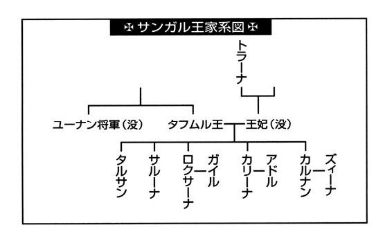
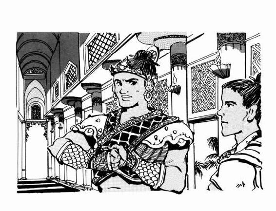
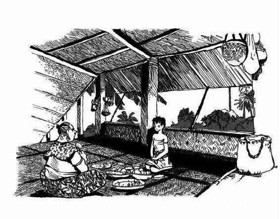

| [上橋菜穂子] 守り人シリーズ04 | |
| 上橋菜穂子 | |
| (2015) | |
|
虚空の旅人
上橋菜穂子
|
目次
序章 海から吹く風
１ 風とうたう娘
２ ラッシャロー〈海をただよう民〉
第一章 海の都
１〈望光の丘〉
２ 祝いの演武
２〈花の四阿〉に吹く風
４ 取り引き
５〈ナユーグル・ライタの目〉
６ エーシャナの指輪
第二章 呪い
１ 海底の祭り
２ 恐怖の銛
３ あやつる者とあやつられた者
４ 生命をあずかるとき
５ 運命の歯車
第三章 儀式の夜
１ 暗雲
２ 攻めと守り
３ 歌舞の宴
４ 断崖
５ 為政者の穢れ
終章 虚空を飛ぶハヤブサ
虚空の旅人
登場人物紹介
◆新ヨゴ皇国
チャグム.........新ヨゴ皇国の皇太子。十四歳。
シュガ............新ヨゴ皇国の星読博士。チャグム皇太子の学問の師、相談役。
バルサ............チャグムをたすけたカンバル人の女用心棒。
トロガイ.........当代最高といわれる女呪術師。
◆サンガル王国
タフムル.........サンガル国王。
カルナン.........サンガル国王の長男。次のサンガル国王。
カリーナ.........サンガル国王の長女。カルシュ島の島守りアドルの妻。
ロクサーナ......サンガル国王の次女。
サルーナ.........サンガル国王の三女。チャグムの接待役。
タルサン.........サンガル国王の次男。十四歳。カルシュ島で育つ。
トラーナ.........故王妃の母。
ズィーナ.........カルナン王子の妻。
アドル............カルシュ島の島守り。カリーナの夫。
ユーナン.........サンガル国王の弟。大将軍だったが病没。
ヤタ...............カルシュ島の漁師。エーシャナの父。潜り漁の名人だった。
エーシャナ......ヤタの娘。五歳。〈ナユーグル・ライタの目〉となる。
ラコラ............カルシュ島の出身。怪我で退役し都で商売を営む。

◆ラッシャロー
スリナァ.........カルシュ島の近くのラッシャロー。父ラナヤ、弟ラーシ、妹ラチャと共に家船で暮らす。
ドゴル............スガル海のラッシャロー。タルシユ帝国の支配下にあるが、息子の死にかんして、帝国をうらんでいる。
タド...............カナーク諸島のラッシャロー。妻はアルァ。
◆その他の国の人びと
ヨーサム.........ロタ王。
ラダール.........カンバル王。
カーム・ムサ...カンバル国の〈王の槍〉。
ヤトノイ・ラスグ...なぞの人物。
サンガル用語集
サンタライ........................魚の名前。〈風呼び魚〉ともよばれる。
ジャゴー...........................魚の名前。風にさそわれる魚の意。骨は闇のなかでも光るため、夜釣りの針として使われる。
ナユーグル........................〈もうひとつの海〉。ヤルターシ海の底にあると信じられている別の世界
ナユーグル・ライタ............〈海の母の子ら〉。ナユーグルに住むといわれている民。
ラッシャロー.....................〈海を漂う民〉。一生を海の上ですごす民。
トアラ・ヤルターシ・ナー...〈本物の海の民〉の意。
ヤルターシ・シュリ............〈海の兄弟〉の意。
ジャー..............................サンガル王国の貨幣の単位。十チャルで一ジャー。
ログ.................................時間の単位。
アッカル...........................サンガルの果物。魚の切り身とあえるとおいしい。
ロッカリーナ.....................花の香をきかせた酒。
チヤアム...........................小魚の塩辛。
ラングーナ........................サンガルに咲く南国の花。
ハノラール........................夕暮れに咲く甘い香の花。
シャグラーム.....................サンガル独特の貝笛。
スル貝灯...........................だいだい色の大きな貝でつくった、ろうそくの風よけ。
タッカ・ドルラ..................ラッシャローのことばで、〈島つきの民〉の意。
ナン.................................ラッシャローのことばで〈仲間〉の意。
序章 海から吹く風
１ 風とうたう娘
風がつよい。夜空には半月がうかんでいたが、つよい風にあおられて走る雲に、消されてはあらわれ、あらわれては消されて、浜に影を走らせていた。
その夜の浜辺を、老いた漁師が白髪を風になぶられながら歩いていた。
（サンタライが風をよんだな。）
今日は大漁だった。とくに、このあたりでは〈風呼び魚〉とよびならわしている、白銀に光る剣ににたサンタライが、大量に網にかかってきた。
年明けは、サンタライの産卵期にあたる。いつもは網など届かないほど深い海の底にいるサンタライが、この時期だけは岩場に産卵するために浜辺にちかづいてくるのだ。
卵を腹いっぱいに抱いたサンタライはどうまいものはない。めずらしい魚があがったときは、まず島守りさまに献上せねばならないが、サンタライだけは、むかしから〈海の母〉から漁師への贈り物といわれていて、漁師たちがさきに食べていい習わしだった。この島の者たちにとっては、年に一度のおたのしみの到来だ。漁師たちは家族とともに、ついいましがたまで、サンタライを焼いて大宴会をたのしんだ。
夜の浜辺を歩いているいまも、老漁師はしあわせな気分だった。まだ鼻の奥に、炭でジリジリと焼いたサンタライの香ばしいかおりが残っている。
若者たちは、いい気分で酔っぱらっていたが、もうそれほど酒が飲めなくなった老漁師は、風がつよくなったことに気づいて、宴席を立ってきたのだった。明日、島守りさまに献上する分のサンタライが、西の岩場の生け簀にはいっている。この風で獣よけの網が飛んで、サンタライが食いあらされでもしたらたいへんだと思ったのだ。
風になぶられて目にはいってくる白髪をかきあげたとき、老漁師は、ふと足をとめた。
浜に、だれかがすわっている。海のほうをむいて、虚空に顔をあげて。
雲が走って、月があらわれた。こうこうと輝く月光にてらされて、しゃがみこむ少女の顔が、ぼうっとうかびあがった。
「......エーシャナ？」
隣の家の娘だった。今年五歳になったばかりの、おとなしい娘だ。
夜の浜辺でなにをしている、と、どなろうとして、老漁師は声をのみこんだ。風にのって、ほそい声がきこえてきたからだ。エーシャナがうたっている。......だが、ふしぎな抑揚をつけて、その口から流れでている言葉は、この島の言葉ではなかった。
（なんてことだ......。）
あたたかい夜の浜辺で立ちつくす老漁師の背には、びっしりと鳥肌がたっていた。
＊
「......風がでてきたな。」
燭台の獣脂ロウソクの炎がゆれて、消えそうになった。家僕たちが、あわてて窓にかけより、ガラガラと大きな音をたてて、風よけを引きさげた。風の音が、急に遠くなった。そしてわずかのあいだに、広間の空気がどんよりと湿気をふくんで、暑くるしくなった。
風とおしのよい、ゆったりとした衣に、豪奢な錦織りの帯をしめた青年が、さっと手をふって家僕たちを広間から追いだした。それから、彼は顔を、客用の大きな椅子に腰をおろしている、きゃしゃな体格の中年の男へとうつした。
その青年アドルは、一昨年、亡くなった父のあとを継いで島守りとなった。ととのった顔立ちだが、いかにも抜け目のない表情が、彼を地位の高い領主というより、計算高い商人のようにみせていた。その一方でサンガル王国支配下の島のなかでも、もっとも伝統あるカルシュ島の島守りであるという誇りも、その尊大な目つきから、すけてみえていた。
「......それで？」
アドルがといかけると、商人の装いをしている異国からの客人は、目をあげて青年をみた。
「ノーラム諸島のガイル殿も、われらの同盟にくわわるそうです。」
アドルの眉が、さっとはねあがった。
「ほんとうですか？ あのガイル殿がね。彼は妻にぞっこんだと思っていたが。」
客人が、うすくわらった。
「いかに賢い妻といっても、たかが女。女ごときに頭をおさえられて、気分のいい男はおりますまい。」
アドルが、苦笑して首をふった。
「あなたは、やはり異国の方だ。わが国の事情にくわしくても、感情まではわからないようですな。サンガルでは賢い妻は宝なのですよ。それだけは、下じもの者もわれらもかわらない。......われら島守りの妻たちは、みな、王家の紐つきだということがちがうだけでね。」
彼は声をひくめたが、アドルの妻はいま館にはいない。サンガル王家の新しい王が誕生する〈新王即位ノ儀〉の準備のために、一足さきに〈望光の都〉の王宮へいってしまったからだ。
「妻たちを、離縁する必要はないのですよ。ただ、地位が逆転するだけでね。サンガル王家の血をひく妻たちが、ほんとうに、あなたたちがいうほどに賢いのなら、どんな状況になっても、したたかに生きのこって、利のあるほうへつくでしょう。......妻との知恵くらベに、あなたたちが負けなければの話ですがね。」
客人がほほえむと、アドルも、にやっとわらった。
「むずかしいところだが......だからこそ、やる気がおきるというものだ。」
客人が、感心したようにうなずいた。
「それが、サンガル人かたぎなのでしょうね。危険な荒海にのりだしてでも、利を得ようとする根っからの商人であり、はげしい気概をもつ武人だときいていたが、まさにそのとおりだ。......サンガル王家はそこを読みちがえているわけだ。妻という鎖をつければ、永遠にあなたがたをおさえられると思っているとは。」
アドルが口をひらこうとしたとき、館のどこかで、扉がバターンとあく大きな音がし、さわがしい人の声がみだれてきこえてきた。泣き声までまじっている。
アドルは足早に広間をよこぎって、扉をあけた。
「なにごとだ？」
家僕たちが、ぼそぼそとなにかを告げている声がきこえ、アドルがうなずいている。
やがて、アドルはふりかえって、
「ちょっと、失礼します。」
と、告げると、広間からでていってしまった。
しばらく、不安をかきたてるようなざわめきがきこえていたが、しだいにしずかになっていった。兵士たちが館の外へでていく足音がして、扉がしまる高い音が館をゆらしたあと、今度は重くるしい静けさが館をおしつつんだ。客人は背を椅子からおこして、帯にはさんでいる短剣を、いつでもぬけるように腰のわきにまわした。
広間の扉があいて、アドルがもどってきた。不安げに眉のあたりをくもらせている。
「......なにごとです？」
アドルは、はっとわれにかえったような顔で客人をみた。
「ああ。......いや、例の件とは、まったく関係ありません。ご安心を。」
客人は顔をしかめた。
「どうしたのです？ あなたらしくないうろたえようだが。」
「ご説明するのがむずかしいのですが......。その、このあたりの島々には、ふしぎなことがおきることがありまして。」
アドルは、客人にむかいあって椅子に腰をおろした。
「......あなたのお国も、海に面しておられましたね？」
「ええ。」
「では、あなたの国にも、おなじような話がつたえられているかもしれないが、われわれは、このヤルターシ海の底には、ナユーグルという別の世界があり、ナユーグル・ライタという民が住んでいるとかたりつたえてきました。」
風がうなり、窓をガクガタとゆらしている。海鳴りが、遠くとどろいている。
「サンガルは海の民です。だが、海のなかでは、もちろんくらせない。ナユーグル・ライタも海の民ですが、彼らは海上ではくらせない。ふたつの世界が、そうやって平和にすみわけているのですが......ときおり、ナユーグル・ライタが、海上の世界をのぞきにやってくることがあるのです。」
客人が眉根をぎゅっとよせた。
「のぞきに......とは？ ナユーグル・ライタとやらが、海からはいあがってくるのですか？」
「いやいや、そうじゃありません。......こちら側の人間の魂を吸いとって、その身体をのっとってしまうのですよ。五歳くらいの子どもが多いのですが、突然、宙をみて、異国の言葉でうたいはじめるのです。そうなると、その子は、ときおり異国の歌をうたうほかは、食べもせず、寝もせず、まるであやつり人形のようになってしまいます。
いったい、どのくらいまえから、そういうふしぎがあったのか、わたしはよく知りません。ただ、あるとき〈サンガル聖堂〉の祭司長が夢をみて、神のお告げをきいたのだそうです。『この童はナユーグル・ライタが人の世をみる目なり。もし人の世で悪しきものをみれば、われ、人びとをほろぼさん』というお告げだったそうで、それいらい、わたしたちは、こういう子を〈ナユーグル・ライタの目〉とよんでいるのです。」
客人は身をのりだした。
「......なんときみょうな。それで、その子は、どうなるのです？」
「ナユーグル・ライタは、〈海の母の子ら〉ともいわれています。われらサンガルの民に魚のわく海をあたえてくれる神の僕たちなのです。神の使いが、海上の民の暮らしをみるための〈目〉であるなら、そまつにあつかうわけにはいきません。......ですが、もし、海上の民にのりうつったナユーグル・ライタが人の世で悪しきものをみて、神にそれを告げれば、われらは神の怒りにふれてほろぼされてしまうかもしれません。
それで〈サンガル聖堂〉の祭司長は、『〈海の母〉への敬意をしめしなさい。都の王宮へみちびき、もてなしなさい。しかし、その使いに、けっして人の世の穢れはみせてはなりません』と王に進言したのだそうです。
このふたつの条件を果たすために、〈ナユーグル・ライタの目〉にされたとわかった子どもは、ずっと目隠しをされて王宮のサンガル王のもとへつれていかれ、最上のもてなしをうけてから、海にかえされる習わしとなりました。」
「海にかえす、とは？」
「......〈魂帰し〉の儀式をおこなって、ホスロー岬から海へおとすのです。」
客人は、さっききこえていた泣き声のわけを知った。子どもの家族が泣いていたのだろう。
「では、さっきの知らせは、その〈ナユーグル・ライタの目〉とやらがあらわれたという......？」
「そうです。にわかには信じられませんが。......その、わたしにとっては、うまれてはじめて経験するできごとなのでね。しかし、事情をきいたところでは、言い伝えとそっくりなのですよ。」
なにを思ったのか、アドルの顔がちらっとゆがんだのをみて、客人が目をほそめた。
「......あなたの知り合いの子どもなのですか？」
「いや、ただの漁師の娘なのですが......。この娘の父親がこの島いちばんの潜り漁の名人だったのです。海で死んだのですが、生きていたころはタルサン王子の潜り漁の師匠でした。」
客人が目をみひらいたのをみて、若い島守りは苦笑をうかべた。
「ごぞんじのように、この島はサンガル王家発祥の地といわれています。小さな島ですが、むかしから王家では、長男は都で王になるべく教育をし、次男はこの島で海の男としてきたえあげる習わしになっています。ですから、妻の弟であるタルサン王子は、わたしと兄弟のようにして、この島でそだったのですよ。タルサン王子は、わたしとちがって、漁が好きで。」
島守りの口調には、かすかに軽蔑の響きがふくまれていた。
「漁師の息子にでもうまれたほうが、しあわせだったのではないですかな。おさないころから、潜り漁に熱中していましてね。その......例の娘を、妹のようにかわいがっていたのですよ。貝で指輪をつくってやったりしていたほどで。だから、こんなことになったのを知ったら、かなしむだろうと思いましてね。」
「......ほう。」
客人は、なにか考えているようにあごをさすっていた。
「で、ここへその娘をつれてきて......そのあとは、王宮まであなたがつれていくのですか？」
アドルはため息をついた。
「そうなりますなあ。」
「正確には、都へ着くまでに何日ぐらいかかる予定ですか？」
客人の目がするどい光をたたえて口早にたずねたのを、いぶかしく思いつつ、アドルはこたえた。
「そう、すくなくとも五日は必要だと思います。準備をふくめると、さらに三日はみておいたほうがいいでしょうな。わたしは、〈即位ノ儀〉におくれていくことになりますね。まあ、どうせ二十日はつづく儀礼なのですから、一日くらいおくれても、たいしたことはないでしょうが。」
そのとき、館の扉があき、ざわめきがきこえてきた。
「きたようですな。......失礼。」
アドルが立ちあがると、客人も椅子から腰をあげた。
「さしつかえないようでしたら、わたしもその〈ナユーグル・ライタの目〉とやらをみてみたいのですが。」
アドルが、どうしたものか、という顔をするのをみて、客人はうすくわらった。
「おわすれかもしれぬが、わたしは多少、呪術の心得があります。魂にふれれば、その娘がほんとうにナユーグル・ライタとやらにのりうつられているのか、ただの心の病なのかくらいは、わかるでしょう。」
「しかし、祭司や島民たちの目があります。あなたの正体をうたがわれたら......。」
客人の笑みがふかくなった。
「だいじょうぶですよ。祭司や島民たちにうたがわれるようなまねはしませんから。」
それでもためらっていたが、アドルはやがてうなずいた。
「......では、どうぞ。」
広間からでると、ふいに風がつよくなった。サンガルの館は、もともと風がとおるようにつくられている。風ふさぎを立てても、どうしてもあちらこちらから、風がはいってくるのだ。
むっと、なまあたたかい潮風に髪をなぶられながら、島守りと客人は、うすぐらい玄関広間へとむかった。館の玄関につうじる広いたたきに、ひと群れの漁師たちが、兵士にかこまれて立ちつくしていた。
人びとの輪のまんなかに、白い布を頭からかぶせられた小さな娘が、祭司に腕をつかまれて、ぽつんと立っている。漁師の娘らしく、腰布以外なにも身につけておらず、日にやけた砂まみれのはだしの指の小ささが、まだ五歳かそこいらの娘であることを告げていた。
アドルは、日頃の傲慢さをわすれさったように、かすかに眉根をひそめて娘をみおろしていたが、やがて、しきたりを思いだして、そろそろと腰をかがめて、娘に挨拶をした。
「ようこそ、おいでくだされた。おかえりの日まで、われらのもてなしをおたのしみくだされ。」
きこえているのかいないのか、娘は棒のようにつったったまま、まったくうごかなかった。
客人が、一歩娘にちかづき、そっと頭をおおっている布に手をのばした。
「布をとってはいけません！」
祭司が、ああてて声をかけた。客人は、祭司にほほえみかけて、おだやかにうなずいた。
「布はとりません。ご心配なく。......祭司さま、海の神の使いに、異国の客人から挨拶をしてもよろしいでしょうか。」
客人は、島民のだれよりも小柄だったが、ふしぎな威圧感があった。みな、思わず気おされたようにだまりこんで、客人の動きをみまもっていた。祭司は、しぶしぶとうなずいた。
客人は、そっと手をのばして、娘の頭にふれて目をとじた。娘は、ぴくりともうごかずに、されるままになっている。
すっと客人は目をあけた。彼はしばらく、無言で、じっと娘をみつめていた。
「......お客人、挨拶は、おすみですか？」
祭司の声に、われにかえったように目をむけると、客人は、なにをとわれているのかわからない、という顔で祭司をみた。
「なにがです？ ......ああ、そう、はい。どうもありがとうございました。」
そういって、みなに一礼すると、客人は人の輪の外にしりぞいてしまった。祭司は、なんとなく腑におちないといった顔で客人をみていたが、やがて気をとりなおして、
「島守り殿、神の使いに最上のもてなしを。」
と、いった。アドルは、あわてて、視線を客人から〈ナユーグル・ライタの目〉にもどした。
「うけたまわりました。......侍女たち、〈ナユーグル・ライタの目〉を最上の客間へとおつれして、湯浴みと寝具のお世話をせよ。兵士ふたり......おまえとおまえが護衛につけ。」
そのとたん、島民たちから、かなしげな声があがった。アドルは、さとすようにいった。
「泣くでない。わたしも、おまえたちのかなしみは、痛いほどわかる。だがこうなっては、だれにも、どうしようもないのだ。どうか、こらえてくれ。
娘を〈ナユーグル・ライタの目〉にささげた家族は、海の神にえらばれた名誉ある者だ。一生、食うにこまらぬ報奨金をサンガル王がくださるはずだ。」
母親が声をあげて泣きくずれた。島民たちが、かなしみにくれる彼女をかこみ、かかえるようにして口ぐちに小声でなぐさめているあいだに、侍女たちが、おそるおそる娘の手を両側からとって客間へとみちびきはじめた。
「エーシャナ！ エーシャナ！」
母親が身をふりしぼって、つれていかれる娘によびかけたが、娘はふりむくようすもみせずに、侍女たちにみちびかれるままに、客間へと消えていった。
真夜中をだいぶすぎたころ、〈ナユーグル・ライタの目〉のいる客間の外で護衛をしている兵士たちは、どこかからきこえてくる単調な小さな音を、きくともなくきいていた。風で、なにかが壁にぶつかっているような音だったが、それをきくうちに、異様な眠気をおぼえて、こらえきれずに居眠りをはじめた。客間のなかでも、侍女たちが、おなじように、小さな音にさそわれて眠りにおちていった。
彼らは、ひとつの影がするりと客間にしのびこみ、やがてふたたび客間からでてきたことなど、まったく気づかずに、夜明けまでねむりつづけた。
２ ラッシャロー〈海をただよう民〉
家船がぐうっと左にかしいだので、うとうとしていたスリナァは、はっと目をあけた。
父さんの黒い影が、ぐっすりねむっている弟をまたいで、スリナァの隣にやってきた。
「......なんの騒ぎだったの？」
スリナァがささやくと、父さんは、おどろいてスリナァのほうをすかしみた。
「なんだ、まだおきてたのか、おまえ。」
今日はサンタライが大漁だったので、カルシュ島の村むらは宴会をしていた。家船をもやってあるこの西の入江まで、島人たちがうたいざわめく声がきこえていたが、そのたのしげな歌声が、突然、不安げなざわめきや泣き声にかわったので、父さんが、ようすをみにいったのだ。
スリナァたちは島人ではない。船の上でうまれ、一生を船の上ですごし、やがて船の上で命を終えるラッシャロー〈海をただよう民〉だった。
島でくらす人びとは、ラッシャローを、根なしの民だから、自分たちより低い階層の者と思っている。──たしかに、ラッシャローは、自分の家船のほかには特定の故郷をもたない。島守りから商業権を保証されることもないので、島人よりは安い値でしかものを売れず、働き手としても安い賃金しかもらえない。
けれど、ラッシャローは自分たちの暮らしに、べつに不満はいだいていなかった。島人のように税をはらうこともないし、だれかと気まずくなったら、がまんしていっしょにくらす必要もない。さっさと帆をあげて、家族だけで海へでてしまえばいいのだ。こんな気楽な暮らしがほかにあろうか。
ラッシャローは、心のなかで、自分たちこそトアラ・ヤルターシ・ナー〈本物の海の民〉だと思っていた。島に住む人びとは、たとえ一人前の海の男、ヤルターシ・シュリ〈海の兄弟〉といえど、タッカ・ドルラ〈島つきの民〉にすぎない。航海の技術にすぐれているとはいえ、いくつかの島のあいだを行き来するだけだ。その海域のことしか知らない。それにくらべると、ラッシャローは、はるか、はるか遠い海まで知りつくしている。島人が考えたこともないような海のふしぎも知っている。......それをひそかな誇りにしていた。
それに、いつも海の上をただよっているわけではない。ほとんどのラッシャローは、それぞれ居心地のよい島をひとつはみつけていて、一年の大半をその島の近辺ですごしていた。スリナァの家族はカルシュ島の人たちと仲がよかったから、一年のうち半分以上は島に家船をつけて、島民たちといっしょに漁をしてすごしていた。半年まえに母さんが亡くなっても、その習慣はかわらなかった。
父さんと、十歳になる弟のラーシ、二歳になったばかりの妹のラチャ、そしてスリナァの四人だけの暮らしは、島影のみえない大海原を旅しているあいだはちょっとさびしかった。だから、いまのように島にもやっているあいだは、なるべく島の娘たちにまじってはたらいていた。
スリナァは、この島に家船をもやっているときにうまれたので、島人たちはスリナァにやさしかった。今日もサンタライを三尾もわけてくれて、宴会にもまねいてくれたが、それはえんりょした。
宴会のたのしげな歌声が風にのってきこえてきても、スリナァはいきたいとは思わなかった。自分のにおいのする居心地のいい寝床によこたわって、きれぎれにただよってくる歌声をきいているほうが気楽だった。
ところが、歌声がとぎれたかと思ったら、急に泣き声にかわったのだ。風にのってほそくきこえてくる口笛のような泣き声は、スリナァたちを不安にさせた。
父さんが、チビさんたちをおこさないように、ささやいた。
「夜が明けたらすぐに、島を発つぞ。......なんと、シグル・ナソイ・ラーがあらわれたんだ！」
サンガルの人びとは、〈ナユーグル・ライタの目〉とよんでいるそうだが、スリナァたちのようなラッシャローは、そのふしぎを、子どもの身体にナユーグル・ライタがはいったからだとは思っていなかった。ラッシャローのあいだでは、そういう子どもは、海のなかにあるという〈もうひとつの海〉に魂を吸われてしまったのだといいつたえられているからだ。
人の世に祭があるように、海底の民も祭をすることがある。そういうとき、たのしげな海の民の歌声に心をうばわれてしまった子どもは、魂を〈もうひとつの海〉にさそわれて、海の底で、時をわすれて歌をうたうのだといわれていた。こういう子のことを、ラッシャローたちは、シグル・ナソイ・ラー〈海の底でうたう子〉とよぶ。
「サラローの潮とノグラーの潮がまじわる潮目あたりに、いそいで船をむけるぞ。
ああ、海の母よ、感謝いたします。なんて幸運なんだ！今晩カルシュ島にいてよかった。
ほかのラッシャローたちが噂をききつけるころには、おれたちは大金持ちになっているぜ。とちゅうで、ナシュ島によってナン〈仲間〉たちには教えような。」
父さんの声がはずんでいた。
ラッシャローのあいだだけでかたりつがれてきた秘密が、いくつかある。シグル・ナソイ・ラーがあらわれると、サラローの潮とノグラーの潮がまじわる潮目のあたりにジャゴーの大群があらわれるという言い伝えも、そのひとつだった。
ジャゴーはサンタライよりもうまい魚で、しかも、その骨は闇のなかでボウッと光る。夜釣りの針として高値で売れる。もしジャゴーをたくさんとることができたら、大金が手にはいるのだ。スリナァは、うれしくなってほほえんだが、ふと、あることに思いあたった。
「父さん、シグル・ナソイ・ラーになってしまった子は、だれなの？」
父さんがだまりこむのをみて、スリナァの胸にいやな予感がひろがった。
「......エーシャナだよ。かわいそうにな。」
スリナァは息をのんだ。──エーシャナ！ おとなしい、かわいいエーシャナ......。妹のようにかわいがっている、あの子が......？これからエーシャナをまちうけている運命を思うと、さっきまでのたのしい気分は消えさってしまった。
家船は、カルシュ島を発って三日間ずっと風にめぐまれて、よい旅をすることができた。
「潮がみえるか？ 海をよくみろや。潮の流れがわかるはずだ。」
舳先から父さんの声がきこえてくる。舳先にすわっている父さんは、うまく風をうけるように帆を器用にあやつっている。つよい日ざしをさけるように手をかざして目をほそめ、日にやけた顔のしわをふかくしながら、父さんはまだ十歳のラーシに潮について教えていた。
「色がちょっとちがうよ。色でみわけるの？」
「色もちがう。でも、それだけじゃねえんだ......。」
ふたりの会話をきくともなくききながら、スリナァは海藻をすりつぶした日やけ止めを顔に塗っていた。海の色のふかさが、どの島からも遠くはなれた外海にでたことを告げている。
でも、心細くはなかった。右手のほうに二艘、左手のほうに三艘、ナン〈仲間〉の家船がおなじ方向をめざして走っているからだ。伯父さんたちの家族の家船だ。ナン〈仲間〉がいれば、どこかの島の海賊におそわれる心配もない。
サラローの潮とノグラーの潮がまじわる潮目は、もうそんなに遠くない。このいい風が吹いていてくれれば、きっと日が暮れるまえには着けるだろう。
腕に抱いているおさない妹のラチャは、すーすー寝息をたててよくねむっている。家船は二艘の舟を横につなげてできていて、とても安定がいい。それでも、鏡のような海面がひろがるしずかな内海から、帆をあげて波の荒い外海へでたときは、小さな家船は木の葉のようにゆれた。ラチャも弟のラーシも船酔いでかわいそうだった。でも、もう外海になれたのだろう。ふたりとも船酔いの苦しさをわすれて、けろっとしていた。
船端によりかかって顔を海の上にだしたとき、ふと、なにかが顔をさすったような気がして、スリナァは海面に目をおとした。
なにもかわったものはみえなかったけれど、ふわっ、ふわっとやわらかい風が顔にあたってくる。まるで、海から風の赤ちゃんがうまれて、顔に吹きあたっているような感じだった。
それに、なにかきこえる。波の音でも、波を切る船の音でもない。ふわっとうまれてくる風がのせてくる、ふしぎなささやき......。
（まさか、シグル・ナソイ・ラー〈海の底でうたう子〉の歌......？）
ぞうっと背筋のあたりが寒くなった。スリナァは、あわてて船縁から身をはなした。
「いい風だなぁ。まるで、おれたちの背をおしてくれてるみたいだ。」
父さんがたのしそうにいった。
「......父さん。」
父さんがふりかえった。スリナァは、ふるえそうになる声を、必死におちつけようとした。
「父さん、風が海からうまれることって、ある？」
「なんだ、そりゃあ？ なんでそんなことをきくんだ？」
スリナァは、いま体験したふしぎなできごとを、父さんに説明した。それをきくと、父さんは顔を海の上につきだして、しばらくじっとしていたが、やがて首をふった。
「......おれには、なんもきこえねえなぁ。風の赤ちゃんも感じねえ。」
父さんは、ほほえんでスリナァをみた。
「おまえ、きっと、母さんににているんだな。おまえの母さんは、サーラン〈風読み〉だったから。ときどき、吹いてくるまえに、風の方向を教えてくれたもんだよ。もうちょっとしたら、南から風が吹くよ、とかな。」
そういえば、母さんがよくそんなことをいっていた。そのやわらかい声を思いだしたとたん、胸にざわざわしていたこわい気もちが、しずまっていった。
「そういやぁ、まえにだれかがいってたな。シグル・ナソイ・ラー〈海の底でうたう子〉のことを、スー・コン・ラー〈風になった子〉とよぶこともあるんだとさ。サンタライが風をよんでくる魚だっていわれるのとおなじに、ジャゴーは風にさそわれる魚だっていわれるだろう？シグル・ナソイ・ラー〈海の底でうたう子〉にだれかがなっちまうと、ジャゴーの大群があらわれるのは、その娘が風になってさそったからだっていうのさ。」
「じゃあ、この風はエーシャナなのかしら......。」
「そうかもしれねえな。......かわいそうな娘だ。風になっているなら、海におとされるまえに身体にもどればいいけどなぁ。──そういやぁ、母さんも、エーシャナをかわいがってたなぁ。よく家船にあげてやって飯を食わせてやってたもんなぁ。」
その思い出とともに母さんの姿がうかんできて、あいたくてあいたくて胸が痛くなった。
ふいに、父さんや弟、妹をいとおしく思う気もちがわきあがってきた。これからもずっと、みんないっしょにしあわせにくらせますように。そうスリナァは心のなかで祈った。
夕焼けが、西の空いっぱいにひろがりはじめたころ、スリナァたちは目的の場所──冷たいサラローの潮流とあたたかいノグラーの潮流がまじわる潮目にたどりついた。一瞬、雲がうずまいているのかと錯覚したほどの海鳥の群れが、海と空の間で急降下をくりかえしている。父さんと弟のラーシがまず歓声をあげ、すぐにスリナァもふたりがみたものに気づいてよろこびの声をあげた。──海のなかに川が何本も流れている。銀色の背を光らせたジャゴーの大群の流れだ。ものすごい大群だった。あたたかいノグラーの潮にそってジャゴーの群れは泳ぎ、潮目にうずをつくっていた。
スリナァは髪がさかだつほど、風を感じていた。帆がうけている風ではない。海の底からわきたってくる風。ふしぎな歌をひびかせている風だ。──きっとこれは、ナユーグル〈もうひとつの海〉から吹いてくる風なのだ。この風がのせてくる歌は、やかましい海鳥の鳴き声にも、父さんたちの歓声にも消されずに、心の奥にひびいてくる。
そのうちに、スリナァは、あることに気づいた。ふしぎな風を感じたあとに、じっさいに風が吹いてくるのだ。まるで、ナユーグル〈もうひとつの海〉からの風と、こちらの海風が追いかけっこをしているような感じだった。
「父さん、東南から風がくるわ。」
思わずスリナァが声をかけた瞬間、ほんとうに東南から風が吹いてきて、父さんはあわてて帆をあわせた。そして、こちらをみると、ひょいっと眉をあげてわらった。
伯父さんたちの家船からも歓声がきこえてくる。たがいの家船の間に網を張って一網打尽にしようか。いやいや、これだけの大群だと、網がひっぱられて危険だ。こっちが海にひきずりこまれるぞ。──そんな話をしている父さんと伯父さんたちの声もうわずっている。
けっきょく、網と銛と両方をつかって、ナン〈仲間〉が力をあわせてジャゴーをとりはじめた。銀色のジャゴーがバタバタおどりながら船底におちると、弟のラーシがわめきながら棒で頭を打ってジャゴーをしずかにさせる。スリナァも従姉妹たちと力をあわせて、父さんたちが張っている網のなかからいそいでジャゴーをすくい、船になげいれる動作をくりかえした。
日が完全に暮れおちるころには、どの家船もジャゴーでうまっていた。
「どこで寝るの？」
ラーシが、ぼうぜんとした表情で、足もとをみている。父さんも、気がぬけたような顔で、くるぶしまでうめているジャゴーをみていたが、やがて、ぽつんといった。
「......ちょっと、とりすぎたな。」
翌日は、一日、ジャゴーをさばいて干物にする作業がつづいた。スリナァはジャゴーの骨を海水であらって、指を刺さないように気をつけて紐でまとめる仕事を、もくもくとつづけた。
つかれると、とれたてのジャゴーの、新鮮で脂がたっぷりのった切り身を、海水であらって口に入れる。海水の塩辛さがジャゴーの身の甘みをひきだして、口いっぱいに旨みがひろがる。
「ああ、ジャゴーはなんておいしいんだろう！」
家船をジャゴーで満杯にしたしあわせなナン〈仲間〉たちは、いい気分で、いちばん近い市場があるラス島に船をむけた。ジャゴーは、きっと高く売れるにちがいない。
「これだけのジャゴーとなると、五千ジャーにはなるな。新しい家船が買えるぞ。」
父さんが明るい声でいった。ここから市場のあるラス島までは、いい風が吹けば二日ほどでいけるが、風は逆方向の北にむかって吹いているから間切っていかねばならない。港に着くころには、ジャゴーの干物もいい具合にできあがっているだろう。
異変がおこったのは、ある無人島の岬をまわったときだった。
もう日暮れ間近で、島はぼんやりと青く影にしずんでいる。サゴ伯父さんの家船と、ほかの伯父さんたちの家船が、スリナァたちの家船よりずっとまえのほうを走っていた。岬の先端を、サゴ伯父さんの家船が、うまく帆をあやつりながらまわっていくのが遠くみえていた。
サゴ伯父さんの家船が岬のむこう側にさしかかったとき、さけび声があがった。舶先にいたサゴ伯父さんがのけぞって海におち、水しぶきがあがるのがみえた。なにがおきたのかわからず、スリナァたちは船端に身をのりだして、そちらをすかしみた。
海におちるとき、サゴ伯父さんの肩のあたりで、なにかが光ったようにみえたのは気のせいだろうか？──そんな考えが頭をかすめた直後、スリナァは、赤い巨大な頭と金色の目が、岬の陰からぬうっとあらわれるのをみた。
すぐに、その頭の持ち主が岬の先端をまわって姿をあらわした。
朱色と金にふちどりされた巨大な船首──それは、サンガルの商船だった。さほど大型ではなかったが、それでもラッシャローの家船の十倍はあった。
その船端に、ずらっと兵士がならんでいるのがみえた。薄暮のなかで、兵士たちの姿は黒い影にしかみえなかったが、手にしている弓矢の金具が夕日の最後の光をうけて光っていた。
ヒュン、ヒュンと風を切る音がひびいた......とたん、伯父さんたちの悲鳴があがった。
サンガルの兵士たちが、自分たちを攻撃している！......いったい、なぜ？
「海にとびこめ！」
父さんがどなった。スリナァはこおりついたように父さんをみた。父さんは足にすがりついているラーシの腕をつかんでひきはがすと、かかえあげて海にほうりこんだ。そして、スリナァにかけよると、その腕から妹のラチャを抱きとって、スリナァの頬をパーンと平手で打った。
「ぼうっとしているんじゃねえ！ 海にとびこめ！」
赤ん坊を抱いた父さんが目をつりあげてスリナァをにらんでいた。
カッ、と硬い音がした。──矢だ。カッ、カッと音をたてて矢が船端につきささっていく。
「逃げろ！ おれたちのことは考えるな。おまえだけたすかることを考えろ！」
ぐんぐん船がちかづいてくる。矢が雨のように降りそそぎ、父さんとスリナァは思わず頭をかかえて伏せた。父さんが、小さなうめき声をあげた。はっと顔をあげると、父さんの肩に矢が刺さっているのがみえた。スリナァは、ふるえながら父さんにとびつき、肩に刺さっている矢をぬこうとした。だが、父さんはスリナァをおしのけた。火がついたようにラチャが泣いている。
「とびこめ！ 海にもぐれ。深くもぐって、島まで泳げ！おまえなら逃げられる！」
スリナァは泣きじゃくりながら、立ちあがった。そして、船端をけって宙に舞った。
冷たい海水が顔を打った。スリナァはもぐらずに、海面に顔をだして、船にしがみついている弟のほうへいこうとした。けれど、すぐに父さんの怒声がとんできた。
「おれたちのことを考えるな！ ひとりで逃げろ！」
また、ヒュウヒュウとおそろしい矢の雨の音がきこえてきた。スリナァはふかく息を吸うと、水をけり、暗い海にもぐった。
どうやったら矢にやられずに息つぎができるだろう。いくら潜りが得意なスリナァでも、もぐったままで島まで泳ぐわけにはいかない。でも、海面に頭をだしたら、雨のように降りそそいでくる矢の餌食になってしまう。あの船の射手たちの目をさけるには、彼らが予想できないほど家船からはなれてから、うかびあがるしかなかった。
そのとき、スリナァの頭にうかんだのは、〈流れ乗り〉だった。浜から海の彼方へ流れるはやい海流にのると思いがけないほど遠くへいける。この流れにもっていかれると、気づいたときには、はるかに浜からはなれてしまっておぼれ死ぬ人が多いから、子どもたちはこわがってちかよらない。でもスリナァは、流れにわざとのって、よく無謀な遠泳をこころみたものだった。
島からはなれる方向へ泳ごう。──ここから島までだって、かなりの距離がある。ふつうなら、一生懸命島へむかって泳ぐだろう。兵士たちも、そう思っているにちがいない。
スリナァはもぐったまま、全身で海流の流れを感じながら泳ぎはじめた。しばらく泳ぐうちに、身体をおしながす力を感じたので、その流れへ身体をすべりこませた。
命がけの賭けはみごとにあたった。兵士たちは、家船と島の間を監視しつづけたが、スリナァがはるか彼方で顔を海上にだしたことには、まったく気づかなかった。
スリナァはうすぐらい海面にうかんで、大きな船が、小さな家船五艘を船尾にむすびつけて、うごきはじめるのをじっとみつめていた。ここからでは、家船に残っているはずの父さんたちが生きているのかどうかみることはできなかった。船が岬をまわっていくのをみおくってから、スリナァは、すすり泣きながら、ゆっくり抜き手をきって無人島へむけて泳ぎはじめた。
第一章 海の都
１ 〈望光の丘〉
まず風が、それから白い光がはいってきた。だれかが、牛車の御簾のすそをもちあげたのだ。
「畏れおおくも、皇太子殿下にもうしあげます。──〈望光の丘〉に着きましてございます。」
案内役の声は、かすかにふるえている。こちらをみないように目を伏せているので、声がくぐもって、よけいにきこえにくい。
外で、パンッと布が宙を打つ音がした。侍従たちが地面に御足のせ布をしいているのだ。
チャグムは、牛車のかぎられた空間のなかで、そっとこわばった身体をうごかしてから、ゆっくりと外へ足をふみだした。ふつうの人ならば、足がしびれてよろけてもご愛敬ですむが、新ヨゴ皇国の皇太子がよろけたら、不吉の前兆として人びとがおびえてしまう。
背をのばして立った瞬間、チャグムは思わず声をあげそうになった。
強烈な日ざしをはじきながら、はるか視界の果てまで、ふかい青......紺碧の海がひろがっている。──そして......。
「あれが、〈望光の都〉か。」
チャグムは、心の底からの感嘆をこめて、つぶやいた。
サンガル王国の都は「珊瑚のような都」だとか「海にうかぶ宝石」だ、などと評されているが、じっさいにみなければ、このうつくしさは、万言をつくしてもつたわらないだろう。
この丘からみおろすと、なぜ、この都が「珊瑚のようだ」と評されたのかが、よくわかる。〈望光の都〉は、大河ロゴ川の河口をはさむようにしてひろがっている。
王宮は、街をみおろすように、海へつきだした岬の上につくられているのだが、その岬は、上からみると、まるで珊瑚のように複雑に枝分かれして、海の上にひろがっているのだ。
しかも、その岬を形づくっているのは、いったいなんという種類の土なのか、かすかに桃色がかった白い土なのである。その上にたちならぶ家々も、まるで貝のように白い。
ひときわ目をひく、サンガル王の王宮は、巻き貝を模してつくられたという四つの尖塔をもつ巨大なもので、その壁も屋根も、名高い〈サンガル貝陶板〉でおおわれているために、光をやわらかくはじき、王宮自体が輝いているようにみえる。
紺碧の海に白く輝く王宮と家々。あわい桃色の岬......。まさしく海にうかぶ珊瑚の都だ。
背後に、人が立った気配がした。
「うつくしいのう、シュガ。」
ふりむかずに、つぶやいたチャグムに、背後の人影がうなずいた。
「まことに。」
目をほそめて、シュガは天をふりあおいだ。
「ここはまた、〈空読み〉にも最高の丘ですな。海風が心地よいし。」
チャグムはふりかえって、自分の相談役であり学問の師である、若き星読博士シュガにほほえみかけた。
「そなたは漁師の息子であったな。海をみると、故郷を思いだすのではないか？」
シュガもほほえんだ。彫られたような端整な顔が、ほほえむと、すっとやわらかくなる。
「はい。......ただ、海の色がちがいますな。あれをごらんください。都のある岬のふもと、ぐうっと弓なりに、東西にずうっとのびている浜辺の白さ。そして、浜に近い海の、あのあわくすきとおった緑を。わが故郷の浜の砂は、もっと灰色にちかくて、海の色もふこうございます。」
チャグムは、ゆびさされた広大な海岸線をながめやった。たしかに、あんなふうにすきとおったうつくしい緑色の海は、はじめてみる。
目をほそめて、顔にあたるつよい日ざしをたのしみながら、チャグムはつぶやいた。
「それに、この日ざしのつよさ。──わが国とは、海の青さも、空の青さもちがう。隣国へおとずれただけで、これほどにちがうとは。......世の、なんと広大なことよ。」
「御意。」
「広大といえば、このサンガル王国もなかなかに広大な国だな。わが国との国境の峠を越えてから、今日で......十二日になるか。サンガルというと海運と海産物の国のような印象があったが、農地も肥えていたな。」
シュガの笑みがふかくなった。学問係としておそば近くつかえるようになって、もう三年。十四歳の、この皇太子チャグムの鋭敏さを感じるたびに、シュガはうれしくてたまらなくなる。
（このお方を、帝にせねば。......けっして、帝への道から足をふみはずさぬように、まもらねば。）
昨年、帝の三ノ妃が、玉のような皇子をうんだ。
チャグム皇太子は、これまで、帝のただひとりの息子として、その地位をまもられてきた。しかし、新たに皇子が誕生したいまは、チャグム皇太子は「うしなってもかわりのある」存在となってしまったのである。
帝は、親子の情にとらわれぬ冷たいところのあるお方だ。「この者、帝になる器にあらず」と判断するようなおこないがあれば、廃嫡の決意をなさる可能性もある。
皇太子が廃嫡されるとき。それは病か事故にみせかけたひそかな死......すなわち暗殺を意味することを、皇室の闇の部分をよく知っているシュガも、そして、チャグムも承知していた。
かつて、チャグムはその身に、精霊の卵をやどすというふしぎな体験をしている。チャグムが異世界の精霊をやどした、と知った帝は、〈聖なる皇室〉という威信をまもるために、即座に自分の息子であるチャグムの暗殺を決意したのだ。
帝がはなった暗殺者たちの襲撃と、チャグムの身にやどった精霊の卵を追ってきた異界の魔物から、わずか十一歳であったチャグムがのがれえたのは、バルサという女用心棒にたすけられたからだった。バルサと、そのおさななじみの薬草師タンダ、そして、タンダの師匠である呪術師トロガイが、彼の命をすくったのである。
そのとき、帝の命令をうけて、チャグムを暗殺する側としてはたらいていたシュガは、みょうないきさつから、チャグムをまもる側へとかわった。
いずれにせよ、帝は父親であるにもかかわらず、長男サグム皇太子が病を得て、突然逝去してしまうという悲劇がおこらなかったら、チャグムをあくまでも暗殺しようとしただろう。
長男をうしなってはじめて、帝はあとを継ぐ皇太子としてチャグムを生かす決意をしたのだった。
（......帝は、冷酷なのではない。親子の情というものと、あまりにかけはなれた暮らしをされている、そのお立場ゆえの、心の動きなのだ。）
シュガは、かつてチャグムに、神の子孫である帝は、真綿につつまれた清らかな魂として、下じもの穢れからまもられていなくてはならぬ、と、もうしあげたことがある。帝となる者は、うまれおちたときから宮の奥深くにまもられ、ほとんど人とふれあうことなく、ひっそりとそだてられる。そうしてそだてられた心が、下じもの者の心とは、かけはなれていても、ふしぎはない。
しかし、チャグム皇太子は運命のいたずらで、宮の奥から下界へ──人びとのわいざつな暮らしのなかへ、おちてしまった。そのときであった人びととのふかい愛情の絆が、チャグムを決定的にかえてしまったのである。賢く、やさしいが、内にまるで炎のようなはげしさを秘めたこの皇太子チャグムが、深山の泉のような帝と、そりがあうはずもない。
このサンガルへの旅にも、帝の、チャグム皇太子への情のうすさがうかがえる。皇太子の相談役につけられたのは、シュガひとり。あとは、護衛の衛士や侍従たちだけだ。
たしかに、この旅は交渉ごとではなく、祝いの儀礼への参列だが、サンガルとの外交経験豊富な文官のひとりもつけずに、皇太子を異国へ送りだした帝の冷たさに、シュガは背筋が寒くなる思いをいだいていた。
サンガル王国の都には、日暮れまでには着くだろう。──そのときから、試練がはじまる。
サンガル王国は、チャグムの国〈新ヨゴ皇国〉の西南にひろがる海を領域とする王国である。さきほど、チャグムがいっていたように、とくに、交易と、海産物によってさかえる国だ。
両国は、かつて一度も戦をしていない。新ヨゴ皇国は、戦火をきらって南の大陸から新天地へと逃げてきた帝によってつくられた、戦をきらう国であったし、南の大陸の諸帝国からの出兵を、いつうけるかわからぬ海辺のサンガル王国にしてみれば、戦火をまじえて国力をよわらせるより、背後をまもる同盟国としておいたほうが、はるかに益があったのである。新ヨゴ皇国とサンガル王国は交易をおこないながら、おだやかな関係をきずいていた。
そのサンガル王国から、年明けとどうじに、〈新王即位ノ儀〉への招待が届いた。サンガルでは第一王子に次男が誕生すると、父王が第一王子に王位をゆずるしきたりとなっている。昨年の暮れに、カルナン王子にふたりめの男児が誕生した、との知らせがあったときから、新年には新王への王権授与の儀式がおこなわれることは予想されていた。
チャグムの父が帝の位についた〈即位ノ儀〉のときには、サンガル王自身が、珊瑚と真珠をちりばめた、すばらしい宝物箱をみずから持参し、祝辞を述べている。今回、新王が即位するとなれば、新ヨゴ皇国としては、同等の礼をつくさねばならない。
新ヨゴ皇国では、帝は国の魂とされており、国をはなれるわけにはいかない。そこで、皇太子であるチャグムが、〈新王即位ノ儀〉に参列することになったのだった。
この話が決まったとき、チャグムはひそかに、とびあがってよろこんだ。息がつまりそうな宮から、たとえいっときでもはなれて、異国へ旅ができるのだ。わずらわしい儀式をこなさねばならないとはいえ、こんな息ぬきができるなら大歓迎だった。
「半年おきぐらいに、あちらこちらの国で新王が即位してくれればよいのにな。」
などと軽口をたたき、シュガにたしなめられた。
「殿下。ごぞんじのことと思いますが、サンガル王家は、海運で国をひらいた家柄。根は商人であり、ひじょうに計算高いといわれております。帝の〈即位ノ儀〉にサンガル王みずからがこられたのも、帝のお人柄をはかりにおとずれたのです。同盟国として大事にすべき国か、それとも、いっきに攻めこんで、支配をしてしまったほうが利益になるかを。
サンガル王家は、根は商人ともうしましたが、一方では、周辺の島々を縄張りにしていた海賊たちを攻めては支配下におさめ、広大な王国をきずいていった、はげしい武人の血も流れております。......殿下は、国をせおって儀礼に参列されるのだということを、おわすれなきよう。」
チャグムは鼻を鳴らした。
「つまり、なめられるなっていうわけだ。」
わざと汚い言葉をつかった皇子を、シュガはかるくにらんだ。
「そのとおりでございます。」
「なるほど。......むずかしいな。おまえの言い方を借りるなら、わが新ヨゴ皇家は、神聖なる家柄だ。血のにおいをさせてはならぬ、清らかで、おだやかでなければならぬ。それでいて、相手を威嚇するということは、うつくしい鞘のなかの、切れる刃を感じさせろということか。」
シュガは、にやにやしているチャグムに、顔をしかめてみせた。
そんなやりとりをしてから、はや、ひと月以上がすぎてしまった。出立準備に半月かかり、ようやく出立してから、二十二日もかけて旅してきた。その旅も、あと数刻で終わる。
「シュガ、みてみよ。帆船がつどっている！」
紺碧の海に白い航路の尾をひいて、数十隻の巨大な帆船が〈望光の都〉をめざして、集まってきているのがみえた。色とりどりの帆がはためき、こまかく切った色紙を海に散らしたようにみえる。
「サンガル王国の島々の船がほとんどでしょうが、同盟国からの船もきているのでしょう。」
たえまない波のとどろき。するどい鳴き声をあげて天空を交差する海鳥たち。
チャグムの頬を、ふっと潮のにおいのする風がさすった。その瞬間、まるで刺すような鋭さで、チャグムは自分が異国にいることを実感した。
視界の果てまでひろがる海。サンガルの言葉で〈ヤルターシ〉海とよばれるこの紺碧の海の彼方には、南の大陸がひろがっている。チャグムがうまれそだったこの北の大陸より、はるかに広大な大陸が。そこでは、国力も武力も強大な諸国が、血で血をあらう争いをつづけているという。
二百五十年以上もむかし、チャグムの祖先、聖祖トルガル帝は、戦火のたえぬ南の故国ヨゴ皇国をすて、ヨゴ人たちをひきいて、このヤルターシ海をわたってきたのだ。
いま、自分がそのおなじ海をみているのかと思うと、ふしぎな気がした。
「......殿下、まいりましょう。」
シュガの声にうなずいて、チャグムは目が痛くなるほど青い海に、ゆっくりと背をむけた。
２ 祝いの演武
「おい、これは古いほうの拳帯だぞ。血のしみがついている。こんなものを〈祝いの演武〉でつかえるか！」
革の拳帯を侍従になげつけて、タルサン王子はどなった。拳帯が、パンッと若い従者の肩にあたっておち、従者はあわてて新しい拳帯をさがしに武具室へと消えた。
とても十四歳とは思えぬほど長身で、たくましいタルサン王子の日にやけた胸に、もうひとりの従者が、金糸を縫いこんだうつくしい胸当てをつけるのを、すらりとした娘が、腕を胸もとに組んでみていた。
「タルサン、深呼吸しなさい。そんな飢えたサメみたいな顔で〈祝いの演武〉にでるつもり？」
かすかに笑いをふくんだやわらかい声でいわれて、タルサンはじろっと姉をみおろした。
「おれは、どこかの国の腑抜けとはちがう。腑抜けより、飢えたサメのほうがよっぽどましだ。」
サルーナは苦笑した。
「しょうがないわね。兄上は、あなたをかろんじて、あんなことをおっしゃったわけじゃないのよ。」
「では、どんなつもりで、おっしゃったのだ？」
昨日の夕方、新ヨゴ皇国のチャグム皇太子を宮殿にむかえ、国賓として別館へとみちびいたあと、兄であるカルナン王子がいった言葉に、タルサンは、はげしくきずついていた。
カルナンはタルサンをふりかえり、ため息をつくようにいったのだ。
「みごとな物腰。如才ない受け答え。あれで、そなたとおなじ十四歳か。いやはや。
なにより、あの気品がすごい。まるで貝の奥に秘められた極上の真珠のような印象だな。われらのような海賊あがりの王家では、ああいう気品はなかなか得られぬ。おまえなどは真珠というより武骨な銛のようだ。──率直なのは男らしくてよいが、王家の者としては、あの皇子のように、おのれをうつくしい貝でかくすすべも必要だぞ。わたしの即位式のあいだ、くれぐれも他国の来賓たちに、品のない王子だと思われぬようにしてくれよ。」
兄の言葉を思いだして、タルサンは、鼻を鳴らした。
「品がなくて、わるかったな。どうせおれはカルシュ島育ち。宮殿育ちの兄上とはちがう。
兄上も、一度あの島......われらがサンガル王家の故郷でくらしてみればよいのだ。そうすれば、われらがここまでのしあがった気骨が、どこからきたのかわかるだろうに。
われらは、気品なぞで民からあがめられているわけではない。このヤルターシにひろがる島々の、どのヤルターシ・シュリ〈海の兄弟〉よりつよく、民をゆたかにやしない、他国からまもる力によってあがめられているのだ。──おれは気品がある真珠と思われるより、空を裂いて飛ぶ武骨な銛と思われたい。」
いっきにそういって、タルサンは姉をみつめた。
「おれは、まちがっているか？ 姉上。」
サルーナは弟にちかづき、かたくにぎりしめられている弟のこぶしを、ぽんぽんとかるくたたいた。
「わたしは武骨な銛が好きだし、あなたが真珠になる必要はないわ。王となる定めの長男は宮殿でそだてて、軍を統括する将軍となる次男は、カルシュ島で、たくましい海の男としてきたえあげるというサンガル王家の理想を、あなたはきちんと体現している。......でも、兄上がおっしゃったことも、わたしには、わかるのよ。」
サルーナは、言葉をさがすように、すこし間をおいた。
「......兄上がおっしゃりたかったのはね、あなたが、あまりにむきだしだということなの。
王家の者には、〈力〉のはかに、もうひとつ、なにかがなければならない。もやのように王家の者をおおっているそれが、平民とわたしたちをへだてているものなの。
あのチャグム皇太子に拝謁したとき、わたしも兄上とおなじことを感じたわ。新ヨゴ皇国では、皇家の者の目を平民がみたら雷に打たれたようになってしまう、といわれているそうだけれど、あの皇太子の目には、たしかに権力以上のなにかがあったわ。もやのように、なにかがあの皇太子をおおっていて、底がみえない。......あれは、ものすごいつよみよ。そうでしょう？」
タルサンはぎゅっと眉根をよせて、姉をみつめていた。
「自分をかくさない男は信用できるから、人びとは、あなたを好きになるし、たよりにもするでしょう。でもね、あなたをおそれることもないわ。」
タルサンは肩をゆすった。
「姉上のおっしゃることは、どうもよくわからん。それこそ、もやみたいだ。それに、おれは、そんなわけのわからんものでおそれられたいとは思わない。おれのままでおそれられたい。」
サルーナはほほえんだ。サルーナは、この率直な弟が大好きだった。はげしく、まだおさないが、愚かではない。いずれ、いまの言葉の意味を自然にさとる日がくるだろう。
従者がかけもどってきて、新しい拳帯をタルサンにさしだした。それをまこうとしたタルサンの手を、サルーナがとめた。サルーナは、まるで鞭でもふるうように、拳帯でパシッと宙をうち、それからていねいに帯を弟のこぶしにまきはじめた。
「このこぶしが、みる者をおそれさせるように。」
そういって、にこっとわらった姉をみるうちに、さっきまでの燃えるような怒りが、すこしおさまっていくのをタルサンは感じていた。
賢い姉、サルーナ。黄金色の肌に、くっきりと大きな茶色の瞳。いささか顔立ちがきつすぎる感もあるが、そのきつさをゆたかで明るい表情がやわらげている。この姉を妻にと望む者は多いが、サンガル王家の女たちを妻にするには、それなりの覚悟がいる。
王家の男たちが王国をひっぱっていくつよい腕だとすれば、王家の女たちは正しい道をみいだす頭だ。もともとヤルターシにうかぶ島々の女たちは、男たちがとってきた魚を売りさばく商人で、賢い妻は、なににもかえがたい宝だといわれている。
サンガル王国は、大小数百もの島を支配している海の王国だ。
かつて、この海域には、大きな王国はなく、ただ、別の島から略奪にやってくる海賊から自分たちの島をまもるために、近い島同士が同盟を組んでいただけだった。男たちは嫁をもらえるくらいの年ごろになると、戦士団を組んで島をまもり、不漁のときには海賊になって、別の海域へ攻めこんでいった。
働き手がたりなくなると、別の島や大陸の国々──彼らは軽蔑をこめてラシュターシ〈陸〉とよぶ──に奴隷狩りにでかけていく習慣もあった。サンガル王国ができて、法によって奴隷狩りが禁じられても、まだ、ひそかに他国へ奴隷狩りにいく商売はつづいている。
海賊たちが、そうやって攻めあっているうちに、しだいにつよい戦士団が多くの島を支配するようになり、小さな王国ができていった。だが、国といっても新ヨゴ皇国のように帝を神の子孫としてあがめて、そのもとにまとまっているような国ではなくて、つよい男たちの下にいれば、いざというときにまもってもらえるし、交易通路もひろがって利益がある、という気もちで手下になっているというだけだった。
サンガル王家の祖先たちも、そういう戦士団──ほかの島からみれば海賊──のなかで、とびぬけてつよい男たちと賢い女たちによって、ぐんぐん頭角をあらわし、ほかの戦士団を攻めほろぼし、あるいは味方にひきいれて、広大な海域を支配する王国をきずいたのだった。
けれど、王国ができて百二十年ほどたったいまも、海の民たちの気質はあまりかわらない。海域がちがえば言葉もちがうし、共通語のサンガル語を片言しか話せない者もいる。
サンガル王国にのみこまれた十二の小国の王たちは、いまはサンガル王国の地方領主にすぎないが、それでも〈島守り〉というむかしながらの名でよばれ、その配下の戦士団は、ヤルターシ・シュリ〈海の兄弟〉としての絆をたもっている。それに、この十二人の〈島守り〉たちは、いまも自分の縄張りの民から税をとり、配下の兵をやとうことをゆるされている。
そのかわり、サンガル王家は、彼ら島守りに税を課し、また各島から徴兵して、強力な王国軍の基礎をつくった。彼らの子孫は都でうまれそだち、代々王国軍兵士となり、その生え抜きの兵士から、王国軍を統率する将軍が選ばれるようになった。この将軍たちを統括するのは、王の弟である大将軍であり、島守りたちも大将軍の命令にはしたがわねばならない。
サンガル王国が大きくなるにつれて、島守りたちは、他国からの侵略や、海賊におそわれる心配をすることなく交易ができるようになり、他国との交易路をどんどん拡大していった。才覚のある島守りたちは、ゆたかな海の商人となり、彼らが利益にみあった税を王家にはらうことで、サンガル王家もまた富をたくわえ、ゆたかになっていったのだった。
それでも、サンガル王家の支配をきらって、故郷の島をすて、王国の外の島へうつってしまう者たちもいたし、船の上でうまれて、島から島へ旅し、やがて船の上で死ぬラッシャロー〈海をただよう民〉もいる。彼らは税をはらうこともないし、息子が三人いても、そのうちのひとりを王家へ、もうひとりを島守りへ兵士としてだすこともしない。
サンガル王家は、そういう者たちを臣民として保護しないが、処罰もしない。王家の下にいることで得られる利益と、王家との人間関係の絆とが、ゆるやかにサンガルという王国をひとつにしていた。
そして、島守りたちと王家をむすぶ、もっともたいせつな絆は、結婚によってサンガル王家の女たちがむすんできたのだった。
島守りたちは、つねにサンガル王家に監視されているようなものだが、それが、これまで彼らの反抗心をあおらなかったのは、妻たちのおかげで、小さな島々の島守りではけっして得ることのできない数々の利益や名誉を得ることができたからだった。
島守りたちは、むしろ妻の機嫌をそこねることをおそれる。王国の地方領主である島守りを決める権限は、王家の血をひく妻がもっているからだ。
もし妻が、夫を島守りとしてふさわしくないと断定したら、〈女たちの集い〉とよばれるサンガル王家の女たちの会議にかけて、賛同を得られれば、夫を離縁して、もっと能力のある男をえらびだして再婚し、彼を島守りにすることができた。
島守りが代替わりをするときも、〈女たちの集い〉が王宮でひらかれる。サンガル王家の血をひく、おおぜいの女たちのなかから、王家への忠誠心が厚く、賢い女がえらびだされ、新しい島守りを夫としてえらぶ大役をまかされるのだった。
王家の血をひく女たちは、まさに王国の要なのだ。だから、うまれおちたときから徹底的に教育をほどこされる。王の娘たちはもちろんのこと、島守りの娘たちや従姉妹たちも、四歳になると王宮に集められる。故郷の島で親とくらすのは一年の三分の一だけ。十二歳をすぎると、彼女らはサンガル王国内の島々をめぐり、それぞれの島の事情を学んでいく。
知識も経験も、ほかの国の深窓の姫君たちとは、くらべものにならぬ姫たちなのである。
現在のサンガル王には、ふたりの王子と三人の王女がいる。長男のカルナンと、長女のカリーナ、次女のロクサーナはすでに結婚し、結婚していない姫はサルーナだけだった。
タルサンは腰に飾り帯をむすびながらいった。
「姉上、......おれが兄上の言葉に腹をたてたのは、なんというか、あのチャグム皇太子が、おれのなりたくない王子そのものだったからなんだ。
おれたちは、おさないころから、自分の足で立てと教えられてきただろう？王国を自分をまもる盾と考えるな。自分が王国の盾だと考えろと。おれは、王国の盾になる力を得るために、これまで自分をきたえてきたんだ。国にまもられて、ぬくぬくとしていれば、たしかに色白のうつくしい真珠になれるだろう。だが、そんな者が、いざというとき、国の盾になれるか？
あの皇太子、身分の低い者が自分の目をみることできずつかぬよう、とかいって、われらと挨拶するとき以外、ずっとうす布で顔をかくしていやがった。自分の民をいつも布のむこうからみているのだ、あいつは！」
チャグム皇太子の色白の顔を思いだしたとたん、また、むかむかと怒りがわいてきた。
「だいたい、牛に車をひかせてくるなんて、どういう頭をしているのだと思わなかったか、姉上。牛だぞ？馬の四頭立てにでもすれば、はるかに早く旅ができるというのに。
あんな皇太子をそだてる国を同盟国にしていて、ほんとうにわれらの役にたつのだろうか？」
はきだすようにそういったとき、急にさわがしくなった。演武に参加する兵士たちが身じたくを終えて、タルサンをむかえるために、控えの間にはいってきたのだ。
タルサンが控えの間にはいっていくと、兵士たちが、にこっとわらって一礼した。どの男もみごとに日やけして、たくましい。彼らは王国軍兵士のなかからえらばれた、拳闘技の使い手だった。
属する隊はさまざまだったが、拳闘技を修練する仲間として、彼らはタルサンをよく知っている。タルサンはこのなかでは最年少だったが、体格も拳闘技の腕も年長の兵士たちにまさるともおとらない。だから、タルサン直属の衛兵たちはもちろんのこと、別の隊に属する兵士たちも、タルサンには、敬意と仲間意識を感じていた。

このなかではもっとも年長の兵士が演武の正装をしたタルサンをみて、しみじみといった。
「殿下、よくおにあいですよ。......殿下は、ほんとうにユーナンさまによくにておられる。」
兵士たちのあいだに、沈黙がひろがった。国王の弟で、大将軍として勇名をはせ、サンガル王国の兵士たちの尊敬と信頼を一身に集めていたユーナンが、ふいの病で亡くなって、まだ二年しかたたない。息子をもたなかったユーナンが、タルサンをじつの息子のようにかわいがっていたことを知っているタルサンの衛兵たちは、タルサンに、ありし日のユーナンの姿をかさねあわせてみることが多かった。
タルサンは、うれしかったのだが、てれて、太い眉をぎゅっとよせた。
「......ありがとう。姿だけでなく、叔父上のようにみごとな拳闘技を演じられるといいのだが。」
「殿下の演武は、きっと、各国の賓客たちの度肝をぬきますよ！おれたちの殿下の腕は、おれたちがいちばんよく知っています。」
若いタルサン直属の衛兵がいい、にやっとわらってつけたした。
「練習のたびに、殿下のこぶしでつけられた痣は、こんな胸当てじゃかくせないほどですからね。」
よくみると、ほんとうに、胸当てのない腹のあたりに黒ずんだ痣が点てんとみえたので、タルサンはふきだした。
「そいつは、わるかったな。今度から、胸当てでかくれるあたりだけ、ねらって打とう。」
そういって、タルサンは、若い衛兵の肩をたたいた。
「さあ、いこうぜ。サンガルの力を、異国の連中にみせつけてやろう！」
兵士たちが、おおっ！ と応じた。タルサンが歩きだすと、彼らは、いっせいにそのあとにしたがった。歩きながら、タルサンは拳帯でぎゅっとまかれたこぶしを、パンッとうちあわせた。
──あの皇太子は、なぐったことも、なぐられたこともないのだろう。
このこぶしをあの白い顔にたたきこんだら、どんな顔をするだろうか？鼻血まみれになっても、品とやらをたもっていられるだろうか？......タルサンのくちびるに、ちらっと笑みがうかんだ。
＊
王宮の中庭にしつらえられた貴賓席にすわっているチャグムは、汗が背をつたいおちるのを感じていた。冬のさなかだというのに、この国はなんと暑いのだろう。かぶっているうす布ごしに、目のまえにひろがっている、ゆらゆらと光がおどる水面をみながら、チャグムは、かすかにめまいをおぼえていた。
──わが宮とは、なんというちがいだ。
深山のような静けさが重くよどむ故郷の宮を思って、チャグムは心のなかでため息をついた。
サンガル王宮は、じつに開放的だ。大きな戸口と大きな窓。どこにいても風を感じられるようなつくりになっている。白い壁が、青い海と空にくっきりとふちどられて、じっとみていると目が痛くなりそうだ。......それに、この花のかおり！中庭に面した宮殿の門柱にからみついている、燃えるような赤い花の群れが、濃厚な甘いかおりで、宮殿じゅうをつつんでいる。
いまチャグムがいる広大な中庭の中央には池があった。いや、なんとよぶべきか、それは池というには、あまりに巨大だった。空をうつして、うつくしい青に輝いている水面に、十二艘もの平底舟がうかんでいる。
「失礼いたします、チャグム皇太子殿下。」
すずやかな女性の声に、チャグムは、はっと顔をあげた。右隣の席があいているので、だれがすわるのだろうと思っていたが、その席のうしろに、すらりと背の高い女性が、三人の侍女たちにかしずかれて立っていた。
彼女は優雅なしぐさで、片膝をおるサンガル式のおじぎをした。日にやけたなめらかな肌に大きな瞳が生きいきと光っている。長い茶色の髪に蔓と花をかたどった頭帯をし、ゆったりとしたうす布の衣を、小さな真珠をちりばめた帯でむすんでいる。肩はむきだしだった。
「サルーナでございます。兄の即位式に、遠い新ヨゴ皇国からおこしいただいたこと、心から感謝いたしております。これから式典のあいだ、ふつつかながら、わたくしがおそばにてお供をさせていただきます。」
チャグムは、さっと立ちあがり、うす布を顔からあげた。
「サンガル王家の姫君、サルーナ殿。ごていねいなご挨拶、どうもありがとうございます。姫みずから、ご接待くださるとは、恐縮です。どうぞ、おすわりください。」
サルーナは、にこっとほほえんで、席に腰をおろした。ふわっと、花のようなかおりがチャグムの頬をかすった。同年代の女性と、こんなに間近で話したことはほとんどないので、内心、チャグムは緊張していたが、それを顔にだしはしなかった。
新王即位ノ儀には多くの国々から賓客がおとずれている。中庭の池をかこむようにしつらえられた席にも、それぞれの王家の者たちが腰をおろし、彼らのわきにも島守りの妻たちが腰をおろしていくのがみてとれた。接待役に同年輩の女性を配したサンガル王家の心配りを、チャグムはさすがだと思った。
「それにしても、みごとなヨゴ語ですね。おどろきました。」
「ありがとうございます。王家の者たちは、おさないころから〈友の国〉の言葉を習いおぼえますので。」
チャグムは、かすかな笑みをうかべた。そして、流暢なサンガル語でいった。
「そうですか。わたくしもおさないころから、サンガルの言葉を習い、うつくしい南の国を想っておりました。」
サルーナの眉が、さっとあがった。
「まあ、ぞんじませんでした。ヨゴ皇家の方はヨゴ語以外口になさらないと思っておりました。」
「帝は、ヨゴ語以外口にいたしません。帝は、国の魂ですから。しかし、皇子のあいだは、諸国の言葉を習います。言葉は、魂の声。他国のことを知るには、その国の言葉を知らねばなりません。......サンガル語は、歌のようでうつくしいですね。」
サルーナのくちびるに笑みがひろがった。
「ええ。歌のようにおおげさで、大声でかたる言葉ですわ。海をわたってひびくようにかたられる言葉ですから。」
サルーナは、目のまえにひろがる水面を、さっと手でしめした。
「わたしたちはこれを、〈かこわれた海〉とよんでいます。......王宮のなかにさえ、海をもたずにいられない。サンガルの者にとって、海は母のようなものなのです。」
そういってから、サルーナはなにかを思いだして、くすっとわらった。
「わたしの弟、タルサンはおさないとき、ここにとびこんで、魚をついて遊んでいたものですわ。」
やんちゃな弟のことをかたるサルーナの表情が、チャグムの心をあたためた。こんなふうに弟のことをかたれる王族もいるのかと、うらやましかった。チャグムのそだった世界では、血のつながった者は、いつ自分の命をおびやかすかもしれぬ存在でしかなかったからだ。
「王子がそんな遊びを、と思われるかもしれませんが、わがサンガル王家はもともと、とても血の気の多い一族なのです。これからお目にかける〈祝いの演武〉も、荒海の上で戦い、島々をおさめていったサンガル王家の歴史を儀式化し、その勲を表現したものです。」
そのとき、ふしぎな笛の音が、微妙に音程をずらしながら、かさなってわきあがった。
「あちらの〈海ノ門〉をごらんください。サンガルの勇者たちの入場ですわ。」
黄金色に日やけした、たくましい男たちが二列になって中庭にはいってきた。みなこぶしに拳帯をまき、飾り帯のついた腰布と、胸当てのほかは、なにも身につけていない。
先頭に立って、ほこらしげに頭をあげている少年をみて、チャグムはかるい驚きをおぼえた。たしか、昨夕、新王となるカルナン王子とともに挨拶をした王子だった。
「先頭におられるのは、タルサン王子ではありませんか？」
「ええ。タルサンはわが国でも指折りの拳闘技の使い手なのです。」
うらやましい、という思いが、またチャグムの胸にわきあがった。兄の即位を祝う演武を、王子の身でありながらおこなえる自由さが心底うらやましかった。
笛の音色がひときわたかくなった。
「サンガル王タフムルと、カルナン王子の入場ですわ。」
サルーナがささやいて、すっと立ちあがった。チャグムも立ちあがった。
王宮の北側の〈空ノ門〉から、巨体のサンガル王と、新王即位ノ儀の主役となるカルナン王子が、おさない長男の手をひき、うまれたばかりの次男を腕に抱いた妃をしたがえてあらわれた。
賓客たちが、いっせいに手をたたいて、サンガル王の一族をむかえた。
「〈友の国〉の、いと高き方がた。わが王国の王権交代の儀へようこそおいでくだされました。これより式典のつづくあいだ、どうぞわが国とよろこびをわかちあってくだされ。」
サンガル王の声はおどろくほど大きく、ろうろうと中庭にひびきわたった。拍手の音がいちだんとたかまった。
「これより、最初の祝いの儀礼、〈祝いの演武〉をごらんにいれましょう。演じるのは、わが国最強の拳闘技の使い手たちであります。いささか乱暴な祝いの儀礼ではありますが、サンガルでは荒海をのりこえていく勇壮さを誇りといたします。どうぞ、おたのしみくだされ。」
十二人の男たちが来賓に挨拶し、一列ずつ〈かこわれた海〉の両側にわかれてむかいあった。
タルサン王子がチャグムのまえに立ち、深ぶかと礼をした。チャグムも礼をかえした。目も眉もくっきりと大きいタルサンは、さっと、チャグムに背をむけて〈かこわれた海〉にむきなおった。
笛の音が消えて、ふいに、ターンッ！ と、ひとつ、太鼓の音がひびきわたった。
とたん、男たちの身体が宙に舞った。──男たちの身体は、弧をえがいて〈かこわれた海〉にうかんでいる舟にとびうつった。平底舟は、ぐうんと大きくしずんで、うきあがった。男たちはみごとな平衡感覚で、よろめくこともなく、ゆれる船上に立っていた。
ターン、と太鼓がひびいた。と、男たちの身体がふたたび宙を舞った。対面していた男たちの身体が宙で交差し、拳帯をまいたこぶしが身体をたたく音が虚空をわたってきた。
別の舟におりたったとき、数人がよろめいたが、水におちる者はいなかった。
ターン、ターン、ターンと、しだいにはやくなる太鼓の音にあわせて、男たちは敵の舟にむかってとび、すれちがいざまに、敵をこぶしでうち、敵のこぶしをはじいては、舟におりたっていく。
人間技とは思えぬその身のかるさと平衡感覚に、観客は魅了された。
チャグムも、くいいるようにその演武をみつめていた。
──たたかっている人の動きをみるときは......。
耳の奥に、なつかしい声がきこえてきた。
──一点に気をうばわれてはいけない。全体をみるんだよ。川のなかに石があると水流がまがるように、動きには、むかう方向が自然にあらわれる。全体をみていると、攻撃がむかうさきが読めるんだよ。
（......バルサ。）
チャグムは、胸にわきあがってきたなつかしさが顔にでぬよう、けんめいにこらえた。かって自分をまもってくれた女用心棒の面影が、心にうかんでいた。
カンバル王国につたわるチキという体術を、バルサはチャグムに教えてくれた。攻防が一体となったその実戦的な体術の、ほんのさわりの技ばかりだったが、チャグムはこの三年のあいだ、ひとりになると、その一連の技をひそかにくりかえし練習していた。それは、チャグムにとっては体術の練習というより、バルサたちとすごした思い出をたどることだったのだ。
時がたつうちに、いつのまにか、その一連の防御は身にしみこみ、もはや考えることなく身体がうごくまでになっていた。......いつか、バルサに上達した自分の技をみせたいが、それは、かなわぬ夢だろう。
さすがにつかれてきたのか、男たちの身体が大きくゆれることが多くなっていたが、タルサン王子の動きには、まだまだ余裕があった。
はでな水しぶきがあがった。ひとつ、ふたつ......三人が、たたきおとされて水中に消えて、しばらくしてからうきあがって、はずかしそうに首をふって水をはらった。鼻血を流している者もいる。観客から、ため息がもれた。
一度均衡がくずれると、あとは、なだれのように男たちの動きがみだれはじめた。男たちの身体が交差するたびに、ひとり、ふたりと、水におち、残っているのはタルサン王子をふくめて、わずか三人になってしまった。
ダダダーン、と太鼓がつづけざまに鳴り、その三人の勇者たちは、うしろをみずに舟端をけって、うしろざまに宙に舞いあがった。──宙をとんでこちらの岸へもどってくるタルサンの背をみた瞬間、チャグムの身体がびくっとうごいた。
＊
全身が燃えているように熱かった。太鼓の音の一打ち、一打ちに......すれちがいざまに容赦なくたたきこまれてくる男たちのこぶしの一打ち、一打ちに......タルサンははげしくたかぶっていった。──熱い熱い。力が全身にわきあがってくる。タルサンは、心のなかでさけんだ。
（おれをみろ兄上！ 殻にまもられた真珠ではなく、宙を裂く銛を弟に得たことをよろこべ！）
肩に男のこぶしがたたきこまれ、全身に衝撃を感じたが、タルサンはひるむことなく、その男の側頭にこぶしをたたきこんだ。男がふっとんで水におちるのをみて、よろこびが全身にわきあがった。
（真珠など、殻がなければ、いかにもろいか、その目でたしかめるがいい。）
終演の太鼓が鳴りひびいた瞬間、タルサンは舟端をけって宙に舞いあがった。そして、演武のあいだじゅう、ひそかにたしかめていたチャグム皇太子の手前に着地すると、着地に失敗してよろけたふりをして、身体を背後に大きく泳がせ、裏拳をチャグム皇太子めがけてふりおろした。
やわらかい頬にこぶしがあたった......と思った瞬間、タルサンは自分のこぶしが硬いものにあたってはねあげられるのを感じた。つぎの瞬間、のけぞってたおれた自分の背を、だれかがつよい力でがっしりと抱きとめた。
タルサンと、抱きとめた者との目があった。──タルサンとチャグムは、たがいに驚きをうかべた目で、しばらく、こおりついたようにみつめあっていた。
「......なんという無礼を、タルサン！」
サルーナが立ちあがって、あえぐようにいった。思いがけぬ事故を、中庭じゅうがしずまりかえって注目していた。サンガル王とカルナン王子があわてて立ちあがった。
「なんということだ！ チャグム皇太子殿下、お怪我は？」
チャグムのうしろでは、席の背後という位置の悪さゆえに、皇太子をまもるのにまにあわなかった、護衛の近衛士たちが、失態を恥じてまっ青になっていた。
チャグム自身は、つかのま、なにがおきたのかわからず、ぼうっとしていた。
身にしみこんだ体術のおかげで、とんできたタルサンのこぶしをとっさにはねあげて、たおれてきたその身体をうけとめたのだ、と気づいたのは、タルサンと目があってからだった。大柄なタルサンの身体が、いまになってずっしりと重く感じられてきた。
タルサンの目には、驚きの色がうかんでいたが、すぐに恥辱と怒りの色にかわった。タルサンは耳までまっ赤になっていた。ふいに、自分のしたことの重大さに気づいたのだ。
相手は同盟国の皇太子だ。さけられぬ事故だった、という言い訳でのがれられると思っていたが、たとえ事故でも、祝いの初日に、招待した側の王子がまねかれておとずれた客人の皇太子をきずつけたとなったら、たいへんな失態となる。怒りにまかせて結果をかるく考えていた自分のおさなさが突然みえてきて、タルサンはふるえ、チャグム皇太子のまえにひざまずいた。
気がつくと、兄と父が自分をみおろしていた。彼らの顔にうかんでいる表情をみて、タルサンの胃がぎゅっとちぢんだ。......そのとき、頭上で声がした。
「......あれほどのはげしい技。最後につまずかれても、むりはありません。」
チャグム皇太子が、じっとタルサンの目をみつめていた。
「ご心配なく。わたしは、かすり傷ひとつおっておりません。タルサン王子は、あれほど身体の均衡をうしなわれていても、わたしのことを考えてくださっていたようです。」
ほんのすこしまえまで驚きに目をみひらいていた少年と同一人物だとはとても思えない、おちついた声で、チャグム皇太子はいい、不安げにみつめているサンガル王にほほえんでみせた。
「ほんとうに、すばらしい演武でした。......最後に、わたくしまでくわえていただけるとは、光栄でした。わが新ヨゴ皇国は、危急のおりには、このようにタルサン王子の背後をまもりましょう。」
笑いをふくんだチャグムの言葉に観客の緊張がほぐれ、あちこちで笑い声と拍手があがった。
サンガル王とカルナン王子は、ほっと肩の力をぬき、ことをうまくおさめてくれたチャグムに心からの感謝をして、席へもどっていった。──だが、タルサンだけは恥辱に身をふるわせていた。チャグムのさえた機転は、あまりにもむごくタルサンを道化にしてしまった。タルサンは、はらわたが煮えくりかえる思いを必死におさえていた。
まるで幕でもおろすように、かんたんに自分の気もちをかくしきり、すずしい皇太子の顔になれるこの少年に憎しみを感じたが、それが逆恨みにすぎないことも、よくわかっていた。だから、タルサンは胸のなかで身もだえあばれる野獣のような怒りをおさえこもうとした。自分を、逆恨みに身をまかせるほどみじめな男だとは、思いたくなかったのだ。
ふたたび楽師たちの演奏がはじまって、演武をした男たちが整列をした。
「──もうしわけないことをいたしました。」
しぼりだすようにいって、深ぶかと頭をさげて列へもどろうとしたタルサンに、チャグムが思わず、小さな声でよびかけた。
「......わたしは、」
ふりかえったタルサンの目を、チャグムはみつめた。
「こんなくだらないことを、わたしたちのあいだに刺さった棘にしたくない。」
タルサンは眉をひそめ、色白の皇太子の黒い目をみつめた。
皇太子の目に、自分自身を嫌悪している色がうかんでいるのに気づいて、タルサンは、おどろいた。えらそうなことをいってしまった自分を、いやなやつだと恥じている気もちが、チャグムの、かすかにしかめられた口もとにも、あらわれていた。──超然とみおろすような表情は消えて、おなじ年頃の少年の顔が、はじめてみえていた。
しばらくだまってチャグムをみつめていたタルサンは、やがてみじかくこたえた。
「わたしもです。」
そして、一礼をしていきかけ、ふと、もう一度ふりかえった。
「チャグム皇太子殿下は、なにか武術を体得しておられるのですか？」
チャグムの目に明るい光がうかんだ。その瞬間、チャグムの印象が一変した。
「そういう話をしましょう。......式典のあいだに、時間がとれるなら。」
タルサンは、きっぱりと一礼し、男たちの列へともどっていった。
３ 〈花の四阿〉に吹く風
夕暮れの光が、〈花の四阿〉を金色にそめあげている。王宮の西のはし、岬の最先端につきだしているこの四阿は、サンガルで〈要の女たち〉とよばれる女たちの憩いの場だった。
〈要の女たち〉というのは、王族の血をひく女たちのなかでも、とくに位が高い女たちで、王女や王妃はもちろんのこと、島守りの妻たちも、この輪のなかにはいる資格をもっている。
この四阿は、六本の太い柱が半球形の屋根をささえているだけで、壁はなく、南と西は切りたった崖で、その下には荒い波がうちよせる海がひろがっている。東と北は、花が咲きみだれる王宮へとつづく庭で、人がひそめるような物陰は、いっさいない。......つまりここは、憩いの場であるだけでなく、だれもしのびよることのできない密談の場でもあった。
四阿の床は白い磨き石がしきつめられ、中央には六角形の泉水があり、花園から流れてくる澄んだ水が泉水にたまり、そこからほそい水路をちょろちょろと音をたててとおって、岬の先から海へと流れおちていた。
夕暮れの海風がはこんでくる潮のかおりと、花園に咲くラングーナのかおりがまざりあい、そこに、思い思いの姿勢でくつろいでいる女たちの香水のかおりが入りまじっている。
いま、この四阿には、カルナン王子の妻をのぞいて、〈要の女たち〉がすべて顔をそろえていた。カルナン王子の妻ズィーナは、第二王子をうんでから体調をくずし、公式の儀礼の場いがいには顔をだせない状態がつづいていた。
王の次女ロクサーナが、花のかおりをきかせた酒を口にふくんで、うっとりとつぶやいた。
「ああ、おいしい。ロッカリーナはやはり氷がはいっていないとね。都でないとあじわえない贅沢だわ。わがノーラム島には、ないものがたくさんあるけれど、氷もそのひとつだものね。」
氷のできる北国から、はるばるサンガルにまではこばれて、岬の洞窟につくられた氷室に保管されている氷は、王宮のひとにぎりの者にしかあじわえない贅沢品だった。
いずれも、すらりと手足の長い彼女たちの今日の話題は、自分たちが接待役としてついている、各国の賓客たちの品定めだった。
「サルーナ、あなた幸運だったわね。チャグム皇太子は色白だけど、なかなか男前じゃない。」
ロクサーナに片目をつぶられて、サルーナは苦笑した。
「そうね。ほんとう。......目が、どきっとするほどうつくしいのよ。」
女たちが、わらった。
「いい表現だわ。サンガルの男たちはたくましいけれど、ああいう神秘的な目をした男はいないものね。」
「わたしは、皇太子の隣にいた若者がいいわ。背が高くて、いかにも頭が切れそうな。」
「ああ、皇太子の相談役ね。あれは新ヨゴ皇国の〈星ノ宮〉の英才だそうよ。いずれはあの国の陰の導き手、聖導師になるといわれている器だそうだから、接待しておいて損はないわ。」
従姉妹や叔母たちがそんな話をしているなかで、王の長女カリーナが、ひとりもの思いにふけっているのに気づいて、サルーナはそっと立ちあがって長姉のそばに腰をおろした。
「姉上さま、心配ごと？」
カリーナが、くちびるにかすかに笑みをうかべた。それから、カリーナの目が、ふいに、なにかを決心した色にかわった。カリーナは顔をあげて女たちによびかけた。
「ねえ、ちょっと気になることがあるのだけれど。」
女たちは、それぞれのおしゃべりをやめてカリーナをみた。カリーナは、まだ二十四だったが、その沈着冷静な性格から、いつのまにか女たちの舵取り役のような存在になっていた。
「あなたがたのなかで、夫の行動に、なにかいつもとちがう気配を感じている者はいない？」
数人が、にやっと苦笑したのをみて、カリーナは首をふった。
「まちがえないで。浮気の話をしているのではないのよ。」
ロクサーナが、酒の器をもてあそびながら首をかしげた。
「具体的には、どんな気配のこと？」
「たとえば、競争のためにきたえているのだといって、夫が伝書鳩を飛ばす回数がふえたり、南の大陸から新しい商業路をひらきにきた客と、密談をくりかえしたり。」
女たちの大半の顔が、すっとくもった。それをみて、カリーナはするどくいった。
「心当たりがあるのね？」
叔母のひとりが肩をすくめた。
「それが、それほど重要なこと？ 南から新しい商人がくるのは、いつものことだし、男たちが秘密の伝書鳩を飛ばしたがるのも、よくあることだわ。わたしのところでも、去年あたりから、あなたのいうように伝書鳩を飛ばす回数がふえたような気がしたから、じつは、もうたしかめてみたのよ。みなもそうだと思うけれど、わたしは鳩番に、すべての伝書はまずわたしにわたすように、たっぷりと金をわたしているから、どんな手紙のやりとりをしているかは、すべてわかっているわ。べつに、あやしいことはなかったわよ。」
「......頻繁になった伝書鳩は、目くらましだと思うのよ、叔母さま。そちらに気をむけて、警戒させ、たしかめさせて、安心させる手なんだと思うわ。」
女たちがざわめくなかで、カリーナは言葉をつづけた。
「わたしも、去年ごろから、夫が伝書鳩をいやにたくさん飛ばしはじめたので、警戒していたの。でも、夫が競争用の訓練だといったとおり、夫が飛ばす鳩には伝書はついていなかったし、うけた伝書にも、べつにあやしい点はなかったわ。それで安心していたら、荷役のひとりが、こんなものをみつけたのよ。」
カリーナがとりだしたのは、小さな黒いタールの塊だった。すでに、ふたつに割ってあり、なかから白い紙をぬきだしながら、カリーナはいった。
「その荷役は、頭のいい男でね。南のタルシュ帝国からの船が着いた夜、船員のひとりが、宴席からぬけだしたのに気づいてあとをつけたのよ。船員が錨綱のところへいったので、ああ、錨がしっかりしているかたしかめにいったのか、と思ったとき、船員が海にするりともぐったのですって。しばらくして、その船員は陸にあがってきて、なにくわぬ顔で宿舎へもどっていったのだそうだけど、荷役は気になったものだから、夜明けをまって、その船員がもぐっていたあたりを自分ももぐってさぐってみたそうなの。そして、錨の鎖にこれががっちりと練りこまれているのをみつけたわけ。
じっに巧妙な手だわ。もし、まえの晩に船員があやしい行動をしているのに気づかなかったら、ただの汚れだとだれも気にしないものね。」
最年長の女性......王妃の母トラーナが、もたれていた柱から背をおこして、カリーナを手招きした。高齢のため、もうほとんどまつりごとにはかかわらなかったが、王母と、王妃──つまりカリーナたちの母が早く他界したために、トラーナの意見は、いまも王家の女たちに、たよりにされていた。カリーナは立っていって、トラーナの膝もとに腰をおろした。女たちが、そのまわりに集まってカリーナの手ににぎられた白い紙をのぞきこんだ。
その白い紙には、いくつかの穴があいているだけで、なにも書かれていなかった。
「これは、暗号を読みとく鍵紙ね。」
トラーナがつぶやいた。
「ええ。そうなのよ、お祖母さま。夫宛の鳩便のなかに、これをあてると読める暗号文がかくされているのだと思うわ。」
トラーナが紙から目をあげて、カリーナをみた。
「たしかめていないのかえ？」
「ええ。時間がなかったのよ。これがみつかったのは、こちらへ出立する日の朝だったの。」
トラーナは顔をしかめ、ゆっくりと首をふった。
「......そろそろ、男たちの血がさわざはじめたのかもしれないね。サンガルの男たちは、鎖でつないでおくには、いささか物騒な男ばかりだから。」
「どうしましょう？ 夫たちに、もうわたしたちが察していることを告げて、無謀なことをするのを未然にふせぎましょうか。」
ロクサーナが姉と祖母をみながらつぶやいたが、トラーナが首をふった。
カリーナが、トラーナの意を察していった。
「むしろ、気づいていないふりをしながら監視しましょう。だれが首謀者なのか、だれとだれが手を組んでいるのか、将来のためにも、この陰謀の根をすべてあらいだすのよ。」
女たちの顔には、緊張というより、不敵な表情がうかんでいた。彼女らは、凪よりも強風を好むサンガルの女たちなのだった。その顔をみながら、トラーナが気づかわしげにいった。
「島守りの数人が組んで王家にとってかわろうと計画したことは、まえにも、なかったわけではない。でも、反乱はいつも、大事になるまえに島守りたちの内側からくずれたわ。だれが頭になるかでもめてね。ヤルターシにうかぶ数百もの島々を、ひとつにまとめるのは、たやすいことじゃない。ただ......南の大陸の商人がかかわっているというのが気になるね。」
カリーナが表情をひきしめた。
「そうなのよ。うたがおうとすれば、気になる商人は、何人もいるわ。たとえばこの紙がかくされていた船にのってきたヨゴ人の商人。あの男と夫が商売をはじめるようになってからなのよ、鳩便がふえたのは。」
「ヨゴ人の商人？ ......タルシュ人じゃなくて？」
ロクサーナがきくと、カリーナはうなずいた。
「ええ。タルシュの商船にのってくるのだけど、あの顔はたしかにヨゴ人よ。ヨゴ皇国がタルシュ帝国に征服されたあとでも、ああやってタルシュ帝国の臣民になって商売をつづけるヨゴ人がいることに、ちょっと興味をひかれたから記憶に残っているの。」
「......そういえば、うちの夫もヨゴ人とよく商売してるわよ。」
サガン諸島の島守りの妻がいったが、ロクサーナを首をかしげた。
「そうねえ。でもタルシュの商船にのってくるヨゴ人って、ひとりじゃないから。おなじ男とはかぎらないでしょう。名前はおぼえている？」
「ええと、トグムとかなんとか。」
「姉上さまの気になっている男も、トグムって名前だった？」
「いいえ。たしか、ラスグという名だったと思うわ。でも名前なんて、いくらでもかえられるしね。そのヨゴ人が、この話にかかわっているかもわからないし。──でも、夫たちをおどらせて、大きな絵をえがいている者が背後にいるなら、さぐりださねばならないわ。」
女たちは、うなずいた。それぞれ個性のつよい女たちだが、王国の将来にかかわることについては、気もちをあわせてことをすすめるよう、おさないころからしつけられている。
トラーナが、つぶやいた。
「カリーナ。わたしは老いて、もうむかしのようには頭がはたらかぬ。おまえをたよりにしているよ。女たちの頭として、しっかりとみなの声をきき、行動しなさい。
新王が即位する、このときに、島守りがなにやらあやしげな動きをしている。そのうえ、おまえの夫は〈ナユーグル・ライタの目〉をつれて、そろそろ到着するという。......〈ナユーグル・ライタの目〉！一度だけみたことがあるが、あれは気味のわるいものだよ。
どうも、わたしたちに嵐がちかづいているような気がする。くれぐれも気をつけるのだよ。」
日が、海に吸いとられるように、みるみるうちにおちていく。女たちは、暮れていく海をみながら、しばしもの思いにふけっていた。
４ 取り引き
王家の女たちが王宮の四阿で夕日をみていたとき、ラッシャロー〈海をただよう民〉の娘スリナァは、おなじ夕日を、大海原をすすむちっぽけな家船の上で、たったひとりでみていた。
なぜ、こんなことになったのか......。突然おそわれて、父たちとはなればなれになってしまったあの日から、自分の運命がこれほど大きくかわってしまったことが、いまもなお信じられずにいた。長い夢のなかをただよっているような気がするほどだった。
あのおそろしい日の夜、スリナァは、無人島の浜辺のシャンガラの茂みのなかで一晩をすごした。
とても長いあいだ泳いだので、つかれきって、シャンガラの茂みにたおれこんだとたんにねむってしまったが、一晩じゅう悪夢に苦しんだ。かなしみに胸がつまって、どうしたらいいかわからずに、シャンガラの緑の葉をすかしてさしこんでくる白い光を、ぼうっとみつめていた。そして、父さんとラーシとラチャのことを思っては、泣いていた。
逃げろ、と父さんはいったけれど、船もないスリナァが、いったいどうやって逃げればいいのだろう。それどころか、この無人島には真水がない。なんとかしていちばん近いラス島にいくしかないけれど、昨日のあのおそろしい船は、ラス島のほうからやってきたのだ。だいたい、なぜサンガルの兵士が商船にのって、ラッシャローを攻撃してきたのだろう？なにがおきているのか、さっぱりわけがわからなかった。
どうしたら、父さんたちをたすけられるだろう。どう考えてもラス島にいくしか手がないように思える。つかまって殺されてもしかたがない。いちかばちかラス島にいってみようか。
そう思ったとき、海のほうから、複数の小舟が櫓をこいでいる音がきこえてきた。
はっとして、スリナァはシャンガラの茂みから顔をだして、海のほうをみた。五艘の小舟が兵士をのせて海をすべってくる。船尾で櫓をこいでいるのは、そのしぐさから、なんとなくラッシャローのようにみえた。
兵士たちが手に弓矢をもっているのがみえた。声をかけあいながら、浜のほうをみている。
スリナァは、そっと茂みに身体を深くもぐりこませた。スリナァをさがしているのだろうか？そうかもしれない。もしくは、スリナァとはかぎらずに、ただ、生きのびて島にあがった者をさがそうとしているのか。
浜にあがってきて、さがされたらおしまいだ。昨日、歩いてあがってきた足跡が、まだ浜に残っているかもしれない。満ち潮があらってくれていれば、浜にあがってさがされないかぎり、たすかるかもしれない。身体をかたくして、スリナァは船の音に耳をすましていた。......と、スリナァは、あることに気づいた。
コン、ココ、コココ、コンコン。
櫓が船端にあたっている音だが、それはたしかに、ラッシャローの〈櫓言葉〉だったのだ。
〈櫓言葉〉は、なにかのときのためにと、おさないころから教えられるラッシャローにだけつうじる暗号だった。スリナァは全身を耳にして、必死に〈櫓言葉〉をききとった。
──だれか生きているか。生きているなら、月の出に、浜で。
──だれか生きているか。生きているなら、月の出に、浜で。
それだけを何度もくりかえしながら、とおざかっていく。
仲間のラッシャローたちがすくいの手をさしのべてくれているのだろうか。そうであってほしい。スリナァは、ぎゅっと両手をにぎりしめた。
月の出までは、はてしなく長く感じられた。スリナァは無人島のなかを歩きまわってすごした。木の実を食べ、木にまきついた蔓から、わずかばかりの水を吸ってのどをうるおした。
そして、月が昇るまえにシャンガラの茂みにもどって、だれかがやってくるのをまった。
波の音にまじって、やがて、櫓の音がきこえてきたとき、スリナァはそっと身をおこした。
──たすけにきた。でてこい。
──たすけにきた。でてこい。
櫓言葉は、はっきりわかったけれど、シャンガラの茂みからでていくのはこわかった。ありったけの勇気をふるいおこして、スリナァは茂みからでて、夜の浜辺に立ちあがった。
細長い小舟が浜辺にちかづき、男がひとり、小舟からとびおりると、なれたしぐさで小舟を浜辺におしあげた。男は、ぐるっとあたりをみまわし、スリナァに気づいて動きをとめた。
「......ラッシャローか？」
サンガル語ではなく、ラッシャローのあいだでだけつうじるラッシャロー語だった。でも、なんとなく、ききなれない響きをともなっていた。スリナァは覚悟を決めて、言葉をかえした。
「はい。ラッシャローです。」
ほっとしたように、男が身体の力をぬいたのがわかった。
「そっちへいく。逃げるなよ。たすけにきたんだ。」
そういって、男はちかづいてきた。月明りで顔がぼんやりみえるところまでくると、男が、もうかなりの年寄りであることがわかった。スリナァをみて、男は、一瞬動きをとめた。
「......なんと、娘っこか。」
男の声には、驚きと、かすかな失望がまじっていた。が、すぐに男は気をとりなおして、やさしくかたりかけてくれた。
「ひどい目にあったな。よく逃げきれたもんだ。生き残りがいるとしたら、屈強な若者だと思っていたぜ。」
「父さんがどうなったか、知りませんか？」
思わずそういってから、スリナァは、あわてていいなおした。
「ごめんなさい。わたし、スリナァといいます。あの、父さんは......。」
老人はシャンガラの茂みのはたにすわるよう、うながした。腰をおろすと、
「どのラッシャローがあんたの父親かはわからんが、昨日の襲撃で全員殺されたわけじゃない。何人かは、つかまえられて、まだ生きている。」
「父さんは、赤ん坊を抱いていたはずです。十歳の弟のラーシもそばにいたはずです。」
老人は眉をあげた。
「親父さんは、右肩に矢をうけたか？」
スリナァは、思わず身をのりだした。
「そうです！ はい。右......そう右肩に矢をうけました。」
老人の顔がかすかにほころんだ。
「そうか。ならたぶん、あの男だろう。抵抗しなかったんで、子どもといっしょに奴隷倉に入れられている。」
三人とも生きている。スリナァの目から涙があふれだした。伯父さんたちの安否もききたかったが、声にならなかった。
「なにがおきたか、さっぱりわからんだろう？」
スリナァはうなずいた。
「おまえは、サンガルの船におそわれたと思っているだろうが、あれはじつはサンガルの船じゃねえ。......あれはな、サンガルの船に偽装したタルシュ帝国の斥候船なんだよ。」
スリナァは、あまりのことに、ぽかん、と口をあけた。
「おまえらは運がわるかったのさ。ふつうにいきあっただけなら、すれちがうだけですんだだろうに。
ちょうど、あの岬のむこう側で水深をはかる作業をしていたところに、おまえたちの家船がさしかかっちまったのさ。──タルシュ帝国軍はな、ここをぬけてサンガル王国の都まで攻める、不意打ちの攻撃路をさぐっている最中だったんだ。ここは、浅瀬が多くて軍船はとおりにくいと思われているからな、ここをうまくぬけられる海路がみつかれば、いい不意打ちの路になる。その作業をしていたことを、どこかでもらされたら、作戦がばれてしまう危険がある。それをふせぐために、おまえの仲間を殺したのさ。」
「じゃあ、父さんたちも......！」
「いや、殺さねえだろう。あのとき数人生かしたってことは、このあたりの海について、ききだすつもりだろうな。捕虜にしちまえば、秘密をもらす心配もねえ。ラッシャローはサンガル王国に忠誠心もねえし、いい人手になるとタルシュのやつらは思っているからな。」
苦い笑みが、老人のくちびるにうかんだ。
「おれたちが、そのいい例さ。おれは、南の大陸のカラル王国にほど近いスガル海でうまれたラッシャローだ。名をドゴルという。知っているだろうが、カラル王国は二年まえにタルシュ帝国に征服されてな。スガル海もタルシュの支配下にはいった。......そのときから、おれたちはラッシャローではなくなった。」
スリナァがまばたきすると、ドゴルはかんでふくめるようにいった。
「タルシュ帝国はな、おれたちを奴隷にはしなかった。ほかの平民とおなじように、臣民としてあつかってくれている。海賊につかまって、死ぬまで奴隷としてこきつかわれるよりゃ、ましだろう。
だけどな。タルシュ帝国は、臣民が、ふらふらと別の国へうつっていくのをゆるさない。臣民としてまもってやるかわりに義務もはたせ、といわれた。つまり、税をはらって、息子を兵役にだせっていうのさ。
島につながれちまえば、もう、ラッシャロー〈海をただよう民〉とはいえねえだろう？」
ドゴルは、まだ、いまひとつ実感がわかないという顔をしているスリナァを、にらんだ。
「他人ごとじゃねえぜ。サンガル王国がタルシュ帝国に征服されたら、おまえたちもおれたちとおなじ運命をたどることになるんだからな。」
ドゴルは声をひくめ、早口でかたりはじめた。
「タルシュ帝国はな、おれたちの息子を兵士として都へつれていっちまった。兵士といえばきこえはいいが、ようは人質だ。そして、こういった。
おまえらは、ラッシャロー〈海をただよう民〉だ。どこの海へでもただよう民だ。おまえらがサンガルヘいっても、だれもあやしまない。おまえらは最高の斥候になれる。さあ、サンガル王国領の海にただよっていけ。そして、潮の流れから、サンガル王国支配下の領主たちが、どんなふうに軍を配置しているかまで、くわしくさぐれ。うまくやった者には、報奨金をあたえるぞ、とな。
つまり、おれたちを、サンガル王国侵略のための道案内につかっているのさ。」
全身が冷たくなっていくような気がした。とてつもなく大きなものに、父さんたちはのみこまれてしまった......。
「たすけてください。」
スリナァは、すがるように手をのばして、ドゴルの手を必死ににぎりしめた。
「どうか、父さんたちを逃がして......！」
ドゴルは、そっとスリナァの手をゆすると、首をふった。
「そりゃ、むりだ。いまはむしろ、だまって頭をひっこめてなりゆきをみていたほうがいい。逃げたら殺されるだけだ。おとなしくしていれば、あんたの家族と生きのこった仲間たちは、ほかのラッシャローたちといっしょにあつかわれるだろう。べつに、虐待されるわけじゃねえ。」
「......じゃあ、わたしを父さんたちのところへつれていってください。わたしも、みんなといっしょにいたいです。」
スリナァの手をにぎっているドゴルの指に、ふいに力がこもった。
「気もちはわかる。だがな、おれは、あんたに、たのみたいことがあるんだ。」
スリナァは、かすかに眉をひそめた。ドゴルの目が、闇のなかで光ってみえた。
「あんたが生きのびたことは、タルシュの連中は知らねえ。......あんたはな、おれの手にとびこんできた、復讐の矢なんだよ。」
ドゴルの口調に、熱にうかされたようなきみょうな調子がまじった。
スリナァは、ぞっとして、ドゴルの手から自分の手をもぎはなそうとした。だが、ドゴルはがっちりとスリナァの手をにぎったまま、はなそうとしなかった。
「きけ。......おれの息子が死んだんだ。国境での小ぜりあいで殺されたんだそうだ。
知っているか？ タルシュの西の国境は砂だらけの荒れ地なんだ。信じられるか、え？ラッシャローが砂の上で死ぬなんて！おれは何度も夢にみたよ。息子が焼けた砂の上で死んでいる姿を。苦しかったろうなぁ。かわいそうに。ラッシャローの息子を、砂だらけの荒れ地につれだして殺しやがって......！」
ドゴルの目から、ねばっこい涙がにじみでて、頬をつたった。
「おれは、息子を死なせたタルシュのやつらがにくい。だけどな、にくんだって、おれになにができる？このはらわたがよじれるような怒りを、どこへぶつければいい？ぶつけるどころか、タルシュの手先になって、おなじラッシャローを捕虜にするてつだいをしてるんだぜ？」
ドゴルは口を大きくあけて、息を吸いこんだ。そして、じっとスリナァをみすえた。
「おまえはな、海の神がおれをあわれんであたえてくれた、復讐の矢さ。
おれは、おまえをつかって、タルシュ帝国に一発かましてやるんだ！ちっぽけだが、きつい一発をな！
おまえは、これから都へいけ。そして、おれがもっている情報をサンガル王家につたえろ。タルシュ帝国は強大だが、サンガル王国は海をよく知っている。サンガルが勝てる目もあるだろう。サンガルが勝ったら、おれは、さぞいい気分になれるだろうぜ。
それにな、サンガルが勝ったら、おれたちスガル海のラッシャローは、なんとかしてヤルターシ海に逃げる。わかるか？おれたちは、息がつまりそうなんだ。人に頭をおさえられて、ふりまわされる暮らしは、もうたくさんだ。息子たちが陸で殺されるのをだまってみているのは、もうたくさんなんだよ。」
スリナァは、必死に身をよじって、手をもぎはなした。
「......そんな、そんなたいへんなこと、できない。わたしには......。」
ドゴルがわらった。
「わからねえぞ。たしかに小娘だが、あんたはあの状況で、やつらの目をかわして逃げられたんだからな！
それに、あんたにえらぶ道はないんだよ。もし、おれのたのみをきいてくれるなら、おれはあんたに逃げるための船と食糧をやる。あんたの家族がいやな目にあわないように、できるだけたすけてもやろう。親父さんの怪我もなおすように、仲間に薬をもっていかせる。おれはタルシュ支配下のラッシャローの頭だ。おれには、そういう力があるんだよ。
親父さんがおれたちの仲間になって生きのびれば、いずれは、タルシュ支配下のラッシャローの村があるニケ島でくらすことになるだろう。そうなりゃ、居場所がわかっているんだ。おまえがたずねてきて、家族いっしょにくらせる日がくる。まあ、何年後になるかわからねえがな。二度とあえねえよりはましじゃねえか？」
ドゴルはくちびるに笑みをはりつかせたまま、底光りする目でスリナァをみつめた。
「やらないというなら、あんたをここに残してもどるだけだ。あんたの家族のことも知ったこっちゃねえ。親父さんは、へたをすりゃあ、矢傷がもとで死ぬかもしれねえがな。殺されちまった息子を思うおれの気もちをくんでくれねえなら、おれのほうも、あんたの家族をたすける義理はねえ。......どうするね？チャッタ・ラ・ドロ？〈うけるか、やめるか？〉」
あんたは、気がおかしいんだ、と、いってやりたかった。けれど、父さんたちのことを考えると、おそろしくて、とてもそんなことはいえなかった。
スリナァは、これからのはるかな旅を思った。父さんのいない船で、外海を越えていけるだろうか。──こわかった。でも、ほかに道はない。赤ん坊をかかえ、怪我をしている父さんたちが、すこしでもらくになるなら......なんでもやれる。
スリナァは腹に力をこめ、おとなの女のように、取り引きをうける言葉を口にした。
「......チャッタ〈うけます〉。」
ドゴルの顔に笑みがひろがった。
「よーし。それじゃあ、おまえに逃げる船をあたえてやろう。
岬のむこう側の入江にいる三隻の斥候船は、明日の朝この島をたつ。昼までにはタルシュの船はいなくなる。おまえは昼をすぎたら岬にのぼって、船がいなくなったのをたしかめろ。」
ドゴルは、入江の浅瀬に家船を一艘しずめておく、といった。
「おまえらの家船を引っぱっていったら船の速度がおちるから、こわしてしずめろと命令されているんだ。岬にいちばん近い家船だけは、こわしたようにみせかけて、こわさずにしずめておく。重しの石をどければ、もともとうかぶ力がつよいガラン材の家船だ、おまえの力でもなんとかうかべられるだろう。
それとな、岬の岩場には洞窟があるんだが、いちばん入江に近い洞窟の奥に、不要なものをすてていくように命令されている。だからな、そこに、不要品にみせかけて航海に必要なものをかくしておいてやろう。......あとは、おまえ次第だ。まだ若いが、ラッシャローの娘なら、ひとりだって生きのびられるはずだな。」
それから、ドゴルは顔をひきしめて、声をひくめた。
「これから、おれが知っているかぎりのタルシュ軍船団の情報を教えてやる。よくきけよ。
こいつは、サンガル王国にとっちゃ、金貨がいっぱいつまった樽より価値のあるものだぜ。」
ドゴルは、スリナァのてのひらに、島の配置と軍船の配置を指でえがいて教えてくれた。てのひらと指で、海図をおぼえるのはラッシャロー独特の方法だった。手首の方向は北。中指がさすのが南だ。そして、ふしをつけてうたいながら島や潮の向きをつたえた。
最後に、ドゴルはスリナァのてのひらに、分厚い自分の手をかさねた。
「情報をわたす相手をまちがえるなよ。サンガル人だからって、みんなが王家に忠実とはかぎらないんだからな。へたなやつに、おれが教えた情報をわたしたら、おまえだけでなく、おれやおまえの親父も殺されるんだからな。」
せおわされた荷の、あまりの重さと危なさとが胸にせまってきて、スリナァはガタガタふるえはじめた。
そのふるえに気づいたドゴルの目が、一瞬ゆれた。なにかいいかけて、しかし、なにもいわずに、ドゴルは、ぎゅっとスリナァの手をにぎってはなした。そして、立ちあがると、
「......がんばれよ。」
とだけいいのこして、いってしまった。
ドゴルは約束をまもり、スリナァは島をはなれるための家船を手に入れた。たったひとりでしずんでいる船をひきあげたときには、何度もくじけそうになって涙がでた。
でも、洞窟にかくされていた荷のなかに、貧しいラッシャローの口にはめったにはいることのない菓子や燻製の肉、そして、二千ジャーという大金をみつけたとき、スリナァは胸にあたたかいものがひろがるのを感じた。最後にちらっとみせた、ドゴルのすまなそうな顔が目にうかんできた。......彼は、きっと約束どおり父さんたちをまもってくれるにちがいない。
あの瞬間──ドゴルの目がゆれた、あの瞬間に、ドゴルにすがりついて泣けばよかった。
スリナァは、あれから何度もそう思った。泣きじゃくってすがれば、こんなたよりない小娘に望みをかけてもしょうがないとドゴルもあきらめて、父さんたちのところへつれていってくれたかもしれない。いったいなぜ、そうしなかったのか。......そうすればよかったのに。その後悔の念が、ずっと、スリナァをせめさいなんでいた。
これからのことを考えると不安でたまらなかったが、たったひとつ、小さな希望があった。
あのとき──ドゴルが、情報をわたす相手をまちがえるなよ、といったとき、スリナァの脳裏にふいにある少年の顔がひらめいたのだ。「金貨がつまった樽よりも高価な情報」をつたえるのに最高の相手を、スリナァは知っていた。おさないころからいっしょに潜り漁を習い、いっしょに海にもぐり、遊んだ友。そして、けっして王家をうらぎることのない者。──タルサン王子。
ただ、タルサン王子はいま都の王宮にいる。王宮にいるタルサン王子は、島にいるときとはちがって、雲の上の人だ。王国で、もっとも身分の低いラッシャローの娘が、おいそれとあえる相手ではない。
（やっぱり、泣いですがればよかったなぁ。こんなだいそれたこと、わたしにできるはずがないのに......。）
だが、ひきかえせる一瞬はもうすぎさってしまっている。後悔しても、どうしようもなかった。
こうして、スリナァの孤独な船旅がはじまったのだった。
５ 〈ナユーグル・ライタの目〉
チャグムは、異国のめずらしい料理を心からたのしんでいた。これまでは、旅の疲れで、せっかくだされた料理のどれもこれもがあぶらっぽく、なれない香料のにおいが鼻につくような気がしたが、さすがに、サンガルに着いて三日もたつと、疲れもとれ、香料にもなれたのだろう。どれもとてもおいしかった。
隣にサンガル王家の女性たちがすわって、優雅にもてなしてくれるのが、気恥ずかしかったが、やがて、これは、やたらに政治の話をしたがる各国の客たちのあいだに、女性たちを配して、へだてることで、食事を純粋にたのしませるための配慮なのだと気がついた。サンガル王家の人びとは、一見あけっぴろげにみえるが、つねにこまやかな計算をしている。
もっとも、シュガは、くつろぐどころか、女性たちにかこまれているのがチャグム以上に気づまりらしい。めずらしく、こわばった顔をしているシュガをみて、チャグムは内心大笑いをしていた。
話にきくだけで、じっさいにはあったことのない多くの国の人びとをみることができるのも、おもしろかった。衣装がことなるだけでなく、みな、肌の色や身体つき、顔かたちがことなる。それがチャグムには、たまらなく興味ぶかく感じられたのだ。
とくに、宴席のむこう側にすわっているカンバル王国の王は気になった。あれがかつてチャグムをたすけてくれた女用心棒、バルサの故郷の王だ。どことなくひよわさを感じさせる身体つきだが、顔かたちのどこかにバルサを思いださせる特徴がある。あれが、バルサの人生をくるわせた王の息子かと思うと、なんだか、ふしぎな気がした。
やがて、魚と肉の料理がさげられると、酒と果物がはこばれてきた。客たちのあいだからどよめきがもれた。その果物のどれもが、自国でみなれた果物の倍はありそうな大きさだったからだ。まっ赤に熟れた桃のような果実を口にふくんで、チャグムはおどろいた。甘い果汁と、よいかおりが口いっぱいにひろがった。
「......ほんとうに、サンガルはゆたかですね。」
チャグムがつぶやくと、かたわらにすわっているサルーナがほほえんだ。
「ゆたかなものも、ゆたかでないものもありますわ。わたしたちサンガル王家の娘たちは、あちこちの島でくらす経験をするのですけど、小さな島では、足りなくてこまっているものがたくさんあるのですよ。」
チャグムが首をかしげた。まえにシュガがしてくれた、彼の故郷の小さな島の話が頭にうかんできて、口から言葉がすべりでた。
「たとえば、水......とか？」
サルーナが、ちょっと目をみひらいた。
「あら。よくおわかりですね。たいていの方は穀物とおっしゃるのに。......そうなのです。まわりは海にかこまれているのに、いちばん足りないものは、真水なのですよ。泉がある島もありますけど、それだけでは、とても足りません。ですから、雨水をためてつかうのです。」
「そうですか。それは、わが国の小さな島々でもおなじです。」
果実と酒がでたところで、席を立って知り合いのところへうごく者がふえてきた。サルーナと話しこんでいたチャグムは、ふと影がおちたのに気づいて顔をあげた。タルサン王子が酒壷をかかえて立っていた。あの演武いらい、タルサンは反省のための謹慎を命じられていて、二晩ほど宴にも顔をださなかったが、ようやく謹慎がとけたらしい。
チャグムは、面目をつぶされたタルサンが、どんな気もちでいるか心配していたが、タルサンの表情は、心配していたほどには暗くなかった。
「演武のさいには、ほんとうに失礼いたしました。」
太い声でいって、タルサンはとろりとした金色の酒をチャグムの杯についだ。
「ありがとう。でも、もうその話はやめましょう。」
そういって、チャグムは杯に口をつけたが、ちょっとむせてしまった。こんなにきつい酒を飲んだのははじめてだった。てれかくしに、ほかのおとなたちがやっている作法をまねて、タルサンの手から酒壷をうけとり、タルサンの杯に酒をついでやると、なんだか自分がおとなの男になったような気がして、くすぐったい気分になった。タルサンは、むせる気配もみせず、ぐっといっきに杯をほしてしまった。
「タルサン殿は、こんなつよい酒をいつも飲んでいるのですか？」
チャグムの顔に感嘆の色をみとめて、タルサンはすこし気分がよくなった。
「これは、つよいうちにははいりません。蒸留したサッカロンなどは、口にしたとたん、鼻とのどが火であぶられたみたいな気がしますよ。サンガルの男たちは酒が好きなのです。わたしも、おさないころからなれさせられました。船にのって酒を飲んでいれば、波に酔っているのか、酒に酔っているのかわからなくていい、なぞというのです。」
チャグムはわらった。
「酔っていても、あんなふうに船の上で身体の均衡がたもてるのですか？」
タルサンの顔に、ようやく、かすかに笑みがうかんだ。
「船の上に、なれてしまっているのですよ。陸にあがっているときのほうが、足元がゆれている気がします。」
「だから、陸にいても海を感じるのだとかいって、男たちは酒を飲む口実にしているの。」
サルーナが皮肉な口調でいって、かるくタルサンをにらんでみせたので、タルサンはチャグム皇子の杯に酒をつごうとしていた手をとめた。チャグム皇子がなれない酒に酔って、具合がわるくなったらいけない、という姉の合図を感じとったのだった。タルサンは、チャグムのまえにすわりこんで、話題をかえた。
「殿下は、どんな武術をやっておられるのですか？新ヨゴ皇国につたわる武術を？」
チャグムは、あいまいな笑みをうかべた。シュガが心配そうな顔をしてこちらをみているのを目のはしに感じていた。
シュガは、チャグムが、この血の気の多いタルサン王子と気があうだろうと察していた。気があわない者を相手にしていれば、チャグムは〈聖なる皇子〉の仮面をはずすことはない。だが、気があう者には自分をかざるのをきらうことを、シュガはよく知っていた。だから、チャグムが、ついつい地をだしすぎることを心配していたのだった。
「いや、わたしがほんのすこし教わった武術は、チキ、という武術なのです。」
「ああ......。」
と、サルーナがいったので、チャグムとタルサンはびっくりして、サルーナをみた。
「姉上は、その武術を知っているのか？」
「名前だけね。カンバルの武術だときいたことがあるわ。」
サルーナは、興味ぶかげな目で、チャグムをみた。
「あれは、ほんとうのことなのですね？ チャグム皇太子のふしぎな偉業のお話はまえにつたえきいたことがあったのですけど。水の精霊をたすけて雨をよんだと。ただ正直にもうしあげて、そういうお話は......。」
サルーナが口ごもったのをみて、チャグムが助け舟をだした。
「よくある、王家をかざる物語だと思われたのですね。」
サルーナの頬が、さっと赤くなった。
「そのとおりです。ごめんなさい。でも、いまカンバルの武術を習われたとうかがって、そうではなかったのだと思いました。じつは、わたし、歌語りでもおなじ話を耳にしたことがあるのです。まえにつたわってきたものより、ずっとくわしい、うつくしい物語でしたわ。そのときに、皇太子をたすけたのがカンバルの女性で、武術の達人だったとうたわれていたのです。」
チャグムは思いがけないサルーナの言葉に、鼓動がはやくなるのを感じた。
「歌語り......ですか？ わたしのことが、歌語りに？」
「ええ。たしかヨゴ人の、とてもうつくしい声の歌い手が、都をおとずれたときにうたっていたのをききました。」
チャグムは、赤くなるのをおさえられなかった。その歌い手には心当たりがあった。かつてであったことのある、それこそチャグムよりずっとふしぎな運命をせおった歌い手。かるいところのある男だと思ったが、自分とバルサたちのことを歌語りにして、異国でうたってまわっているのかと思うと腹がたった。
「歌語りなぞ、真にうけないでください。どうせ、そよ風を、嵐のようにうたったのでしょう。」
「では、ほんとうのお話をきかせてくださいな。」
サルーナの目が、きらきら光っているのをみて、チャグムはいよいよ進退きわまった。政治的なかけひきなら冷静にきりぬける自信があったが、これはあまりに心のふかい部分にふれる話だったからだ。しかたなく、チャグムは、他人の物語をかたるように、かんたんに話すことにした。
この世にめぐみの雨をもたらすといわれる異界の精霊の話。その精霊の卵の守り人にされてしまったこと。そして、卵を追ってきた、おそろしい化け物のこと。
タルサンとサルーナは、身をのりだしてきいている。チャグムは、父王が自分を暗殺しようとしたことにふれぬために、すこし真実をねじまげながら、たんたとものがたった。
「わたしは、みなに迷惑をかけぬよう、逃げねばなりませんでした。わたしひとりだったら、とても逃げられなかったでしょう。なにしろ、たった十一歳の、宮から外へでたこともない子どもだったのですから。
そのわたしを、命がけでたすけてくれたのが、さきほどサルーナ殿がおっしゃっていた、カンバル人の女性でした。......バルサという名の用心棒で。」
タルサンがいぶかしげな顔をした。
「女の......用心棒？」
チャグムの目がたのしげにきらめいた。
「タルサン殿が、もしバルサの技をみる機会があったら、きっと心ひかれると思いますよ。わが国にも多くのすばらしい武人がいますが、わたしはいまにいたるまで、あれほどの武人をみたことはありません。」
自分が事故にみせかけてはなった裏拳を、小柄なチャグムがはねのけたのを思いだして、タルサンはうなった。
「その。バルサとやらに、チキという体術を教わったのですね。」
「ええ。おもに防御のための、さわりだけですが。バルサは体術もすごかったが、短槍をつかわせたら、それはもう、すさまじいものでしたよ。なにしろ通り名が〈短槍使いのバルサ〉というのですから。」
チャグムの表情が生きいきと輝いていた。タルサンとサルーナも、なんともたのしい気分で、酒を口にするのもわすれて、話にのめりこんだ。
そのとき、たかい鐘の音がきこえてきた。くつろいでいた人びとが、なにごとか、という顔でサンガル王をみた。王は、太った身体をゆすりながら立ちあがった。
「みなさま、おくつろぎのところ、おさわがせしてもうしわけございません。すこし、ご説明させていただきたいことがございます。」
人びとのざわめきがひくくなり、王の言葉に耳をかたむけるために、沈黙が広間に満ちた。
「あの鐘の音は、ある者が港に着いたことを知らせるものであります。わが国には、古くから、ある語り伝えがございましてな。海の底に〈ナユーグル・ライタ〉という民がくらしているといわれております。」
王はよくとおる声で、異界の海の民の伝説と、その海の民にのりうつられた少女のことをものがたった。
「......いま、港に着いたのは、このナユーグル・ライタの目となった少女なのです。」
客人たちのあいだに、ざわめきがひろがった。
「みなさまがたにはご不快とはぞんじますが、この少女〈ナユーグル・ライタの目〉は、われらサンガル人にとっては神の使い。最上のあつかいをせねばなりませぬ。みた目はむさくるしい漁師の娘を、貴人方のあいだにすわらせるのは、はなはだ心ぐるしいのですが、こういうわけですのでどうかおゆるしいただきたい。」
チャグムは、さっとシュガに目をやった。
（......ナユーグル？ 海の底にある別の国......？）
シュガもチャグムをみていた。話さずとも、おたがいが思っていることはわかった。さっきまでサルーナたちに話していた、チャグムに卵をうみつけた精霊は、この世にかさなって存在するもうひとつの世界、新ヨゴ皇国の先住民ヤクーたちが、〈ナユグ〉とよぶ世界の精霊だったからだ。
シュガの胸もまた、ざわめいていた。
シュガは新ヨゴ皇国の正統な宗教である〈天道〉に身をささげた星読博士であり、ヨゴをみちびく聖導師を頂点とした〈星ノ宮〉で、星を読み、天を読んでくらしている。
ヨゴ人たちが南の大陸をはなれ、この北の地に新しい国をつくったとき、その地にはヤクーとよばれる人びとがくらしていた。ヤクーたちは独特の呪術や世界観をもっていたが、〈天道〉を唯一絶対のものと信じている星読博士たちは、ヤクーの考えなど愚か者たちの迷信として見向きもしなかった。
だが、チャグム皇太子がナユグの精霊に卵をうみつけられた事件にまきこまれたとき、シュガは、ヤクーの大呪術師トロガイにであい、すっかりヤクーの呪術に心をひかれてしまったのだ。いらい、シュガはひそかにトロガイとあい、〈天道〉をトロガイに教えるかわりに、ヤクーの呪術を教えてもらうようになったのだ。もし、星読博士たるシュガがヤクーの呪術師とつきあっていると知れたら、破門されるのはまちがいない。これは、あまりにも危険な綱わたりだったが、シュガにとって、世界の秘密を学びたいという気もちは、その危険をおかしてでものめりこむほど、つよいものだった。
チャグム皇太子がいま感じている興奮は、シュガとおなじくらいつよいにちがいない。
（......気をつけねば。）
シュガは自分にいいきかせた。チャグム皇太子がこのめずらしい現象に、のめりこんでしまわぬように、自分がしっかりとおさえなければ。
「......〈ナユーグル・ライタの目〉は、カルシュ島の漁民の娘なのだそうだね、姉上。」
タルサン王子が、かすかに不安をふくんだ声でサルーナにといかけた。
「姉上は、だれだか知っているの？」
サルーナは、一瞬答えにつまった。その顔をみて、タルサン王子の顔がきっとくもった。
「知っているのだね？ だれ？」
「タルサン、〈ナユーグル・ライタの目〉は、人ではないわ。......以前だれであったかを、かたってはならないといわれているでしょう？」
タルサンはだまりこんだ。客人たちのまえで、うろたえた姿をみせぬように、と姉の目がいっていることに気づいたのだ。姉が、こんな顔をしたということは、〈ナユーグル・ライタの目〉にされてしまった少女は、タルサンがよく知っている娘だということになる。いったいだれだろう？最上のもてなしをうけたあと、海におとされ、殺される運命の娘は......。
チャグムが、しずかな口調でたずねた。
「たずねてはいけないことなのかもしれないが、異国の者ゆえの無礼を、おゆるしいただきたい。」
タルサンが、はっと顔をあげてチャグムをみた。
「はい。」
「さきほどの陛下のお話では、〈ナユーグル・ライタの目〉とやらになった娘は最上のもてなしをうけるということだったのに、なんだか、あなたがたはその娘の身を案じているようにみうけられるのだが......。」
サルーナが、小さくため息をついた。
「もうしわけありません。せっかくおくつろぎのところを。わたしたちは未熟なものですから、どうも感情が顔にでてしまって。」
こわばった笑みをうかべて、サルーナはあやまった。
「こんな話をして、ご不快になられたらもうしわけないのですが......、お気づきになってしまわれたので、ご説明しましょう。」
サルーナは、たんたんとした口調で、〈ナユーグル・ライタの目〉について、くわしい説明をした。最上のもてなしをうけるが、最後には海におとされるのだということも。
顔にはださなかったが、チャグムは動揺していた。自分ではどうしようもない運命につかまって、やがて殺される少女。──それは、かつてのチャグム自身をおそった運命と、あまりににすぎていたからだ。
「それは......。」
チャグムは、おちつけ、と自分にいいきかせながら、つぶやいた。
「その娘が、その......海にかえされずにすむ道は、ないのですか？」
サルーナの顔を、タルサンも望みをかけるようにみつめた。サルーナは肩をすくめた。
「儀式の夜までに、その娘が目ざめたら、殺してはならない、といわれているそうです。ナユーグル・ライタがかえしてきた魂を、また海へかえすわけにはいきませんから。ずっとむかしに、ひとり、目ざめて殺されずにすんだ娘がいたという話を、どこかできいたおぼえがあります。」
「......この娘も目ざめればいいな。」
そうつぶやいてしまってから、タルサンは日にやけた顔をかすかに赤らめた。
「その娘は、わたしたちがそだったカルシュ島の島民だそうなのです。」
チャグムは、タルサンの目に、ほんとうに気づかわしげな色がうかんでいるのをみて、意外に思った。
タルサン王子はかなり気位が高い少年だと思っていたのだが、王子でありながら、漁民の娘を心配している。チャグムは、これまでよりずっとタルサンに親しみをおぼえた。
サンガル独特の貝の笛シャダラームの音がひびきわたった。
人びとが注目するなかで、広間の入口に、兵士たちにまもられた小さな人影があらわれた。
客人たちのあいだから、どよめきがおきた。その少女が、あまりにも異様な風体をしていたからだ。うつくしい衣装を着せられているが、頭はすっぽりと白い布でおおわれている。万が一にもとれぬように、目の上には、その白い布の上から、さらに黒い布がまかれている。顔でみえているのは、小さな鼻と口だけだった。
「〈ナユーグル・ライタの目〉よ、ようこそわが王宮へまいられた！これよりしばらくのあいだ、わが王宮でおくつろぎくだされ！」
サンガル王の声がひびくのを合図に、兵士が手をひいて、少女を広間へとみちびきいれた。
まるで魂のない人形のように、少女は歩いてくる。
タルサンは、くいいるようにかたわらをすぎていく少女をみつめていたが、やがて、はっと息をのんだ。その指に、小さな指輪がはまっているのに気づいたからだ。貝をみがいてつくった、そまつな指輪。それは、潜り漁にいくたびにまとわりついてきた、かわいいエーシャナに、タルサンがつくってやったオモチャの指輪だった。
（......エーシャナ！ エーシャナなのか？）
サルーナをみると、サルーナが沈痛な面もちで、かすかにうなずいた。
チャグムは、そんな姉弟のやりとりをまったくみていなかった。少女をみたとたん、チャグムは額に、ぴりぴりと冷たい痛みが走るのを感じ、ぎゅっとこぶしをにぎりしめた。
その額の一点から、鼻の奥にかけて、独特のにおいがひろがった。......わすれようもないにおい。それは、かつて水の精霊をやどしたときにかいだことのある、ナユグの水のにおいだった。
６ エーシャナの指輪
スル貝灯の明りが、ゆらゆらとあたたかい光をおどらせている。スルという橙色の大きな貝を、ほとんど透明になるまでうすくけずって風よけにし、そのなかにロウソクを立ててあるのだ。スルはめったにとれない貝なので、この貝灯は王宮にしかない贅沢品だった。
チャグムは、椅子ではなく、自国からもってきたふっくらとした大きな座布団に腰をおろし、片膝を立てて、背もたれにもたれていた。さっき人ばらいをしたので、この寝室にはいま、チャグムと、むずかしい顔でチャグムをみているシュガしかいなかった。
「......とんでもない、殿下。それは問題外です。」
シュガのきつい口調に、チャグムがぎゅっと顔をしかめた。
「なぜ？ 人の命がかかっているのだぞ。あの娘からは、たしかにナユグの水のにおいがしたのだ。」
チャグムは、自分の腕を無意歳にさすりながらいった。
「わたしは、はっきりとおぼえている。ニュンガ・ロ・イム〈水の守り手〉の卵が成長するにつれて、どんなふうになっていったか。自分の身体のなかで、魂が小さくなっていくような、あの感覚を。手足の感覚が消えていって、目もみえず、耳もきこえなくなる。......自分の身体を感じられなくなるのだ。身体は〈水の守り手〉の意思にのっとられて、わたしの意思とは関係なくうごきはじめる。
わたしの場合は、必死に自分をまもろうとしたせいか、外の世界も感じられるようになったけれど......そのときみえていた世界は、〈サグ〉──この世界ではなかった。ナユグとサグがかさなりあった、きみょうな世界がみえていたんだ。
身体は地上を歩いているのに、魂はナユグの川のなかにいた。深い、深い、底のない瑠璃色の水のなかに。こちら側の世界の木の根をすりぬけて、魚が泳いでいくのがみえた......。」
チャグムは、目をあげて、むかい側に正座しているシュガをみつめた。
「あの娘は、目もみえず、声もきこえず、魂のない人形のように歩いていた。あれは......。」
「ちがいます。」
シュガが、いった。
「殿下、冷静になってください。あの娘は、兵士に手をひかれてうごいていたではありませんか。殿下の場合、〈水の守り手〉に身体をのっとられたのは、〈水の守り手〉が孵化のために水源へむかおうとしていたからでしょう？あの娘は、〈水の守り手〉にあやつられて歩いてはいなかった。人のなすがままにうごいていたではありませんか。」
ひとつのことを思いこんで、ぼうっとなっていた顔に、冷たい布をあてられたような心地がした。──いわれてみれば、たしかにそのとおりだ。〈水の守り手〉に身体をのっとられたときは、卵からかえりたいという精霊のはげしい衝動につきうごかされていて、ただ、ひたすら、そのためにだけうごいていた。あんなふうに、人に手をひかれたとしても、ふりきって、目的地にむけて必死にかけていただろう。
「......だが。」
それでも、いいつのろうとしたチャグムを、シュガが、おだやかに、さえぎった。
「殿下。殿下は、あの娘の命をすくいたいとおっしゃられた。しかし、たとえ、あの娘が殿下とおなじような〈精霊の守り人〉だったとしても、すくうために、なにをなさろうとおっしゃるのですか？」
「......サンガル王に、ご説明もうしあげる。」
「なにを証拠に？」
チャグムは、つまった。シュガのいいたいことが、よくわかったからだ。自分の体験は、あくまでも自分の体験でしかない。しかも、たったいまシュガに論破されたように、その体験ににているというだけで、チャグム自身、確信があるわけでもないのだ。
シュガが、低い声でいった。
「わたしは、この四年間、ずっとトロガイ師に〈ナユグ〉について教わってきました。あの当代一とうやまわれるトロガイ師でさえも、〈ナユグ〉については、知らないことばかりだとおっしゃっているのです。われらの知らない〈水の守り手〉も、あの世界には、いるのかもしれません。古来から、この国でおこなわれてきたことには、われらの知りえない知恵があるのかもしれない。」
「ならば、たしかめる努力だけでもしたい。シュガ。......そなたは、トロガイ師から、〈魂呼ばい〉の術を習ったともうしておったな。一度でいい。その術をもちいて、あの娘の魂とふれあってくれぬか？」
「殿下......。」
チャグムは、シュガの言葉をさえぎった。
「危険なことをたのんでいるのはわかっている。だが、自分の身になにがおこったのか、かたることすらゆるされずに、海にしずめられ、殺される娘のことを思うと、わたしは......。」
「殿下！」
シュガが、さっと両手をのばしてチャグムの肩をおさえた。チャグムは、ぎょっとしてシュガをみた。皇族にふれることは、たいへんなことであり、シュガのような身分の者には、よほどの理由がないかぎり、ゆるされない行為だったからだ。
シュガの目にうかんでいる表情に気おされて、チャグムはだまりこんだ。シュガは、ひとつ、ひとつの言葉をくぎりながら、ささやくようにいった。
「......おちついて、ご自分のおられる場を考えてください。新王が誕生するという、めでたい儀式の最中に、客人としてまねかれている異国の皇子である殿下が、この国のしきたりをかえるよう王にせまるおつもりですか。」
新ヨゴ皇国の皇太子として、それは、たしかにゆるされる行為ではなかった。
（人の命がかかっているというのに、わたしは、こんなことで、この身をしばられるのか。）
胸の奥をあぶられているようないらだちが、チャグムをせめさいなんだ。
そっと、シュガの手が肩からはなれていった。そのとたん、いらだちは、すうっと冷たいむなしさへとかわっていった。──シュガのいうことは正しい。それに、彼が、なによりもチャグムのことを思って、さとしてくれていることも、よくわかっていた。
チャグムは、てのひらに爪のあとがつくほどに、つよくこぶしをにぎりしめた。
シュガが控えの間にさがったあともチャグムはねむる気になれずに窓辺にたたずんでいた。
とざしていた鎧戸をあげると、海風がはいってきて、チャグムの髪をゆらし、衣をふくらませて、汗ばんだ肌を、すっとすずしくしてくれた。
夜になってもかなりの暑さだったが、それでも夜風はひんやりとして潮のかおりでチャグムをつつんだ。館の間から闇色の海がみえる。月の光が、さざ波を銀色に光らせていた。
その銀色のさざ波をみつめるうちに、風にさざめく歌声を、きいたような気がした。
額の一点が、つきん、といたんだ。......とたん、チャグムは、幻影のように、輝く瑠璃色の波が夜空をおおい、かぶさってくるのをみた。
水のにおいがむっとするほどにかおり、おさないころ──水の精霊に身体をとられていたときに、全身をひたしていた水のにおいに、ふたたびつつまれていくのを感じた。かぶさってくる波は、夜の海のそれではなく、明けはじめた夜の、澄んだ光をやどす瑠璃色の波だった。
窓辺も、床も、部屋も、すべてが消えて、チャグムは瑠璃色の水につつみこまれた。
ふかい瑠璃色のなかに、千万の灯が舞っている。ゆらゆらと黄緑色の明りが、はるかかなたから、すうーつと矢のようにちかよってきたかと思うと、かたわらをさすって、光の尾をひいて、すぎていく。──ホタルの乱舞のような、灯の乱舞。
（......ヨナ・ロ・ガイ〈水の民〉。）
なつかしさがこみあげてきた。ナユグの水の民が群れつどい、はねあがりながらたのしげに舞っている。たかくふるえるような歌がきこえてきた。ほそい指で胸をさすって糸をひきだしていくような歌声。どこまでも、ひかれていってしまいそうな歌声......。
ほのぐらい海の底から、千万の歌声がわきあがり、きらきらと光る無数の糸となって、こちらへただよってくる......。
あれは、海の底へとみちびく糸......。高い断崖の上から、はるか下方の、めくるめくうつくしい水面をのぞきみるのにもにたざわめきが、下腹の底にひろがった。
あのほのぐらい海の底は、このうえなく、うつくしいだろう。さそわれるままに、いってしまいたいと思う気もちを......しかし、なにかが、しつこくひきとめていた。
チャグムは自分の手に目をおとした。中指にはめている皇太子の指輪が目にはいったとたん、さあっと歌声がとおざかり、瑠璃色の波がうすれ、あっと思うまもなく、消えさってしまった。
チャグムは、しっとりと冷たい窓わくに手をおいて、あらく息をつきながら、じっと自分の手をみつめていた。心臓が痛いほど脈うっている。──なにがおきたのだろう。いま、ほんとうに、ナユグの海のなかにいたのだろうか。
（......ここは、ナユグでは海のなかなのかもしれない。）
この世〈サグ〉とかさなっている、もうひとつの世〈ナユグ〉。こちら側では陸地でも、ナユグでは海のなかということもありうることを、チャグムは知っていた。
しかし、これほどかんたんに、ナユグにいくことができるのだろうか？呪術師でさえも、とくべつな術をつかわねばナユグをみることもかなわないというのに。
たしかに、ナユグの精霊を胸に抱いていたころは、ふたつの世界がかさなっているさまを、ごく自然にみることができた。だが、精霊の卵がこの身をはなれてからは、もう自分は、ナユグとは、まったくかかわっていないのではなかったのか。
ふと、ある光景が心にうかんだ。
ナユグとサグ、ふたつの世界からの風にゆれていた、小さなシグ・サルアの花。
（もしかすると......。）
胸の底から、寒気がはいあがってきた。──もしかすると、ふたつの世界のはざまに咲いているのは、あのシグ・サルアだけではないのかもしれない。気がつかなかっただけで、自分も、どこかで、つねにナユグにかかわっているのではないだろうか......。だから、あのおさない日、精霊の卵をうみつけられたのではなかろうか。
足もとの床がぐにゃりとやわらかくなっていくような不安をチャグムは感じた。あらためて、自分の胸のうちをふかくふりかえると、心のどこかで、なにかが、扉のようなものをおさえているような気がした。その扉をあければ、いつでもナユグへいける。──だが、そう思ったとたんに感じる、この不安はなんなのだろう？
あさく息をしながら、チャグムはその不安の源をみつめた。──やがてみえてきたのは、さらさらと砂が片方におちていくような、喪失の幻だった。
もし、その扉を完全に開放してしまったら......こちら側の自分は、いなくなってしまうのかもしれない。塩をふたつの皿にのせてはこぶ天秤棒のように、ふたつの世界のはざまにあっても、いまは均衡がたもたれている。でも、もし、どちらかにかたむいてしまったら、とたんに、サー......と、片方へ消えていってしまう、そんな気がしたのだ。
どうして、そう思うのか、わからなかった。ただ、そう感じるだけだ。あのままナユグの海底へひかれていったら、どうなっていたか、それはわからない。
なぜ、世界がこんなふうにあり、なぜ、自分がこんなふうにうまれたのか......それは、あまりに大きすぎて、チャグムにはとらえることのできない問いだった。
ただひとつわかったのは、ここがナユグでは海のなかで、チャグムのようにふたつの世界のはざまにいる者には、ナユグの水の民の呼び声が、ちかぢかときこえてしまう場所なのだ、ということだった。
（あの娘も、きっと、あの呼び声をきいてしまったんだろう。）
そして、いってしまったのだ、あのナユグの水底へ。──チャグムは、ぶるっとふるえた。
（......あの娘の魂は、かえってこられないかもしれない。）
ナユグはうつくしい。──けれど、人の思いや、命さえ、あそこでは砂粒とおなじ意味しかもたない。
精霊の卵が自分を支配していたときの、あの情け容赦のなさを思えば、それがわかる。ただうまれでるためにチャグムをつかった、あの無情さ。悪意があったわけではない。うまれてくる胎児とおなじで、ただ、あの卵は生命の流れにしたがっていただけだ。
けれど、チャグムは死にかけた。いや、たすけてもらわなかったら、確実に死んでいた。それも、化け物に身体をひききかれるという、とんでもない殺され方で。
ナユグのはるかな水底。うつくしく、壮大な世界。──ひかれていく者は、はてしない深い海におちていく小石のようなものだ。
自分なら、あそこへ娘を追っていける、とチャグムは思った。けれど、もう一度心の扉をひらいて、ためしてみる気には、どうしてもなれなかった。......追っていくことはできる。けれど、かえってこられるとは思えなかったからだ。
＊
タルサンもまた、ねむれぬ夜をすごしていた。
貝の指輪をつくってやったときの、エーシャナの笑顔がうかんできて、ねむれないのだ。兄上や、姉婿の、あの尊大な島守りがタルサンの気もちを知ったら、冷笑をうかべるにちがいない。たかが漁師の娘ごときに、王子たる者が、そこまで心をかける必要はないといって。
（......兄上は、それでいい。）
タルサンは思った。豪奢な寝室の天井には夜光貝がうめこまれ、星のようにあわい光をはなっている。船の甲板に寝ころがってながめる、降るような星空をタルサンは思った。
船の上では、船長の命令は、王の命令とおなじぐらいの力をもつ。たとえ王子であっても、経験ゆたかな船長の命令には、即座にしたがうことを当然とされた。
底のない海原の上で、はてしない天の下で、木端のようにゆられる船にくらしていれば、ともにのっている者たちはみな、生死をともにする家族のような絆を心の底にもつようになる。......‥身分をこえたあの感情を、王となる兄上はきっと一生知ることはないだろう。
タルサンは、つよい風が吹く小さなカルシュ島でそだてられた。かつてサンガル王家の祖先たちは、その島から船出していったのだ。海賊であったことをかくしてもしかたない。だれもが知っていることだ。だがサンガル王家は、ただの海賊ではなかった。一方的にうばうだけの者に、人びとがついてくるはずもない。したがう者と、仲間とがふえてくるにつれて、祖先たちは、ゆっくりと学び、賢い統治者へとかわっていったのだ。
（だが、サンガル王家が繁栄してきたのは、海の民としての心をすてなかったからだ。）
そうタルサンは思っている。祖先たちは、きっとそれがよくわかっていたのだ。もともと独立心のつよい海の民たちをまとめていくには、大陸の国々の王たちのような、民とかけはなれた存在ではだめだと。
（ああ、ユーナン叔父上が生きていてくれたらなあ......。）
タルサンは、このごろよくそう思う。父の弟で、サンガル王国軍をひきいていたユーナン叔父は、本物の海の男だった。
おまえは「王」と「民」をむすぶ絆となるのだ、と、おさないころからタルサンは、この叔父にいいきかされてそだった。おまえが、民の心を敏感に感じとれる心をもち、民に信頼されて、兄のよき助言者となれば、国は行く先をあやまらないだろう、と。
だから、タルサンが、王子でありながら、漁師たちとまじわって遊び、漁を学ぶことをだれもとめなかった。姉婿の〈島守り〉アドルが、まっ黒に日やけして魚突きに夢中のタルサンを、王子より漁師にうまれたほうがしあわせだったなどと陰でいっていることは、ちゃんと気づいていたが、タルサンは気にしなかった。
むしろ、島守りであるアドルのほうが、島人たちと、もっとふれあうべきなのだ。王家の婿としての中途半端な誇りを鼻にかけて、島人の心を知らずに、どうして島をまもれようか。
島をまもる兵士も、王家をまもる兵士も、その多くが漁民のうまれなのだ。タルサン直属の衛兵たちも、カルシュ島や、近くの島々のヤルターシ・シュリ〈海の兄弟〉の出だった。彼らの心をつかめずに、彼らを指揮することが、どうしてできよう？
タルサンは、自分に海で生きる術をたたきこんでくれたヤルターシ・シュリたちの、日にやけたあらあらしい顔をひとりひとり思いうかべた。彼らは島守りや王族にしたがっているが、心の底では、海の男としての力量をいちばん重視している。
タルサンは、そういう男たちのあいだでそだち、王子としてではなく、ひとりの男として彼らにみとめられつつあった。彼らが、潜りにも銛打ちの腕にもすぐれた、有能な海の男として自分をみとめ、一目おきはじめていることが、なによりもうれしかった。とくにタルサン直属の衛兵にえらばれた男たちは、心からタルサンを信頼し、よろこんで命令にしたがってくれるやつらばかりだった。
カルシュ島の風景とともに、おさない娘の顔が、また心にうかんできた。
（......ヤタが生きていたら、どうしていたのだろう。）
エーシャナの父ヤタは、タルサンの兄ほどの年の、頑健な漁師だった。無口な男だったが、ヤルターシ・シュリたちから「ナユーグル・ライタの息をもらってうまれてきた」といわれるほどの、潜りの達人だった。島人たちは、よちよち歩きをはじめるよりさきに泳ぎはじめる。だれもがみな、陸の民では信じられぬほど長く息をとめて、深く海の底へもぐっていけるのだ。......だが、ヤタの潜りは、その島人たちでさえ感嘆するほどのものだった。
白いこまかい泡を軌跡に残して、はなたれた矢のように一直線にもぐっていくその姿に、タルサンは心の底から魅せられた。無口だが、彼がわらうと、だれもがつられて笑顔になってしまう。彼のあとをついてまわって、いろいろなことを教えてもらったものだ。
やがて、タルサンはヤタの教え子のなかでも、一、二をあらそう潜り手になった。タルサンが知っているかぎりで、タルサンより深くもぐれるのは、スリナァというラッシャロー〈海をただよう民〉の娘だけだった。
スリナァの素質を、ヤタはずいぶんほめていたものだ。おさないころは、タルサンは、ラッシャローの娘などに負けるのがくやしくてしかたなかったが、スリナァはのんびりとした性格のやさしい娘で、おのれの潜りの才能をほこることもなかった。タルサンとスリナァは、いっしょにヤタから潜り漁を習ううちに、やがて、よい友だちになっていった。
はてしない海の、ふかい青のなかをもぐっていくとき、タルサンは自分が小さく小さくちぢんでいくような恐怖をおぼえることがあった。そんなときに、スリナァはかたわらにいて、目があうとほほえんでくれた。
スリナァとタルサンは、ヤタの家でいっしょに飯を食べ、いっしょに、おさないエーシャナと遊んでやったものだ。エーシャナはヤタによくにていた。あまりおしゃべりはしないが、ときおり、ぱっとわらうと底ぬけに明るい顔になる。それが、とてもかわいかった。
ヤタが漁にでて、かえらなかった一年まえの嵐の夜、タルサンは、エーシャナの母サシャや村人たちと、長い夜を、必死に祈ってあかした。あのヤタが海で死ぬとは信じられなかったが、嵐の海は、五人の男たちとともに、頑健なヤタの命をもうばっていったのだった。
エーシャナまでうばわれ、ひとり残されたサシャは、どんなにかなしんでいるだろう。
うとうととあさい眠りにおちたタルサンは、ふいに、びくっとしてとびおきた。
エーシャナの泣き声が耳もとできこえたような気がしたからだ。ただの夢とかたづけてしまうには、あまりにもなまなましい泣き声で、心臓がはげしく鼓動していた。
（エーシャナの寝室は、どこだった？）
たしか、西の奥の間だったはずだ。タルサンは、すぐに心を決めて寝台からおりた。
寝室の扉のまえには、タルサンの護衛をするための不寝番がつめている。扉から廊下へでれば、彼らがついてきてしまうだろう。タルサンは、音をたてぬよう気をつけながら、窓から中庭へとすべりおりた。
そろそろ月がしずむ時刻で、中庭には露がおり、闇がねっとりとおおっていた。しばらく闇に目をならしてから、タルサンは、そっと歩きはじめた。
エーシャナが寝ている部屋には侍女や兵士がつめているだろう。タルサンは、エーシャナの寝室のなかにはいるつもりはなかった。ただ、その寝室の窓の下にいって、エーシャナが泣いていないかどうかたしかめたかったのだ。もし、あれがエーシャナの泣き声だとしたら、あの子は目ざめたことになる。とすれば、エーシャナは〈ナユーグル・ライタの目〉などではなく、ただの病だったのかもしれない。
はだしの足が、草の露でびっしょりとぬれたが、気にしなかった。エーシャナの部屋の外にたどりつくと、窓が大きくあけはなたれていた。タルサンは、壁に耳をあてて、そっと部屋のなかの気配をうかがった。
部屋はしずまりかえっていた。泣き声どころか、寝息もきこえない。しばらくなかをうかがっていて、タルサンは顔をしかめた。兵士や侍女がおきていれば、身じろぎする気配くらい感じられるはずだ。だが、部屋にはだれもいないのか、まったく人の気配が感じられなかった。
（......ここじゃなかったかな。）
タルサンは、窓敷居に両手をかけて、そろそろと身体をもちあげてなかをのぞきこんだ。
なかの光景が目にはいったとたん、タルサンは、ぎょっとした。
暗い部星のなかに、ぽつん、と目隠しをされたエーシャナが立っている。そのまわりの床に、侍女と兵士がよこたわっていた。
なにもみえていないはずのエーシャナが、そのとき、ぐるっと頭をめぐらして、タルサンのほうにむきなおった。......そして、目のあたりを手でおさえて、泣きはじめた。
その声があまりにかなしげで、タルサンは、思わず、吸いよせられるように窓敷居によじのぼり、部屋におりて、泣きじゃくっているエーシャナにちかづいていった。
「目がさめたんだな？ ああ、よかった！ もうだいじょうぶだ、こわがらなくていいぞ。」
そういいながら、タルサンがエーシャナの手にふれた瞬間、ピリッとする痛みが手から背へ、そして頭へと走りぬけた。──この瞬間から、タルサンの意識はとぎれた。
タルサンの目がうつろになった。まるであやつり人形のように、タルサンの手が、エーシャナの小さな親指にはまっている指輪をはずすと、自分の小指の先におしこんだ。その小さい指輪は、小指の第一関節につかえてとまった。
翌朝、タルサンは自分の寝台で目ざめた。ゆうべ、エーシャナのところへしのんでいったことなど完全にわすれさっていた。なんだか頭が重く、かすみがかかっているようで、ものがよく考えられない。
ため息をついて寝台からおりたタルサンは、自分が左手をぎゅっとにぎりしめていることに、まったく気づいていなかった。
第二章 呪い
１ 海底の祭り
満天の星空の下を、スリナァはたったひとりで家船を走らせていた。
いつもなら、もうとっくに浅瀬に錨をおろして眠りについているころだ。でも、スリナァは月と星の光のもとで、黒ぐろとしずんでいる小さな無人の島々の形をじっとみながら、家船をあやつっていた。心がせいて、停泊地をさがす気になれないのだ。
海の上には目にみえる道はない。いきたいところへまよわずに着くためには、星座や太陽の方向、そして、航路上にある島の形を手がかりにするしかなかった。
陸地に道があるように、海には潮という〈道〉があった。ただし、この道は、むかう方向が決まっている。うまく流れにのれば、すばらしくはやく船をはこんでくれるが、流れにさからおうとしたら、おとなの男たちが数人がかりで必死にこいでも、おいそれとすすめるものではない。
どこに、どう潮が流れているか。どこにいくには、どの潮をさけ、どの潮にのっていけばいいか。海の上の地図は、陸の地図よりも複雑かもしれなかった。
スリナァは、もちろん、そういうことをよく知ってはいたけれど、いままでは、いつも父さんがそばにいた。それが、いまは、たったひとりで航路をさぐらねばならない。航路の手がかりをみおとすまい、失敗をすまいと、スリナァは、肌がぴりぴりするほど緊張していた。
しかも、いつものようにのんびり船を走らせるわけにはいかない。もっとも早く都へ着ける海路を──海流と風の道をえらんでかけぬけねばならない。家船は、大きな船より船足はおそいけれど、大きな船はとおれない浅瀬もすりぬけられる。大きな船では考えられない近道をすることだってできるはずだ。
スリナァは、ほんの二日まえに父さんたちととおった航路をさかさまにたどっていた。
ありがたいことに、いい風が数日まえとおなじに、あの潮目のほうへむかって吹いていた。この風をずっとつかまえていられれば、二日かかった距離を一晩でかけぬけられるかもしれない。
銀砂をまいたような星空......。
小船が切りさいていく波の音と、帆がはためく音だけが、はてしない天と闇色の海原の間をとおりすぎていく。夜もなかばをすぎるころには、緊張が、しずかにほどけていった。
めまいがしそうなほど広大な夜が、スリナァをおおっていた。満天の星の下を木の葉のような小船で走っていると、小さく、小さくちぢんで、夢のなかにとけていくような気がした。
もしかすると、どこかでほんとうに夢のなかにすべりこんでいたのかもしれない。
スリナァは、闇色の海がすうっとすきとおり、瑠璃色にかわるのをみた。
気がつくと、その瑠璃色の水はスリナァの全身をおおい、みあげると、水面は、はるか帆よりも上にひろがっていた。おそろしいとは思わなかった。この水のなかは息苦しくもなかった。
澄みきった瑠璃色の水のなかを、小さな家船がすすんでいく。
帆をおしているのは、風ではなくて、瑠璃色の水の流れだった。
──このふしぎな海の潮流が、風なのね。
ぼんやりと、スリナァはそう思った。夢かうつつかもわからぬまま、スリナァは夜が白むまで、瑠璃色の海のなかをすべるように走っていった。
どれくらいそうして走っただろう。ふと、スリナァは、かすかになにかをきいたような気がして、海の底へ目をむけた。......そして、息をのんだ。
深い瑠璃色の水の底、ずっと先のほうに、いく千万もの灯色の小さな光がゆれていたのだ。
灯は、するすると光の尾をひいて泳ぎまわっているようにみえた。それらが脈うつようにつよく光るたびに、千万の鈴を鳴らしているような繊細な音がひびいてくる。鈴の音はゆるやかにたかまり......すうっと低くなり、よせてはかえす波のようにスリナァをゆきぶった。
そして、すきとおった歌声が、鈴の音ににた響きにのってわきあがった。
スリナァの肌がさあっと粟だった。
（......まえに、この歌をきいたことがある。）
その記憶は、なにか怯えににた感覚をともなっていた。
この歌をきいてはいけない。──だれかが、そういってあたたかい手で耳をふさいだ記憶......。
そのとき、瑠璃色の水のなかに、夜明けの鉄色にそまった海面がみえはじめ、海鳥がするどく鳴きかわしながら、水のなかを舞いはじめるのをみた。
遠くに点てんとみえてきた黒い点が、ラッシャローの家船だと気づいた瞬間、あたりをおおっていた瑠璃色の水は消えていき、スリナァは明け方の海のにおいをかいだ。いつもとまったくかわらない、夜明けの海が目のまえにひろがっていた。
六艘の家船が潮目に集まっていた。まだうすぐらいなかで、彼らは海になにかをまいている。......と、彼らの家船の船端をさする波が、ふいに緑がかった青い色にチラチラと輝きはじめ、船がおこす波の筋にそって、さあっと青緑色の光がうずまきながら流れて、消えていった。
（......夜光砂虫だわ。）
スリナァは胸のなかでつぶやいた。まえに、これをつかった夜釣りを、カルシュ島より南のカナーク諸島でみたことがある。夜光砂虫はカナーク諸島の浜辺にたくさんいる砂粒のような虫で、引き潮のときは砂のなかにねむっているが、満ち潮になると海にただよいでてきらきら光る。
夜に、この虫がただよっている海で泳ぐと、人でも魚でも、緑がかった青色にふちどられてうつくしく光るのだ。カナークの漁師たちは、これを夜に海流を読むためにつかったり、光にひきよせられてくる魚を釣るためにつかったりしていた。......あのラッシャローは、カナーク諸島からきた人たちだろうか。
四日まえにくらべると、海鳥もすくなく、海のなかにわきあがるほどいたジャゴーの姿も、ほとんどみえない。彼らは夜光砂虫をつかって、潮の流れを読んで、ジャゴーがむかった先をさがそうとしているのだろう。
彼らに、タルシュ船のことを知らせてあげなくては、と、スリナァは思った。自分たちと同じ目にあわせたらかわいそうだ。
スリナァがちかづいていくと、ラッシャローたちはけげんそうな面もちで、うす闇をすかして、たったひとりで家船をあやつってくる娘をみつめた。
「......アユシャ・スー〈よい風ですね〉。」
スリナァが、ラッシャローの挨拶をさけぶと、ぱらぱらと、おなじ挨拶がかえってきた。
「ナン・ヤルガ〈仲間の頭〉は、どなたですか？」
胸が苦しいほど緊張していたが、スリナァは腹に力をこめてそういった。ラッシャローたちは、たがいに顔をみあわせていたが、やがて、一般の家船にのっている老人がみじかく手をふって、自分がナン・ヤルガだと告げた。スリナァは、船をそちらへむけて、顔をはっきりみて話せる距離までちかづけた。スリナァがその船にちかづくにつれて、ほかの船もちかよってきて、スリナァとナン・ヤルガの船をとりまいた。
ナン・ヤルガは、遠目には老人にみえたが、髪が白いだけで、四十五、六の男だった。
「わたしは、カルシュ島でうまれたラッシャローで、スリナァといいます。」
話しかけると、男はうなずいて、ぶっきらぼうにいった。
「おれは、タドだ。」
「漁のじゃまをしてごめんなさい。でも、ジャゴーの群れはもうここにはいないと思います。」
スリナァがいうと、タドは太い眉をぎゅっとあげた。
「なんでわかる？」
スリナァは口をしめして、順を追って話しはじめた。四日まえに、ここでジャゴーの大群にであったこと。ジャゴーの群れは南西へむかうサラローの潮にのっていたこと。
話をきくうちに、タドの顔からしだいに警戒の色が消えていったが、スリナァがたったひとりでいることをけげんに思っている気もちだけは、顔に残っていた。
スリナァは、ひとつ息を吸ってから、自分がなぜひとりになってしまったかを話しはじめた。
ラッシャローたちのあいだに、ざわめきが走った。
「そいつぁ、ほんとうか？ こんなところまで、タルシュ帝国軍が斥候船を......？」
クドの声に、ほかの男たちが不安そうにさわぐ声が、かさなった。
「ほんとうです。斥候船はラス島沖の無人島を昨日の昼にでて、北西と北東にむかっています。だから、絶対そちらのほうへいっちゃだめです。であっちゃったら、殺されるかもしれない。」
スリナァの脳裏に、空を切って死の雨のように降りそそいでくる矢の音と、伯父さんたちの悲鳴がなまなましくよみがえってきた。ラーシの泣き声。父さんの声と肩に刺さった矢......。
身体がふるえはじめ、スリナァは船端をつかんでしゃがみこんだ。
「......だいじょうぶか？ おい！」
うしろから、声がきこえたけれど、スリナァはこたえられなかった。頭が冷たくなり、ジーンという音とともに目のまえが暗くなった。
気がつくと、みしらぬ中年の女の人が、背をさすってくれていた。
「かわいそうにねぇ。......ひどい目にあったね。頭を低くしてな。すぐによくなるから。」
海にもぐりつづけた者独特のかすれ声と、あたたかい手が、スリナァの身体をあたためてくれた。目をあけると、あたりがぐるぐるまわっていたが、しばらくするとおちついてきた。
船にのりこんできて、背をなでてくれている女性だけでなく、家船を横づけして、こちらをみている心配そうな顔がいくつもみえた。スリナァは涙がでそうになるのを必死でこらえた。いま泣きだしたらとまらなくなる。赤ん坊のように、この人たちにすがりついてしまう。
「つらかったろう。よく知らせてくれたねぇ。あんたが知らせてくれなかったら、わたしらもおなじ目にあうところだった。──もう心配いらないよ。わたしらといっしょにおいで。わたしらは、カナーク諸島あたりでくらしている。カルシュ島までは、さして遠くないものね。ナン〈仲間〉がいる島の近くへきたら、そっちへかえればいい。」
背をさすってくれている女の人のやさしさが、胸にしみた。スリナァは、日にやけた、しわだらけの女性の顔をみあげて、心から、ありがとうございます、といった。
「......でも、わたしはカナーク諸島のほうへはいけないんです。」
女の人は、まばたきをして、スリナァをみた。
「なんでだい？」
「わたしは、都へいくんです。タルシュ帝国の軍団が攻めてきたことを知らせに。」
ラッシャローたちは、めんくらったように、だまりこんでしまった。
「ばかなことを。」
ナン・ヤルガ〈仲間の頭〉のタドが、あきれかえったという顔で、鼻を鳴らした。
「おまえみたいな小娘が、国と国の争いに首をつっこむだと？そんなことをしてみろ。船と船の間にはさまったチャク〈舟虫〉がつぶされるように、殺されるのがおちだ。おまえの親だって、おれとおなじことをいうと思うぞ。」
タドは、さとすようにいった。
「いまは、まともにものも考えられんのだろう。だがな、心をおちつけて、よくきけよ。おまえの父親のかわりに、おれがラッシャローの知恵っていうものを教えてやるから。
サンガルもタルシュも、おれたちには関係ない。どこのだれが王になっても、知ったことじゃない。それがラッシャローだ。
戦は嵐みたいなもんさ。嵐がくるとわかったらどうする？答えはかんたんだ。嵐がこないところへ逃げるのさ。おれたちはラッシャローだ。タッカ・ドルラ〈島つきの民〉じゃない。家船ひとつで、どこへでもいける。どこでも生きていける。海は広い。やつらは、海の上に線をひいてるつもりだろうが、おれたちには関係ない。」
いかにもラッシャローらしい言葉だった。タドがいうように、きっと父さんもおなじことをいうだろう。スリナァだって、できることならこのままタドたちと逃げてしまいたかった。
クドは、すこしやわらかい口調でいった。
「おまえは、いいことを教えてくれた。ありがとうよ。おれたちの恩人だ。アルァがさっきいってたが、おれたちといっしょにこいや。」
スリナァは、タドをみあげて......ゆっくりと首をふった。
「でも、約束を果たさないと、父さんたちがいじめられるかもしれないから。」
スリナァが、ぽつぽつとわけを話すと、タドは顔をしかめた。
「そのドゴルってやつも、ひでぇなぁ。こんな娘っこに、そんなことを約束させるなんてよ。そんな約束、果たせなくてあたりまえだぜ。そいつだって、おまえが成功するなんて思っちゃいねえよ。逃げちまえよ。おまえが失敗したからって、親父さんをいじめたりしねえだろ。」
そうかもしれない、とスリナァも思った。......けれど、逃げる気にはなれなかった。
「ありがとうございます。でも、やっぱり、いくだけいってみます。」
クドはため息をついた。
「そうかい。じゃあしかたがねえな。幸運を祈るぜ。」
アルァという名らしい中年の女性が、立ちあがりながら、もう一度、
「......ね、いっしょにおいで。」
と、さそってくれたが、スリナァはほほえみながら、首をふった。
アルァはうなずいて、自分の家船にのりうつっていった。彼らの船がはなれはじめたとき、ふと、スリナァはあることを思いついてさけんだ。
「アルァさん！」
アルァがふりかえった。
「夜光砂虫を、すこし売ってくれませんか？」
アルァは夫と相談していたが、やがて、小さな壷に一杯、夜光砂虫をわけてくれた。金は、がんとしてうけとらなかった。
「夜光砂虫は、ひとつまみでもよく光るんだよ。分量をためしてから、つかいなさいね。」
スリナァは礼をいって、まったく砂にしかみえない夜光砂虫がはいった壷をうけとった。今夜も昨夜のようにねむれなかったら、この夜光砂虫で夜釣りをしてみよう。
「気をつけていくんだよ。......気がかわったら、わたしらをさがしな。カナークのナン〈仲間〉は、あんたをいつでもうけいれてやるからね。」
胸が、ぎゅっと痛くなった。スリナァは、アルァに深く頭をさげた。
彼らの家船は帆をあげ、やがて、軽快に波をたててとおざかっていった。
朝の光が白くおどる海の上で、スリナァは、またひとりになった。なぜか、昨日よりもっとさびしさが身にしみ、どっと疲れがでてきた。そういえば、昨夜はほとんどねむっていない。
（......でも、ふしぎな夢をみたっけ。ねむったまま帆をあやつっていたのかなぁ。）
昼すこしまえに、スリナァは小さな無人島の浅瀬に錨をおろした。日よけがわりに帆を船にかぶせて、その下にもぐりこむと、あっというまに眠りにおちていった。
夢に、死んだはずの母さんがでてきた。なにか、しきりにスリナァに話しかけているのだが、雨の音がうるさくて、その声がどうしてもきこえない。
きこえないよ、と大声でさけぶと、母さんが、手をのばしてスリナァの耳に手をあてた......。
目をさましたとき、ちょっとのあいだどこにいるのかわからなかった。ほんとうに、はげしい雨音がしていたからだ。ぴんと張った皮の上に豆をばらまいているような、すごい音だった。
帆をちょっともちあげて外をのぞいて、スリナァはおどろいた。もう日が暮れている。日がおちた薄暮の空に、ときおり、パッと稲妻が光った。スリナァはあわてて、ありったけの桶をだして雨水をうけた。これで、しばらく飲み水にはこまらないだろう。
雨をたっぷりふくんだ雷雲がいきすぎるのをまって、スリナァは錨をあげた。
「......ノグラーの潮にのってトノル島までいって、そこから......。」
口のなかでつぶやきながら、スリナァは家船をあやつりはじめた。カルシュ島からここへきたときに、父さんがつかった海路をとちゅうまでたどり、その後カルシュ島へいかずに、北へ進路をとろう。もっている知識をありったけつかって、スリナァは都へいちばん早くいける海路を考えた。考える時間だけは、たっぷりとある。
ちょっとぜいたくをすることにして、蜜入りの焼き菓子をほおばると、口いっぱいに香ばしいかおりとトロリとした蜜の甘さがひろがった。頭の芯に残っていた疲れが、すうっと消えていった。ただ、夢のなごりだけが、まとわりついていた。母さんのあたたかい手がふれた感触がまだはっきりと耳に残っている。
帆が風をはらみ、風の力をてのひらで──そして全身で感じた。船は、ゆっくりと速度をあげはじめた。スリナァは、船がうまくノグラーの潮にのったのを感じた。
これからしばらくは、島影さえみることのできない大海原の旅がつづく。長い孤独な旅だ。髪をゆらす風は、外海のあらあらしいにおいがした。村のそばの入江にただよう風には、かすかに煙のにおいや魚を焼くかおりがまざっているが、この風には人の気配がない。......煙のにおいが恋しかった。だれかと話をしたかった。あまりのさびしさに、スリナァは膝を胸におしつけて、ぎゅっと片手で抱いて、すすり泣きながら帆をあやつった。
どのくらい時がたったのだろうか。スリナァは、風のなかに、ざわめきをきいたような気がして耳をすました。祭の宵に、遠くからきこえてくるさざめきのような音。船端に肩をあずけて、海をのぞきこんだスリナァは息をのんだ。
海の底に花畑がひろがっている。闇色の海に、ふしぎな瑠璃色のすきとおった水がかさなってみえ、その瑠璃の底に、みわたすかぎり、どこまでも、どこまでも、あわい桃色の光がゆれていた。ふかい青色の光をたたえた海藻が桃色に光るつぼみをつけて、ゆれているのだった。
歌声は、そのつぼみの陰からひびいてくる。あちらこちらで歌声がひびくたびに、桃色のつぼみが、くすぐられたようにゆれて、ときおり、ぱぁっと金色の粉のようなものが海中に舞いあがり、それがうずまいて海面をつきぬけて天に昇っていくのがみえた。
チチチ、チチチ、と、たくさんの小鳥がさえずっているような音がきこえた。
金色の粉が舞いあがるたびに、銀色の背を光らせた小魚の群れが、その金色のもやのなかへつっこんでいく。金色の粉は、彼らの好物なのだろう。小鳥のさえずりのような音は、その小魚たちが発しているのだと知って、スリナァはびっくりした。音をたてているのは、小魚だけではなかった。ゆれている海藻も、桃色のつぼみも、瑠璃色の海のなかにいるものすべてが、それぞれの歌をうたっている。
気がつくと、スリナァは昨夜のように、すっぽりと瑠璃色の海にのみこまれていた。
海藻の陰から、昨夜遠くにみえた、あの灯色の光がわきあがってきた。するすると光の尾をひいて舞う灯色の光が、いくつかちかづいてくる。その明りがすぐそばでゆれ、ちらっと身体をさすっては、すーっとはなれていく。やさしく頬をなでていった光を目で追いかけてみて、その灯は魚のような姿をした人の目の光なのだ、と気づいた。水草ににた髪をゆらして、まぶたのない目でちらっとスリナァをみて、とおりすぎていく魚のような人たち......。
彼らが舞うたびに、たのしげな歌声がひびき、スリナァの身体をゆすった。さびしさが泡のように消え、胸にじんわりとあたたかさがひろがっていく。
スリナァは、彼らの歌にあわせて身体をゆらし、鼻歌をうたいだした。頭のなかが心地よくしびれ、ただ、その泡だつようにたのしい歌だけが全身を満たしていた。
そのとき、海の底の、桃色のつぼみの陰でうたっている少女をみなかったら、スリナァは、そのままふしぎな海に、魂をのまれてしまっていただろう。
たのしげにうたっている少女の顔をみた瞬間、スリナァの心に冷たいものが走った。
「......エーシャナ！」
スリナァは、思わずさけんだ。
「エーシャナ！ エーシャナ！」
スリナァの声は白い光の泡になって、瑠璃色の水の奥へと舞いおりていき、無心にうたう少女の髪をなでた。少女は、けげんそうにゆっくりと目をあげて......スリナァをみた。
少女の目に、ぼんやりと光がうかんだが、その光はかすかで、魚のような水の民の歌声にひかれて、あっというまにうすれていった。
スリナァは、その目の光を消すまいと、必死に名前をよびつづけた。──スリナァは、いま、はっきりと思いだしていた。むかし、この歌をきいたことがある。六歳ぐらいだっただろうか。夜の海を航海していたときに、海からきこえてくるこの歌を、たしかにきいた。
そのとき、母さんのあたたかい手が、さっとスリナァの耳をふさいだのだ。
「おまえ、きこえるんだね？ きいてはいけないよ。あれはナユーグル・ライタの誘い歌だから。あれにさそわれてしまったら、魂をぬかれて、海の底で永久にうたいつづけるんだって......。」
その思い出がよみがえったとたん、スリナァの目に、ふたつの世界がかさなってみえる状態がもどってきた。闇色の海原が、瑠璃色の海のなかにひろがっている。スリナァの家船は、その闇色の海にうかんでいる。
自分をつなぎとめるように船端をにぎりしめ、スリナァは、身をしぼるようにしてさけんだ。
「エーシャナ！ スリナァよ、わかる？ お母さんがまっているよ！目をさまして！」
船がゆっくりとエーシャナのいる花の野をはなれていく。エーシャナが顔をあげて眉をひそめるのがみえた。スリナァはナユーグル・ライタの歌をかきけそうと、必死にさけびつづけた。
「エーシャナ、エーシャナ！ ......こっちにおいで！そこにいると死んじゃうんだよ！」
エーシャナの目に、ふたたびゆっくりとなにかがうごき、やがてスリナァをはっきりとみた。
エーシャナの口が、ス・リ・ナァ？ と、うごいたようにみえた。......と、エーシャナの額に、ぽつんと白い光がうまれ、みるみるうちに白く光る糸がみえはじめた。
エーシャナもスリナァも知るよしもなかったが、それは、エーシャナの魂とエーシャナの身体とをむすんでいる生命の糸だった。エーシャナが、その糸にひかれるように、瑠璃色の水をけって舞いあがった......。
２ 恐怖の銛
儀式四日目の朝食は、宝物館の広間で饗された。王とカルナン王子が賓客たちに、壁一面にかざられている宝物の由来を説明することで、王家の歴史をかたるという趣向だった。
まだ昼まえだというのに、もうむっとするほどの暑さだった。さすがに宝物館は窓がすくなく、壁際にならんだ召使いたちが大きなうちわで風を送っていたが、ぬるい空気をかきまぜているようなものだった。
それでも、海運でさかえているサンガル王家の秘宝だけあってめずらしいものが多く、賓客たちは暑さをがまんして、小声でかたりあいながら宝をみていた。
うつくしい宝石類にもまして、客たちの目をひいたのは、多種多彩な銛だった。壁にずらっとならべられた銛は、豪華に宝石でかざられているものもあれば、どういうふうにもちいるのか、柄の部分にまで、棘のようにするどい返しがついているものもあった。
「武骨な宝物ですが、これらの銛こそ、わが王家の真の歴史をかたるものでしてな。ごぞんじのように、わが偉大なる祖先たちは、もとはといえば、たいへん勇ましい......海賊ですから。」
サンガル王が笑いをふくんだ声でいうと、客人たちのあいだから、どっと笑いがわいた。
チャグムもわらいながら、ちらっと王のかたわらにたたずんでいるタルサン王子をみた。タルサン王子の顔には、笑みのかけらもなかった。それどころか、なにかを耐えているように、眉間にしわをよせている。
昨夜とはあまりにちがうタルサンのようすに、チャグムは不安をおぼえた。
もうひとつ、チャグムは、広間のなかほどの席にたたずんでいる、目隠しをされた娘の〈視線〉が気になってしかたがなかった。目隠しをされているのだからみえているはずがないのだが、それでもじっとみつめられているような気がするのだ。昨夜はナユグの水のにおいに気をとられていたが、今朝はいやに目隠しのむこうの視線が気になってしかたがなかった。
タルサンは、むかむかする気分をもてあましていた。暑いし、父王の声も、兄上の声も、耳ざわりだ。早くここからでて、ひと泳ぎしたら気分がよくなるかもしれない。父上は、なにを、くだくだと説明しているのだろう。くそっ、早く、話をやめろ......。
ぶんぶんと蜂がうなるような音が、今朝からずっときこえている。いらいらして、いまにも爆発しそうになるのを、タルサンは必死でこらえていた。
客人のひとりが、広間のむこう側の壁をゆびさした。
「すべてじっさいにもちいられたということは、あの大きな銛も実戦用だったのですか？」
客人たちがふりかえった。ああ、という声が人びとからもれた。その壁に立てかけられている銛は、鉄でつくられているのに、おとなの丈ほどもあり、しかも子どもの腕ほどの太さがあった。
「もちろん、もちろん。」
サンガル王が豪快にわらった。
「よくぞきいてくださった。あれは、サンガル王家の歴史のなかでも、もっとも剛勇をはこったサダル王子の銛です。〈恐怖の銛〉とよばれたそうで、あれがあたったら、船端に大穴があいたといいます。」
客たちは品よくうなずいたが、サンガル王は客たちの疑いを感じとって、にやっとわらった。
「おうたがいですな？ むりもござらん。もってかまえるだけでも、ふつうの男ではまずむり。なげようとすれば、肩がぬけてしまうでしょうからな。持ち方にも、投げ方にも、こつがあるのですよ。......タルサン。」
ふいによばれて、タルサンは顔をあげた。
「みなさまに、ごらんにいれなさい。サンガル流の銛打ちの型を。」
客たちがざわめいた。いくらたくましいといっても、タルサン王子は、まだ十四歳。あんな銛がもてるとは思えなかったからだ。
客たちのざわめきをきいて、タルサンの胸に怒りがわいた。
（......ばかどもが。おれに、あの銛がもてないとでも思っているのか。）
タルサンは一礼もせずに席を立つと、すたすたと銛にむかって歩きはじめた。
チャグムのかたわらで、それをみていたサルーナは、顔をくもらせた。タルサンは無表情だったが、なにかにひどく腹をたてて、それをこらえているのがサルーナにはわかったからだ。どうしたのだろう、と思ったが、それでも、この時点ではまだ、かすかな不安を感じただけだった。
タルサンは両手でもつべき〈恐怖の銛〉を、むぞうさに片手でつかんだ。銛は思っていたよりはるかに重く、あやうくたおしそうになって、あわてて全身でおさえねばならなかった。
そのとき、背後で失笑する声がきこえた。じっさいには、だれもわらってなどいなかったのだが、タルサンの耳には、はっきりと兄のカルナン王子が失笑した声がきこえたのだった。
その瞬間、タルサンの頭にカッと血がのぼった。むかむかしていた怒りがいっきに頭にのぼり、すさまじい怒りで目のまえがまっ白になった。
タルサンは両手で〈恐怖の銛〉をつかみなおすと、肩にかつぎあげ、ふりかえりざま、わめき声とともに全身をしならせて......兄にむけて銛を打った！
なにがおこったのか、だれもわからぬまに、重い銛はうなりをあげて広間をよこぎってとび、カルナン王子の左肩を切りさいて、壁に深ぶかとつきささった。
とびちったカルナン王子の血が、サンガル王の頬にかかり、あまりのことに王も客人も、こおりついたように、気絶してくずれおちていくカルナン王子をみつめていた。
つぎの瞬間、蜂の巣をつついたような騒ぎになった。その騒ぎのなかで、時がとまっているようにうごかなかったのは、重い銛をなげたために右肩をいためて床にたおれたタルサン王子と、広間の中央にたたずんでいる〈ナユーグル・ライタの目〉だけだった。
＊
「......カルナン王子の容態は、いかがですか。」
昼食の接待にあらわれたサルーナに、チャグムはたずねた。サルーナは平静をたもとうとしていたが、チャグムには、その努力がいたいたしく感じられた。
「もうしわけございません。ご心配をおかけして。......おかげさまで、命にかかわることはないようですが......まだ、はっきりとは......。」
くちびるがふるえたが、サルーナは、ぎゅっと歯をかみしめておさえた。
「サンガル王家にも名医が多くいらっしゃるでしょうが、よろしければ、シュガがおてつだいをしたいともうしています。星読博士はすぐれた医術の技をもっておりますので。」
チャグムがいうと、サルーナは、チャグムの隣にたたずんでいる長身の青年をみあげた。いかにも切れ者、といった目をしたその青年は、そっとおじぎをした。
「......では、お言葉にあまえて、昼食後にでも......。」
サルーナがそういったとき、シャダラームが鳴って、サンガル王が姿をみせた。ざわめいていた人びとが、しずまりかえって王をみつめた。王は、客人たちに深ぶかと頭をさげた。
「みなさまに、まずは心よりおわびをもうしあげます。......遠方よりおこしいただきましたのに、このような事態にあいなりまして、おわびのもうしあげようもございません。」
王の声は、いつものような笑いこそふくんでいなかったものの、おちついていた。
「幸い、カルナンの傷は命にかかわることはなく、腕をうしなうこともないようです。」
それはよかった、という声があちらこちらからあがった。王は、ふたたび頭をさげた。
「どうもありがとうございます。......ただ、ご理解いただけるとぞんじますが、この状態では、〈新王即位ノ儀〉をおこなうのは、まずむりとなってしまいました。」
新王が即位するどころか、もし、容態が急変すれば、サンガル王家は次代の王をうしなうことになる。それだけではない。そうなれば兄殺しという大罪をおかしたタルサン王子も当然処刑され、サンガル王家は王となるべき息子をすべてうしなうことになるのだ。
いま、堂々と立ってわびをのべている王の胸のうちは、失意の淵にあるにちがいない。王は、しかし、さすがにそんなようすは微塵もみせずに、客人たちにむだ足をさせてしまったことをわび、サンガル王家からのおわびの品として、たいへん高価な珊瑚をそれぞれに贈った。
どうぞ心ゆくまで何日でもご滞在くださいと王はいったが、儀式がとりやめになったのに、諸国の王たちがぼんやりといすわるわけにもいかない。ただ、サンガル王家の一大事がどういう結末をむかえるのか、間近で情報を得る機会をのがすのも得策ではない。どの時期に帰国すべきか、客人たちが小声で意見をかわす声が、昼食がはじまってもつづいていた。
「......タルサン王子は、いま、どちらに？」
まよったすえに、チャグムが小声でたずねると、サルーナはしずかな声でこたえた。
「いまは、治療部屋におります。右肩をいためているものですから、その治療に。......手当がすみしだい、岩牢へうつされるでしょう。」
「......それにしても、信じられない。」
チャグムは、ついつよい口調でいった。
「タルサン王子は、たしかに血の気が多い方だとは思う。だが、あんなことをする、というのは、なんだか、ひどく違和感があるのです。......なにか、ちがう。」
サルーナがチャグムをみつめた。頬にかすかに赤みがもどり、目に感情があらわれた。
「ありがとうございます。......わたしも、そう思います。」
だれにもきかれたくないのだろう、サルーナは声をひくめた。
「チャグム皇太子殿下に狼籍をはたらいたように、あの子には、かっとなると、ばかなことをしでかすおさなさはあります。......でも、いくらなんでも、兄に銛をなげるなんて、そんな。」
堰が切れたように、サルーナはつづけた。
「そんなことをするなんて、あまりにも変です。今日は、朝から、タルサンはぼうっとしていて、ずっと気になっていたのです。」
「それは、わたしも気がついていた。昨夜とはまったくようすがちがったので、具合でもわるいのだろうかと思った。」
サルーナの目が、ぱっと輝いた。
「ほんとうに？ ......よかった。変だと思っていたのは、わたしだけではなかったのですね。」
しかし、その目の輝きは、すぐに消えてしまった。
「でも......どんな理由があっても、兄に銛をなげたという事実は、かえようがありません。」
サルーナは、ほんとうは大声をあげて泣きたかった。弟をまちうけている運命を思うと、身がはりさけそうだった。だが、そんな姿を人前にさらすわけにはいかない。
チャグムは、かすかにふるえているサルーナを、手をふれてなぐさめてやりたかった。だが、それもまた、人前でゆるされる行為ではなかった。
カルナン王子の手当は、真夜中までつづけられていた。〈恐怖の銛〉は、カルナン王子の左肩の骨をかすめ、筋肉を深ぶかと切りさき、あまりの衝撃と激痛に王子は意識をうしなった。しかし、幸いなことに大きな血管はそれていたために、なんとか命をとりとめることはできそうだった。
シュガはチャグム皇太子の命をうけて、昼食後からずっと、カルナン王子の手当をてつだっていた。サンガルの医術はすぐれたもので、シュガにとっては興味がつきず、あっというまに時間がすぎていった。ただ、薬の種類の多様さでは、サンガルは、新ヨゴ皇国におとっていた。シュガが提供した痛みをやわらげる薬草は、その劇的な効果で、サンガルの医術師たちをおどろかせた。
必死の手当がおこなわれている部屋の四隅では、〈海の母〉を祭る聖堂の祭司たちが低い声で詠唱をつづけている。とくに、引き潮の時刻になると、祭司たちの祈りの声はたかくなり、王子の魂が海にひかれてしまわぬように、けんめいの努力をつづけていた。
ようやく、カルナン王子の容態が安定したのは、真夜中をだいぶすぎた時刻だった。サンガルの医術師たちに感謝されつつ、シュガは治療部屋をあとにした。
下仕えにみちびかれて廊下にでて、客用の館へむかおうとしたとき、前方の部屋から人のうめき声がきこえてきた。下仕えが、びくっと身体をふるわせた。
「あれは......？」
シュガがサンガル語でたずねると、下仕えは顔をしかめてシュガをみあげた。
「......タルサン王子がおられる治療部屋です。」
（ああ、そうか。あんな重い銛を、あんな投げ方をしたら肩をいためて当然だ。それにしても、まだ痛み止めもしてやっていないのか。それは、いくら大罪人とはいえ、残酷だな......。）
シュガは、しかし、これ以上サンガル王家の問題にかかわる気はなかった。チャグム皇太子がタルサン王子のことを気に病んでいることはよくわかっていたが、だからこそ、深入りさせぬようおさえねばならない。王となる兄を殺そうとした王子とかかわっても、チャグム皇太子にはなんの益にもならないのだから。
シュガがタルサン王子の病室のまえにさしかかったとき、ダーンッと音をたてて扉がひらき、なかから兵士がひとりとびだして、かけさっていった。あけはなたれた扉のむこうをみて、シュガはおどろいた。四人の兵士がタルサン王子の身体にしがみついている。それでもなお、あばれるタルサンをとめられずに、ずるずるひきまわされているのだ。とびだしていった兵士は、応援をよびにいったのだろう。
タルサンは、まるで悪鬼のような形相で、泡をふき、あばれていた。肩にいたいたしく包帯がまかれているにもかかわらず、痛みさえ感じていないようだ。兵士がひとりでもふりはらわれてしまえば、おさえてはおけないだろう。この部屋をとびだしたら、なにをするかわからない。
さすがのシュガも、このようすをだまってみているわけにはいかなかった。
呪術師トロガイに教えてもらった、呪いをかけられて乱心している者を昏倒させてしずめる術をためしてみる気になり、シュガは口のなかで呪文をとなえて意識を集中すると、満ちてきた力を右のてのひらに集めた。そして、兵士たちにちかづいて、手をかすふりをしながら、偶然ふれたようにして、タルサンの額に右手をおしあてた。
その瞬間、タルサンは、まるで糸が切れた人形のようにその場にくずれおちたが、シュガのほうも、思いがけぬはげしい痛みを右手に感じて、思わずとびすさった。まるで目にみえぬ棘に手をつらぬかれたような痛みとともに、鼻の奥になにかを焦がしたような悪臭を感じた。
シュガはあわてて呪文をとなえて、自分の魂にその悪臭がうつるのをふせいだ。
（......なんと、ドルガの根を焦がしたにおいではないか！）
シュガは、がくぜんとしてタルサンをみつめた。このにおいは、一度だけかいだことがある。トロガイ師が、呪いをかけられた者の魂はこういうにおいがするのだと教えてくれたにおいだ。
心がけのわるい呪術師は金をもらって人を呪うことがある。そういうとき、ドルガの根を焦がして呪いがけをするのだという。呪いをかけられたものは、呪術師の思いどおりにあやつられ、そのままほうっておけば、やがては正気をうしない、野獣のように乱心する。
（まちがいない。......タルサン王子はだれかに呪いをかけられたのだ。）
全身に鳥肌がたった。昨日まで王子はごくふつうだった。いったいいつ、どうやって呪いをかけられたのだろう？
兵士たちは、汗をぬぐいながら、床にたおれているタルサン王子をみおろし、なにがおきたのだろう、という表情でシュガをみた。シュガは、自分もよくわからない、というふうに首をかしげてみせて、サンガル語でいった。
「......興奮しすぎて、気をうしなったのでしょうか。とにかく、寝台へはこびましょう。」
さっきでていった兵士は、すぐにほかの兵士をつれてもどってくるだろう。いま、なにをすべきか、シュガはめまぐるしく考えていた。タルサン王子が呪われているとしても、サンガル王家の内輪の陰謀ならかかわるべきではない。兵士たちが混乱しているあいだにたちさるべきだった。
だが、呪いがけにドルガの根がつかわれていたということが、心にひっかかっていた。
トロガイ師が、この術を教えてくれたとき、
「ドルガの根をつかって呪いがけをするのは、もともとは、わしらの呪術の技じゃなかった。あんたらヨゴ人が、このナヨロ半島にわたってきたときに、もってきた技だときいているよ。」
と、いったのだ。それをきいて、シュガはわらった。
「いや、まさか。......われらヨゴ人は、呪術など知りませんよ。ヨゴ人の技は、わたしが学んでいる〈天道〉であって、呪術ではありません。それは、なにかのまちがいでしょう。」
すると、トロガイ師はいつになく真剣な表情で首をふったのだ。
「いいや。あんたらはわすれさってしまったのかもしれないが、はるかむかし──あんたらヨゴ人が南の大陸からこの地へわたってきたときには、たしかに呪術師がいたのだそうだよ。いつのまにか、彼らは、われらヤクーの呪術師とまじりあって、しだいに表舞台からは消えてしまったのだけれどね。」
（......ドルガの根をつかう呪いがけの方法は、サンガルにもあるのだろうか？）
もし、それがヨゴの技なのだとしたら、いったい、だれがどうやって呪いをかけたのだろう？この王宮のなかで、いま、なにがおこりつつあるのだろう......。
シュガは、寝台の下から毒蛇がはいだしてくるのをみたような不安を感じた。陰謀の矛先はサンガル王家にむいていることはあきらかだったが、だからといって安心していられるわけではない。人を呪いであやつり陰謀をたくらむ者がいる以上、ここにいる者はみな、安全とはいえない。タルサンのつぎにだれをあやつって、陰謀をたくらむかわからないのだから。
なにがおきているのかさぐらねばならない。しかし、サンガル側にそれを知られ、みょうに誤解されるのはさけねばならなかった。シュガは寝台にちかづくと、タルサンの容態をみるふりをして、タルサンのびっしり汗の粒がういた額のすぐ上に両手をかざした。
シュガはトロガイ師に教えられた技を思いだしながら、必死に〈呪根〉をさがした。呪いをかけてあやつるためには、身体に呪いを根づかせ、呪術師の命令をつたえるものが必要だ、とトロガイ師がいっていたからだ。
兵士たちがあやしみはじめるまえに、なんとしてでも〈呪根〉をみつけねばならない。シュガは、タルサンの肩から胸へすばやく手をうごかした。腹のほうへ手をうごかすにつれて、ドルガの根が焦げるいやなにおいが、どんどんつよくなっていく。
シュガは、ふいに目をみひらいた。──シュガがみつめているさきには、小さな貝の指輪があった。タルサン王子の太い小指の先にくいこんでいる小さな指輪。
（......あった。これが〈呪根〉だ。）
背後がさわがしくなった。さっきの兵士がたすけをつれてもどってきたのだ。わきにいる兵士たちがうしろをふりかえったすきに、シュガは口のなかで呪文をとなえながら、さっと貝の指輪をぬきとった。──その瞬間、シュガは闇のなかにだれかの目をみたような気がした。だがとらえるまもなく、その目は消えさった。とたんに、貝の指輪からも呪力が消えた。
（いままで、ずっとみていたのだ。この〈呪根〉をつかって......。）
闇のむこうに消えた呪術師の目を思って、シュガはふるえた。あのまなざしには、人がむごい死に方をするのを、風景でもみるようにみていられる残酷さがあった。
シュガは、自分が小さくなっていくようなたよりなさを感じた。トロガイ師から手ほどきをうけているといっても、自分の呪術の知識は、まだまだうまれたての雛くらいのものでしかない。こんな技をつかえる者を相手にできるはずがないのだ。
＊
チャグムは、寝間のむこう側の、控えの間の扉があいたかすかな音で、あさい眠りからさめた。まだ、夜明けには間がある時刻らしくまっ暗だった。
シュガがもどってきたのだと気づいて、チャグムはうすい上掛けをはいで、身をおこした。そして、シュガをよぶ鈴を鳴らした。すぐに寝間の扉があいて、シュガがはいってきた。
「もうしわけございません。おこしてしまいましたか。」
「よい。どうせ、よくねむれなかったのだ。......明りをつけてくれぬか。」
シュガが貝灯に火をともすと、その明りで、シュガの顔がうかびあがった。平静をよそおっているが、かくしきれぬ疲れが、目のあたりによどんでいる。
「カルナン王子の容態は安定いたしました。このままであれば、お生命にかかわることはあるまいとぞんじます。」
「そうか。たいへんだったな。報告はあとできくから、さがって、すこしねむるがいい。」
「ありがとうございます。」
一礼したものの、シュガはたちさろうとしなかった。
シュガの目にうかんでいる不安の色に気づいて、チャグムは、さっと眉をよせた。
「......なにかあったのか、シュガ。」
シュガは、しばらくチャグムをみつめていたが、やがて、まばたきをした。
「殿下。......タルサン王子は、呪いをかけられておりました。」
「なんだと？ 呪い？」
シュガは順を追って、タルサン王子にかけられていた呪いと、それが意味する可能性をチャグムにつたえた。チャグムは、くいいるようにシュガをみつめて話をきいていたが、ききおわると、さっと寝台からおりたった。侍従もよばずに、自分で就寝衣装をぬぎはじめたチャグムをみて、シュガはあっけにとられた。
「殿下、なにをなさるのです？」
「すべきことをしにいく。呪いについての不安はよくわかった。おまえは、わたしの身を案じているのだろう。それは心からうれしく思う。」
チャグムは、よく光る目でシュガをみつめた。
「だが、ふたりの王子がねらわれているのに、だまってみすごすわけにはいくまい。」
「それは......しかし、ドルガの根は......。」
チャグムは、いらだたしげにさえぎった。
「それも考えたうえでいっているのだ。ドルガとやらをつかう呪いが、ヨゴだけの術なのか、それともサンガルにもある術なのかを知らずに、真相を知ることはできない。ここであれこれ考えているより、やるべきことがあるだろう。」
「......殿下。サンガル王にこのことを話しにいかれるおつもりですね。」
「そうだ。おまえが反対なのは承知のうえだ。もし、ドルガの根の呪術がサンガルにないのなら、なんらかのかたちで、ヨゴ人がかかわっているかもしれないのだからな。
だが、なによりたいせつなのは、ことの真相を知ることだ。そうではないか？タルサン王子がなぜ、どのようにして呪いをかけられたのか。それをつきとめぬことには、闇のなかにかくれている毒蛇の牙がなにをねらっているのかわからぬではないか。」
口早にまくしたてるチャグムを、シュガはおしとどめた。
「殿下。おっしゃることは、よくわかります。しかし、呪いの話は、それこそ、闇のなかにかくれている、ぬるぬるとらえどころのない毒蛇のようなものです。だれもがうたがいようのない目にみえる証拠というものがない。たとえば、この指輪が〈呪根〉だともうしましたが。」
シュガはてのひらにのせた貝の指輪をころがしてみせた。
「これすら、いまはただの貝の指輪でしかありません。すべての人が、まちがいなくそうだ、と思えることは、タルサン王子が銛をカルナン王子になげた、ということだけなのです。」
シュガはチャグムをみつめて、しずかな口調でいった。
「サンガル王家は、いま、とんでもない窮地におります。王子が王子を殺そうとしたという、うごかしがたい事実をひっくりかえす話の筋道をみつけだしたら、それこそとびついてくるでしょう。それでタルサン王子はたすかるかもしれない。......しかし、殿下。サンガル王が、殿下がおっしゃるように、呪いの真相をさぐろうとするかどうかは、わからないのですよ。」
チャグムはぎゅっと眉根をよせた。
「なぜ？」
「自分たちの王家には、なにも問題はないという、きれいな身になれるなら、たぶんサンガル王は、どんな汚いことも平気でなさるでしょう。どうともとれる、真相をさぐる手がかりのない呪いの話。これこそ、絶望の淵をふらふらしている彼にとっては、天からの贈り物ですから。──きっと、これ幸いと、わたしたちに罪をなすりつけてくるにちがいありません。」
いやなにおいをかいだように顔をしかめて、チャグムはシュガから目をそらし、じっと貝灯をみつめた。それから、ゆっくりと視線をもどして、シュガをみあげた。
「......わかった。いま、王に話すのはひかえよう。」
シュガは、ほっと身体の力をぬいた。が、すぐに、背をのばした。
チャグムがちかぢかと歩みよって、真剣な光をたたえた目でシュガをみつめたからだ。
「シュガ。ひとつだけ、約束してほしいことがある。
これからも、おまえがなにかの陰謀に気づいたとき、わたしをまもるためにその真相をかくすようなことはけっしてせぬと約束してくれ。......陰謀の存在を知りながら、だれかを見殺しにするようなことを、けっして、わたしにさせるな。」
白く光る抜き身の短刀をつきつけられたように、シュガは、ひやり、とした。
まつりごとは、人の情けさえも道具としてつかう。それをシュガは当然のことと思ってきた。
だが、この皇太子の身のうちには、輝く玉のような清いものがあった。それを汚して、なにをまもろうというのか、と、チャグム皇太子はといかけてきている。
「......誓います、殿下。」
ついに、シュガはそうこたえた。
３ あやつる者とあやつられた者
うすぐらい岩屋のなかでうずくまっていた男が、身じろぎをした。保温のために、身体にまきつけている布のあいだから、ぬっとでている顔は、カルシュ島の島守りに接待されていた客人のものだった。
彼は、ヤトノイ・ラスグと名のっている。商人をよそおいながら、じっさいは南の大陸で、長年の戦乱のなかから勢力をのばしてきたタルシュ帝国の密使として、サンガル王国支配下の島々の島守りたちと接触してきた男だった。
二年ちかくかけて、島守りたちを、うまみのある交易でもうけさせ、信頼関係をきずいてきた。サンガル王家に直接つながっている、賢い奥方たちの目をぬすんで関係をきずくのは、なかなか気のぬけない作業で、それだけに時間もかかったのだ。
ラスグは島守りたちに、「北の大陸とむすびついているサンガル王国では、これ以上の発展は望めない。かぎりなくゆたかな南のタルシュ帝国の自治領となれば、いまよりもずっと南の大陸の諸国との通商路がひらける。そうなれば、サンガル王家のうしろ盾で得ている富よりも、はるかに大きな富を手にすることができる」と説得してきた。
じっさい、サンガルの者たちは、南のゆたかさをよく知っていたし、その強大な軍事力をおそれてもいた。これまでは、南の大陸では諸国がならびたって、たがいに牙をむきあっていたから、北へ侵攻してくるおそれはなかった。だが近年、この力の均衡が、くずれた。
タルシュ帝国が群をぬいて強大になり、津波にのまれるように、つぎつぎに諸王国がタルシュ帝国の支配下へのみこまれはじめたのだ。
とくに南の大陸に近い島々の島守りたちは、サンガル王国よりはるかに強大なタルシュ帝国の影におびえはじめていたのである。──そこに、武力征服ではなく、自治領にしてやる、という話をラスグはもちこんでいったのだった。
タルシュ帝国の思惑は、自分たちの武力を浪費せずに、サンガル王国を支配下にいれることにあった。南の大陸にあるタルシュ帝国から北の大陸をめざすとき、もっとも近い道はヤルターシ海を縦断する航路だ。この航路上にある島々をすべて領有しているサンガル王国をたおせば、タルシュ帝国は北の大陸へ攻めこんでいくための便利な通り道を得ることになる。
ヤルターシ海にうかぶ島々は、サンガル王家をたおすにはのりこえねばならない障壁だったが、ここを味方にくみいれることができれば、逆に架け橋ができることになる。この島々を支配して、いっきに北の大陸にあるサンガル王国の心臓部をつけば、はるばる南の大陸から自国の軍船団を送りだして戦をしかけるより、はるかに効果的だ。
タルシュ帝国にとって幸いだったのは、サンガル王弟のユーナン大将軍が病没したことだ。人望の厚いユーナンは、王国軍だけでなく、島守り配下の兵士たちにまで尊敬されていた。彼は、いわば、ゆるい絆でむすばれた島々をひとつにまとめる、国防の要だった。そのユーナン将軍が病没したことで、島々の軍事的なむすびつきが、ほどけはじめていたのだ。
タルシュ帝国は、島守りのだれかを頭にして、ひそかに彼らをまとめ、サンガル王家に対抗させようと考えた。これは、タルシュ帝国が他国を侵略するときに、よくつかう手だ。その国のなかで、不満をもっている勢力を、中枢をたおす力として利用するのだ。
それでユーナンの死後すぐにラスグを派遣し、島守りたちの内側にはいりこませて、だれかしらを頭にし、どうまとめたらよいかをさぐらせたのだった。
だが、島守りたちを観察しているうちに、ラスグは、しだいに、その計画ではだめだ、と思いはじめていた。彼らは、あまりに独立心がつよすぎて、ほかの島守りを信用していない。そのうえ、彼らは、現在のサンガル王家のやり方に、さしたる不満をいだいていなかった。彼らがいちばん熱心なのは、いかに自分たちが商売で富を得るかであって、べつにサンガル王家にとってかわりたいとは思っていないのだった。
ただひとり、カルシュ島の島守りのアドルは、あおればのってくる野心の持ち主だったが、ほかの島守りたちをまとめるほどの器量はなかった。配下の兵士たちからの人望も、あまり確かではない。カルシュ島出身の兵士たちの信頼は、むしろ、まだ少年のタルサン王子にむけられていることを、ラスグは敏感に感じとっていた。タルサン王子は、どこか兵士たちにユーナン将軍を思いださせるところがあるらしく、すでにかなりの人望を集めはじめていたのだ。
それに、アドルの妻は現サンガル王の長女カリーナ王女だ。この王女はアドルをしのぐ切れ者で、夫の陰謀に感づく危険があった。そろそろこの計画に見切りをつけるか......と、思っていたところに、思わぬ機会がめぐってきたのだった。
（〈ナユーグル・ライタの目〉か。天運とは、こういうことをいうのだろう。）
どこへ魂を飛ばしてしまったのか、からっぽの器のようになってしまった娘。おかげで、自由にその身体をつかうことができる。しかも、いずれ海にしずめて殺してしまうというのだから、どんな細工をしてもあとくされがない。
ラスグは目をとじたままで、くちびるにかすかな笑みをうかべた。
これまでのところ、ほぼ彼の思惑どおりに計画はすすんでいる。銛がはずれたのは残念だったが、あそこまできずつければ、あとはなんとでもなる。望外の幸運だった。いっきに王家の心臓に手をかけることができるとは......。
ラスグは、〈ナユーグル・ライタの目〉に呪いの種をしかけるとどうじに、タルシュ帝国の海軍に伝書鳩を飛ばしておいた。もう、斥候船はサンガル王国の航路をさぐっているころだろうし、帝国海軍本隊も戦陣をととのえて、サンガル王国最南端のサガン諸島付近に待機しているはずだ。
カルナン王子を殺し、タルサン王子を処刑させるとどうじに、島守りたちを蜂起させ、いっきにサンガル王国をほろぼす。島守りたちのすべてがこちらにつくとはかぎらないが、王族の頭たちが死んで命令系統が混乱すれば、ヤルターシにうかぶ島々は孤立した小さな島にすぎない。
彼らが態勢をととのえるまえに、タルシュ帝国の海軍によってどんどん攻めおとしていけば、利をみるに敏な商人かたぎのサンガル人のことだ。形勢の不利をさとって、自分から頭をさげて服従してくるだろう。
（息子がふたりしかおらん、というのが不運だったなサンガル王。......もっとも、多ければ多いで、内紛もたえないが。）
ラスグは、はるか南の、いまはなき祖国を思った。古い古い皇国だったのに、皇子同士の内紛がたえず、ついにタルシュ帝国にのまれてしまったヨゴ皇国のことを。
（......皮肉なことだ。はるかむかしに祖国をすてて逃げたやつらが、こんな辺境の地に根づいて、まだ皇国をたもっているとは。）
ラスグは、さっき一瞬だけみつめあった若者の顔を思いながら、心のなかでつぶやいた。端整なあの若者の顔には、まちがいなくヨゴ人の面影があった。もっとも、長い歴史のなかで、他民族と混血してきたのだろう。彼には、ラスグたち本来のヨゴ人とは、すこしことなる雰囲気があったが。
（あの若者にくらべると、皇太子のほうは、さすがに、かんぜんなヨゴ皇族の顔をしていたな。）
呪根をとおしてみたチャグム皇太子の顔を、ラスグは思いうかべていた。
長い長い時をこえて、その血をまもりつたえてきたのかと思うと、ヨゴ皇族のしぶとさに吐き気をおぼえた。
（ぬくぬくと巣のなかにいて、人にまもられることで生きていく、青白い虫ども。）
けっきょくは、おのれの欲のために国をほろぼしてしまった、あの皇族の血が流れる末裔。
ヨゴでは呪術師は軽蔑されていた。人に呪いをかけて金を得る穢れた者として。
ヨゴ人は〈浄さ〉と〈穢れ〉でものごとを考える。この世でもっともきよい〈聖なる者〉が帝であり、それにつらなるヨゴ皇家であると考えている。貴族、平民と身分がくだるにしたがって穢れていくのだ。平民は、皇族をみたら目がつぶれるとさえ考えられている。
呪術師は......〈はずれた者〉だった。死にふかくかかわるもっとも穢れた者でありながら、死の淵から魂をとりもどす力をもつ者。もっとも穢れた者だが、大いなる力をもつ者として、身分の外に身をおいていた。人に呪いをかけて金をもらう穢れた者とおそれ、きらわれながら、一方では、医術師にもみはなされた者が、最後にすがるのは、呪術師だった。
皇族と星読博士たちが聖なる力を代表し、つねに光のなかに生きていたのと正反対に、呪術師は、いかに人をたすけても、穢れた者として闇のなかに生きるしかなかった。
その点、タルシュ帝国の者たちは、よほどすっきりとした考えをもっていた。役にたつか、たたないか。大事なのはそれだけだった。ラスグは、むしろ、タルシュ帝国に故国が支配されたあと、思うぞんぶん才能を発揮して、生きる世界をひろげてきたのだった。タルシュ帝国には、さしたる忠誠も感じていなかったが、能力をきちんと評価されるのは、気もちのいいものだ。
サンガルでえがいてきた絵はうまく血を流しはじめた。血はかならず血をまねく。いったん血が流れると、まるでならんでいた駒がたおれるようにつぎつぎと争いがおき、人が死んでいくものだ。その混乱こそ、陰謀を成功させるためにはもっとも望ましいものだった。
呪いをみぬかれたのは思いがけぬ失敗だったが、痛手というほどではない。まだ、〈ナユーグル・ライタの目〉の身体は、彼の思うままにつかえる器だった。
ラスグは、自分の計画になんの不安もいだいていなかった。呪いをみぬいた若者は、多少は呪術の心得があるようだが、〈呪根〉を手に入れておきながら〈呪い返し〉もできないような未熟者など敵にもならない。
身体をたもつために最低限の時間、もどってくるほかは、ラスグの魂はずっと、〈ナユーグル・ライタの目〉のなかにいて、自分のしかけた陰謀がうごいていくさまをみまもっていた。
〈ナユーグル・ライタの目〉の身体からはなれるときは、ほかの魂がはいってこられぬよう結界を張る用心もおこたらなかった。
ラスグは岩壁に身体をあずけて、ほほえみ、魂をふたたび〈ナユーグル・ライタの目〉のなかへ飛ばしていった。
＊
タルサンは、恐怖の銛をなげてから二日間死んだようにねむりつづけた。祭司たちは、これは怪我のせいではないと王につたえた。ゆすってもたたいても、目ざめるようすのない異常な眠りで、原因はわからないと。この異常な眠りのわけを知っていたのはシュガだけだった。
チャグムが心配しているのを察して、シュガはいった。
「身体が時をかけて傷をいやすように、邪悪な意志にむしばまれたタルサン殿下の魂は、時をかけて、それをいやしているのでしょう。」
各国の王侯たちは、まだ王宮にとどまっていた。サンガル王が、〈ナユーグル・ライタの目〉を海にかえす儀式をおこなう五日後の満月の夜に、〈送別の儀〉という大宴会をもよおして、すべての不運をはらってからおかえりねがいたいと客人たちにつたえたからだ。
五日というのは、微妙な日数だった。タルサン王子がうける可能性のある、もっとも重い刑は〈三日の法〉だったからだ。〈三日の法〉とは、王族の殺害をこころみた者は、いかなる理由があろうとも、刑の宣告のあと、三日以内に処刑するというサンガルの法である。
タルサン王子が目ざめ、審議のすえにこの法にかけられるかどうか。カルナン王子の容態がどうなるのか。サンガル王家の未来の権力図が大きくかわる可能性があるこの大異変の結末が、早ければこの五日のうちにわかるかもしれない。賓客たちは、タルサン王子の目ざめを、いまかいまかとまっているのだった。
そして、恐怖の銛をなげてから三日目の朝、タルサンは目ざめた。
目をさましたタルサンは、自分の身体が寝台にしばりつけられているのに気づいて、がくぜんとした。
「なんだ、これは？」
太い革の拘束帯をゆすろうとしたとたん、右肩に痛みがはしり、タルサンはうめいた。怪我をしているらしい。包帯がきつくまかれているのも感じられる。
顔を横にむけると、壁際に兵士たちが、まるで罪人を監視しているような態度で立っているのがみえた。なにがなんだかわからない。悪夢でもみているのだろうか？
「おまえたち、これをはずせ！ なにを、ぼうっとつったっているんだ！」
兵士たちは、しかし、気味わるげに、たがいの顔をみるばかりだった。
タルサンは必死に、なぜこんなことになっているのか考えた。昨夜の宴では、たしかにちょっと酒を飲みすぎた。あのあと、あばれでもしたのだろうか？──いや、そんなはずはない。たしか、自室にもどった記憶がある。エーシャナのことを考えていたことを、ぼんやり思いだした。けれど、それ以後の記憶がまったくなかった。
自室でねむって......目ざめたら怪我をして、しばられていたのだった。
「だれか説明しろ！ なんでわたしはこんなところで、しばられているんだ？」
兵士たちは小声でなにか相談していたが、やがて、ひとりが部屋の外へでていった。
ずいぶん長い時間がたって、複数の足音が廊下からひびいてきた。頭上で扉があく音がして、ざわざわと、人がはいってくる気配がした。
父王、姉たち、叔母たちと、その夫の島守りたちが、ひとり、ひとりと寝台のわきにならんでいく。最後に、裁きの記録をする書記たちがあらわれたのをみて、タルサンは胸がしめつけられるような不安をおぼえた。どの顔もきびしい表情をうかべ、タルサンをみすえている。──あまりの不安に、耳鳴りがした。
（......これは、夢だ。早くさめてくれ。なんていやな夢......。）
「タルサン。」
王が口をひらいた。いつもの、陽気で豪快な口調などかけらもない、氷のような声だった。
「これからおまえが口にすることは、すべて裁きの材料とされる。慎重に話すがいい。」
「......父上、ちょっとまってください。」
タルサンはさけんだ。
「まず、なにがおきたのか、なぜわたしがこんな目にあっているのか、教えてください！」
みなが、あっけにとられたような顔をするのがみえた。
「なにがなんだか、さっぱりわからない。目がさめたら、こんなところにいて、それで......。」
「口をとじよ、タルサン。」
王が、きつい口調でいった。目に、信じられないという色がうかんでいたが、やがて、それがさげすみの色にかわっていった。
「なにをしたか、おぼえていないといいたいのか？」
その冷ややかな口調に、タルサンは胃がちぢみあがるような不安をおぼえた。
「はい。......わたしが、なにかした、のですか？酔ってだれかをきずつけたとか？」
ざわめきが姉たちの口からもれた。王の顔が、怒りにあおざめた。
「おまえが、これほど卑怯な男だとは思っていなかった。
いさざよくおのれの罪を恥じ、すすんで罰をうけようと、われらをまっていると思っていたぞ。酔ってきずつけただと？おのれの罪を、おぼえていなかったですまそうとするとは......！」
これほど激怒した父をみたのははじめてだった。
「おまえは、記憶をなくすほど泥酔して、兄に銛を打ったというのか！」
雷にうたれたような衝撃だった。タルサンは、目をみひらいて父の顔をみつめた。
（いま、父上はなんといった？ ......わたしが兄上に、銛を打った？）
そういえば、カルナンの姿がなかった。胸がぎゅっとしめつけられ、タルサンはあえいだ。
「わたし、が、兄上に、銛を打った？」
王は、ぶるぶるふるえながら、やっとでるような声でいった。
「おまえはカルナンに〈恐怖の銛〉を打ったのだ！われわれと賓客方すべての眼前で！殺すつもりで打ったことは、銛がいまだにぬくことさえできぬほど深く壁につきささっていることで、わかる。」
ワーン......と耳鳴りがしはじめた。
「......あ、兄上を、殺す？ わた、わたしが？」
身体が冷たくなっていく。鼓動が、ドン、ドン、とはげしく鳴り、目のまえが暗くなって、あたりがぐるぐるまわりはじめた。タルサンは、必死で息をととのえた。
「おまえは......あくまで、それをおぼえていないというのだな？」
王が怒りのあまり、しわがれた声でいった。
「あんなことをしでかした理由をきこうとこうしてやってきたが、むだ足だったようだな。」
タルサンは、父の顔と、姉たちの顔をみた。ただひとり、心からタルサンを気づかっている表情をうかべているのは、サルーナだけだった。
「信じてください、父上！ ......卑怯な心から、言いわけをしているのではないのです。ほんとうに、わたしは、なにもおぼえていないのです！」
王は、ゆっくりと首をふった。
「......なんという恥ずかしい男だ。」
サルーナは、口からでかかった言葉をのみこんだ。そんなはずはない、と、いってやりたかった。タルサンは短気だが、自分がおかした罪を、わすれたといいはってのがれようとするような少年ではない。このようすでは、ほんとうにおぼえていないのかもしれない。タルサンにこんな演技ができるはずがない。心底うろたえて、すがりつくように自分をみているタルサンの目から、サルーナは目をそらした。
「これでは、事情をくんでやるというわけにはいかぬ。賓客方の目のまえでおこなわれた、あまりにもあきらかな次代の王への暴力。......やはり、〈三日の法〉を適用せざるをえまい。弟の兄への反逆をあまく裁いては、のちに禍根を残すからな。」
父の言葉に、心臓をわしつかみにされたような気がして、サルーナはあえいだ。
タルサンの処刑宣告を、王がこれほどあっさりと口にしたことに、いあわせた人びとは声をうしなった。タルサンの目が、ふっと、火が消えたようにうつろになった。
「反逆者を立たせよ。練兵広場にて、まず、タルサンの衛兵たちに裁定を知らせる。」
衛兵たちによって寝台からおこされ、うしろ手にしばられるあいだ、タルサンの顔には、なんの表情もうかんでいなかった。うすぐらい長い廊下をぬけて、王宮広場へひきたてられていくあいだも、まるでぬけがらになったように、ひかれるままにうごいているだけだった。
（......これは、夢だ。）
タルサンは、白く光っている広場への出口が、一歩ごとにゆらめきながらちかづいてくるのを、ぼんやりとみながら、しびれきった頭でそう思った。夢だとしか、思えなかった。
広場には、すでにタルサン付きの衛兵全員が集められていた。
王の近衛兵にかこまれて、彼らは、不安そうな面もちでたたずんでいたが、王を先頭にした行列が王宮からでてくるのをみると、ぴたりと口をとざして、直立不動の姿勢をとった。
王は、広場をみわたせる壇上に立つと、衛兵たちにタルサンを壇上にのぼらせるよう命じた。うしろ手にしばられたタルサンの姿を目にして、タルサン直属の衛兵たちのあいだに、おさえきれぬざわめきがおきた。
彼らはみな、タルサンとともにそだち、あるいはタルサンを海の男としてそだてた、タルサンのヤルターシ・シュリ〈海の兄弟〉たちだ。豪快で、まっすぐなタルサンに心からの忠誠を感じている男たちだった。
「タルサンの衛兵たちよ、タルサンがなにをしたのかは、すでに、おまえたちもきいていると思う。この者は、かつてわが愛する息子であり、やがて軍を統括してくれると期待した息子であった。──しかしなんと、この者は、怒りにわれをわすれて兄に銛を打って大怪我をさせたにもかかわらず、泥酔して自分のやった大罪をおぼえていないといったのだ！」
タルサンの衛兵たちのあいだから、どよめきがおきた。
タルサンの気性を知っている彼らは、タルサンがカルナンに銛を打ったときいたとき、頭をかかえた。よほど誇りをきずつけられるようなことをされたのだろう、と彼らは噂していたのだ。......しかし、銛をなげつけるのはともかく、その罪を泥酔を理由にいいのがれようとするのは、まったくタルサンらしくなかった。短気ではあるが、そういう卑怯さをなによりきらうことを、彼らはよく知っていたからだ。
王の怒りにみちた太い声は、ろうろうと、広場にひびきわたった。
「今後、この者の罪をくつがえす新たな事実があらわれないかぎり、王位継承者に対する反逆者であり、卑劣にもおのれの罪をみとめないこの者から、わが息子の地位と、サンガル王国臣民としてのすべての権利を剥奪し、〈三日の法〉に処すことを宣告する！」
しずまりかえった衛兵たちのあいだから、すぐに、地響きのようなうなり声がわきあがった。
「われらのタルサン王子は、そのような卑劣な男ではありません！」
「王よ、どうか裁定の見直しを......！」
衛兵たちは、口ぐちにさけびだした。
仲間たちの声が、タルサンの全身を打った。その瞬間、それまで白昼夢のようにぼんやりしていた光景が、ふいにくっきりと焦点をむすんだ。タルサンは、自分の衛兵たちが、こちらへおしよせてこようとしているのに気づき、冷水をあびたように、ぞっとした。
ここで彼らがタルサンをすくおうとしたら、それは王への反逆行為になってしまう。──彼らも処罰の対象になってしまう。タルサンは息を吸いこみ、のどもさけよとばかりにどなった。
「ダルガーナ〈静止せよ〉！」
その瞬間、音が消えた。衛兵たちが、口をとじて動きをとめたのだ。
「ダルガーナ〈静止せよ〉」という命令は、いかなる場合でも、即座にしたがわねばならない命令だった。訓練が身にしみこんでいる衛兵たちは、考えるよりさきに、タルサンの命令にしたがったのだった。
「......わがヤルターシ・シュリ〈海の兄弟〉たちよ。」
タルサンは、自分がそうよびかけている声を、みょうに遠く感じながら言葉をついだ。
「わたしは卑怯な心で父上に言いわけをしたわけではない。ほんとうにおぼえていないのだ。
しかし、父上はじめ、姉上たちすべてがみたというのなら......わたしには、どうなっているかわからないが......信じるよりほかに、どうしようもない。
わたしは、父であるサンガル王に忠誠を誓っている者。──サンガル王がくだされた裁定には、したがう。」
（......これは、夢だ。）
その思いがまた、胸にうかんだ。白い昼下がりの光をあびて、しずまりかえった兵士たちの顔をながめながら、タルサンは、この夢はいつさめるのだろう、と、ぼんやりと思っていた。
＊
タルサンの刑が宣告された日の夜、カルシュ島の島守りアドルは、ひとり寝間で酒を飲んでいた。妻であるカリーナ王女は、夜がふけてもかえってこなかった。たぶん、まだ〈花の四阿〉にいるのだ。男たちをしめだして、女たちだけで、好き勝手なことを話しあっているのにちがいない。
手のなかの、ひんやりと冷たい酒碗をみつめながら、アドルはカリーナのすっきりと勝ち気な顔を思った。ふたりのあいだには、たがいを思う気もちが、たしかにある。王家とカルシュ島の領主との絆をたもつための結婚ではあったが、アドルは、自分たちはそれだけの夫婦ではないと感じていたし、カリーナが自分を思ってくれていることも感じていた。
だが、結婚してもうかなりたつのに、ふたりのあいだには、けっしてうめられない隙間があいていた。心をそわせることをこばむ、冷たい隙間が。
ふしぎだった。あれほどに賢い女なのに、なぜ、気づかないのだろう。こういう隙間をつくることが、王国にとっていかに危険かということに。夫よりサンガル王家をたいせつにすることで、うしなっているものがあることに、どうして気づかないのだろう......。
たしかに、これまでは、妻たちがサンガル王家に第一の忠誠を誓っていても、さして問題ではなかった。サンガル王家と島守りたちの利害が一致していたからだ。小さな島々が、ひとつの国としてしっかり手をつなぐ要としてサンガル王家はあったのだし、それがサンガルというこの国を安定させていた。
（......だが、いまはちがう。）
南の大陸での戦乱から、巨大な帝国が入道雲のようにわきあがり、こちらへとせまってきている。タルシュ帝国が、やがてヤルターシ海をこえて、北の大陸へ目をむけることは、わかりきっていた。
そうなったとき、南と北の大陸のはざまにうかんでいるサンガルの島々は、どうなる？
（吹いてくる風の向きがかわったのに、賢いおまえが、なぜ気づかないのだ？）
交易におとずれる商人たちの話から、アドルは、ゆたかで勢いのある南から吹いてくる、すさまじい嵐の気配をずっと感じていた。帆の向きをまちがえれば、サンガルの小さな島々は、海のもくずと消えうせる。
そうならないためには、サンガル王国という船団を解体して、タルシュ帝国という、より大きな船団にくわわるしかない。
タルシュとは、言葉も信じる神もちがう。だがタルシュは、役にたつかたたないかで、すべてを考える、わりきった考え方をする国だときいていた。ならば、その支配下にはいっても、サンガル王国支配下のいまより、べつにわるくはならないのではないか。
そう思ったとき、アドルはふいに気づいたのだ。──自分が、サンガルという国に、さして愛情をもってはいないのだ、ということに。
きっと、ほかの島守りたちもそうなのではなかろうか？自分の島にはもちろんつよい愛情を感じている。この気もちは心の奥底までしっかりと根を張っていて、一生かわることはないだろう。......だが、サンガル王国の臣民であるという気もちは、それにくらべれば、さほどつよいものではないのだった。
カリーナには、それがわかっていないのだ。
賢いカリーナの目をふさいでいるもの。それは、〈サンガル王国〉が、このヤルターシにうかぶ島々にとって、なくてはならないものだという思いこみだった。
島々にとっては、支配者はサンガル王家でなくてもいいということが、わからないのだ。いや、そう思うことを、カリーナはゆるされていない。サンガル王家の女たちは、王家存続のためにうまれ、それだけのためにそだてられてきた。そんな考えをみとめてしまったら、彼女のすべてがくずれさってしまう。
いずれ、タルシュ帝国にのみこまれたとき、カリーナはどうするだろう。夫であるアドルがうらぎったことを知ったら......。
（賢いカリーナ。おまえは、サンガル王家が消えたら、どうする？おれのやったことが裏切りではなくて、おれたちの暮らしをまもるための、もっともよい選択だったのだとわかってくれるかな。）
酒を飲みながら、いつのまにか、うとうとしていたアドルは、だれかがよぶ声で、はっと目をさました。部屋にはだれもいなかった。ただ、あけはなした窓から、すうすうと夜風がはいってきているだけだ。
空耳か、と目をとじかけたとき、ふたたび声がきこえた。
「アドル殿......。」
窓のほうからだった。アドルは立ちあがって、机の上から短剣をとり、そっと窓へと歩みよった。
窓から外をのぞいて、アドルはぎょっとした。
兵士がひとり立っている。なにもみていないような、うつろな目でアドルをみている。その指には、髪の毛が一本まかれているのだが、アドルがそんなことに気づくはずもなかった。
「......なんだ、おまえは。」
「アドル殿。わたしです。ヤトノイ・ラスグですよ。」
アドルは目をみひらいた。なにをばかな、といいたかったが、その口調はたしかに、南からの客人──タルシュ帝国の密使のものだった。
「この兵士を借りて、あなたにたいせつな話をしにまいりました。」
アドルはごくりとのどをならした。ヤトノイ・ラスグは呪術に精通しているとはきいていたが、こんなふうに、じっさいに人があやつられているのをみるのは、はじめてだったからだ。
「奥方がもどられるまえに、手みじかに話しましょう。......わがタルシュ帝国の精鋭船団は、すでにサガン諸島沖にたっしています。」
「な......なんですって？」
「島守りたちにつたえてください。心を決めよ、と。
時がきたのです。王子が王子に瀕死の重傷をおわせ、サンガル王家が動揺しているいまこそ最高の好機です。島守りたちも都にせいぞろいしている。あなたがたの、われわれにたいする忠誠をしめしてください。
われらの軍勢は強大です。サガン諸島は、三日もあれば陥落するでしょう。血を流して奴隷となるより、われらに忠誠をしめして、いまよりもはるかにゆたかで権力のある暮らしをかちとりなさい。」
アドルは、あおざめた。
「ま......まってください。」
兵士は、表情をかえずに、ラスグの声でかたりつづけた。
「忠誠のしるしに、カルナン王子とサンガル王を殺しなさい。いまではありません。サンガルの法では、王族の殺害をこころみたものは三日以内に処刑されるはず。タルサン王子が処刑されたら、ふたりを殺すのです。
ふたりの首が、あなた方の権利を保障するしるしとなるでしょう。」
アドルは口をあけたが、うまく声がでなかった。
「自分たちの命とカルナン王子とサンガル王の命。......どちらをえらぶか、考えるまでもないと思いますが。」
兵士は、皮肉の響きさえない、たんたんとした声でそういった。
「わたしは、あなた方をみています。この兵士の目からとはかぎらない。思いがけぬだれかの目から、あなた方をずっとみています。......それをわすれないでください。」
兵士は、三本の指を胸のあたりにあてる、タルシュ帝国の敬礼をして、くるりと踵をかえして去っていった。
アドルは、冷や汗を額ににじませて窓辺にたたずみ、花のかおりのよどむ闇をみつめていた。
まだ遠くにあると思っていた嵐が、みるみるうちに自分をおおっていく。
王を殺す──あと数日のうちに......。頭のなかがしびれ、窓わくをつかむ手が、おさえようもなくふるえはじめた。
４ 生命をあずかるとき
タルサン王子を監禁している岩牢の番兵たちは、あとすこしで夜明けという時刻に、石段をおりてくる複数の足音をきいて身がまえた。
やがて、姿をあらわしたのは、松明をかかげた兵士につきそわれたサルーナ王女だった。
「王が、刑の執行のまえにもう一度だけ、内密に、タルサン王子から話をききたいとおっしゃっておられます。わたしたちが連行しますから、タルサン王子をひきだしなさい。」
番兵たちは顔をみあわせてためらっていたが、サルーナ王女の言葉にさからうわけにもいかず、剣をかまえて岩牢にはいり、タルサン王子の両手をうしろ手に革の拘束具でしばった。
腰にも縄をかけてタルサン王子を岩牢からひきだすと、その縄にむすんである二本の縄をサルーナ王女がつれてきた兵士たちに手わたした。
兵士たちの胸当ての紋章をみて、番兵たちは不審に思った。その紋章はサルーナ王女付きの衛兵のもので、王の近衛兵のものではなかったからだ。だが、その不審をとう間もなく、衛兵たちはきびきびとした動作でタルサン王子を歩かせはじめた。
地下の牢から中庭のはしにでると、青い闇に朝もやがただよっていた。彼らは無言で、夜明けに花をひらくラクシュルの濃厚なかおりをかぎながら、広い庭園をよこぎっていった。
タルサンは、まえをいく姉の背をみつめていた。話しかけたかった。......これが、サルーナと言葉をかわせる、最後の機会かもしれない。たまらないのは、そんな大罪をおかしたとみながいうのに、タルサンには、まったく身におぼえがないということだった。
いったい自分の身になにがおこったのか必死で考えたが、どうしてもわからなかった。時がとんでしまったとしか考えられない。自分はほんとうに兄上に銛を打ってきずつけてしまったのか？だとすれば、なぜ、その記憶がまったくないのだろう。
父上が、ひそかに話をきいてくれるという心づかいはうれしかったが、記憶がないことは弁明のしようもない。
そんなことを考えながら歩いていたタルサンは、自分たちが、父王の宮殿とはまったくちがう方向へむかっていると気づくまでに、ずいぶんかかってしまった。
王がくらす宮殿は、六角形の広大な中庭の北側にある。それなのに、いま、彼らは東側へむかって歩いていた。タルサンは思わず、足早に歩いている姉に声をかけた。
「......姉上。」
サルーナがふりかえり、しっ、と指を立てた。彼らは、賓客たちが滞在している館の裏手にある、古い大きな物置蔵のところへきていた。
サルーナは、あたりに人影がないのをたしかめて、衛兵たちに小さな声でかたりかけた。
「ラサル、ノシュ、ガノル、サンドル。ほんとうにどうもありがとう。ここまででいいわ。」
サルーナ直属の衛兵たちは、気づかわしげに、敬愛する姫をみつめた。
「姫。考えなおしていただけませんか。」
サンドルとよばれた若者が小声でいった。
「われらは姫の衛兵。地獄へでもお供いたします。おなじ志の者は多くいるでしょうし、タルサン王子殿下の衛兵たちも、おなじ気もちでいるはずです。われらで船をうばって......。」
サルーナはほほえんで、首をふった。
「ありがとう。でも、だめ。それでは、王家の絆をこわすことになるわ。わたしは反逆するのではなく、消えるの。王国の法にそむいて生きるには、これしかないのよ。」
サルーナは、心からの忠誠をつくしてくれた四人の衛兵たちの、ひとりひとりの手にふれて、感謝とともに別れを告げた。彼女の計画をたすけたことで彼らがせめられぬように、サルーナは姉たちに懇願する書状を残していた。彼らはサルーナの衛兵。命令されればしたがうしかない彼らが、重い罪にとわれることはない。
拘束帯をほどいてもらいながら、タルサンは、ぼうぜんと姉をみつめていた。
「......姉上、だめだ。」
タルサンはしぼりだすような声でいった。
「わたしのために、姉上を犠牲にはできない。」
「もうおそいわ。」
サルーナは、きっぱりといった。
「わたしがあなたをつれだしたことは、消すことのできない事実だもの。わたしも、あなたも、もうひきかえせないのよ。......さあ、いきましょう。」
タルサンは、ツタのからまっている古い物置蔵をみあげて、顔をしかめた。
「......どこへ？」
サルーナは、衛兵たちにさっと手をふると、ツタがはっている蔵の扉をあけた。そして、弟の手をとって、カビくさい闇のなかへ消えていった。
＊
タルサンが呪いをかけられたと気づいてから、シュガは、チャグムに呪術の技がむけられることを警戒していた。夜もチャグムの寝間の、扉のそばでねむる許しをチャグムからもらったほどだった。呪術というのは、どんなかたちでつかわれるかわからない。いくら警戒しても、しすぎることはない。
シュガは、あさい眠りから目ざめた。なにが自分の目をさましたのだろうと、うす闇のなかで目をこらしながら太刀をひきよせた。たしかに、なにか音がしている。扉の外にひかえている衛士をよぼうとしたとき、チャグムが寝台から身をおこし、太刀をとる気配がした。
「......シュガ。」
「はい。衛士をよびます。」
そのとき、奥の壁の一角がはずれ、ふたりの人影がまろびでてきた。シュガは、その人影がだれであるかに気づいて、あやういところで、衛士をよぶのを思いとどまった。
「......サルーナ殿！」
チャグムはあぜんとして、手をとりあってあえいでいるサルーナとタルサンをみつめた。
「チャグム皇太子殿下、たすけてください。」
チャグムに口をひらく間もあたえず、サルーナは、さっと床に伏せ、頭を床にすりつけた。うしろにいたタルサンも床にひざまずいたが、うつむくしぐさに、迷いが感じられた。
「おねがいいたします。わたしたちの生命を、どうか、おたすけください。」
チャグムは、しばし、ぼうぜんとサルーナたちをみていたが、やがて膝をおって、そっとサルーナの肩に手をふれた。その肩はおどろくほど冷たく、小刻みにふるえていた。
「お顔をあげてください、サルーナ殿。ともかく、お顔をあげて、事情を説明してください。」
サルーナは顔をあげ、まっすぐにチャグムをみつめた。
「どうもありがとうございます。......とんでもないご迷惑をおかけすること、心からもうしわけなく思っております。でも、こうするしか、生きのびる道を思いつけなかったのです。」
サルーナは、ささやくような声で話しつづけた。
「ごぞんじのとおり、わが父は、タルサンを〈三日の法〉に処すと決めました。王族の死傷をこころみた者は三日以内に処刑するというサンガルの法です。わたしは、夜中まで姉上たちに助命を嘆願しつづけましたが、けっきょくききいれてもらえませんでした。
わたしも、タルサンが、ほんとうに兄を殺したりきずつけたりするつもりで銛を打ったのであれば、死刑もしかたがないと思います。......けれど、タルサンは、自分のしたことをまったくおぼえていないというのです。」
チャグムは、ちらっとシュガと目をあわせた。
サルーナは、うたがっているのだと思って、必死に説得しようと言葉をついだ。
「信じられぬこととはぞんじます。信じられなくて当然です。でも、わたしは、この弟をうまれたときから知っているのです。短気でおさないところのある弟ですが、自分のしたことを、わすれたといってのがれようとするような卑怯さは、なによりきらう男です。そんな卑怯なことをするなら、みずから死をえらぶ男であると、わたしは知っています。
ですから、わたしは弟を信じることにしました。いったいなぜかは、わかりません。でも、記憶にないことで弟が裁かれて、殺されるのを、みているわけにはいきませんでした。」
うつむいてきいているタルサンの肩がふるえていた。
「わたしと弟は、これまでのすべてをすてようと思います。生命以外のすべてをすてて、生きのびようと思います。......どうか、わたしたちを荷のなかにひそませてください。そして、国境をぬけたところで、逃がしていただきたいのです。
チャグム皇太子殿下はたいせつな同盟国の皇位継承者。客人である皇太子をうたがって荷を調べるようなことは、サンガル王家にはぜったいにできません。
わずかなあいだでしたが、チャグム皇太子殿下とお言葉をかわすうちに、この方なら、と思ったのです。どうか......どうか、おたすけください。」
シュガが歩みより、低いがするどい声でいった。
「サルーナ王女さま。両国のあいだに、不信の芽をつくられるおつもりですか。」
「シュガ......。」
いいかけたチャグムを、シュガはみつめた。
「失礼ながら、もうしあげます。たしかに、サルーナ王女さまのおっしゃるとおり、サンガル王は、われらの荷は、けっして調べはしないでしょう。しかし、王家の方がたが、気づかれないはずがありません。サルーナ王女さまとタルサン王子さまが、もっともちかしかった客人がだれであるか、だれもが知っていることなのですから。
つまり、チャグム皇太子殿下はサンガル王家の信頼をうらぎらねばならず、サンガル王家の方がたは、それを知りながら口にすることはできない、という状況になるのですよ。
しかも、タルサン王子さまの罪状は、新王への反逆罪。タルサン王子さまをおたすけするということは、チャグム皇太子殿下が、新王への反逆を支持したことになってしまいます。」
「シュガ！」
ピシッとするどく宙を打つように、チャグムの声がひびいた。
「わたしはいま、生命をたくされたのだ！」
底につよい光を秘めた目で、チャグムはシュガをみすえた。
「約束したはずだな。陰謀を知りながら、人を見殺しにするようなことを、決してわたしにさせるなと。目をつぶることで危険からのがれようとするのは、愚か者の選択だ。おまえがいうように、サンガル王はうたがうだろう。だが、証拠がなければ、それはあくまでも表沙汰にできぬ疑いにすぎぬ。そのくらいの不信は、つねに国のあいだにはあるものだ。そんなもので国同士の関係をぎくしゃくさせるほど、わたしは、無能ではないぞ！」
シュガは、だまってチャグム皇太子をみつめていた。
シュガは、すっと息をついた。......なにをいっても、チャグムはけっして心をひるがえさないだろう。さっと一歩さがり、シュガは頭をさげた。
「わかりました。──殿下のご判断にしたがいます。」
サルーナは、チャグムの意外なはげしさにおどろいていた。おだやかな思慮ぶかい少年だとばかり思っていたが、その外見の下に、こんなはげしいところがあったのかと。チャグムがシュガから視線をうつし、まっすぐに自分をみつめたので、サルーナは、どきりとした。
「信頼をうれしく思います。あなたがたをたすけるために、全力をつくしましょう。」
「ありがとうございます。......ほんとうに、ありがとうございます。」
サルーナの目から涙がこぼれおちた。それまでだまっていたタルサンが、顔をあげた。
「チャグム皇太子殿下。心からお礼もうしあげます。どうか、姉を無事に逃がしてください。」
「タルサン？」
サルーナがびっくりして弟をふりかえった。タルサンはじっとチャグムをみつめていた。
「わたしは、逃げる気はありません。兄上を殺そうとして、失敗して逃げた男という汚名をきて生きるくらいなら、死んだほうがましだ。」
あわてて口をひらきかけたサルーナを、タルサンはふりかえった。
「姉上、わかってくれ。」
サルーナは弟をみつめて首をふり、きつい声でいった。
「刑に服すのは汚名をみとめることだわ。身におぼえのない罪をきて死ぬつもりなの？」
タルサンの瞳がゆれた。
「逃げたという汚名をおそれるより、生きのびて、いつか汚名をはらす努力をなさい。」
姉のこわばった顔を、タルサンはみつめていたが、やがて、ぎゅっと歯をくいしばった。
そして、大きく息を吸うと、目をとじた。
「......それに、生きのびなければ、チャグム皇太子殿下へご恩をかえすこともできないわ。」
サルーナはあおざめた顔をチャグムにむけて、なんとか笑みをうかべようとしたが、うまくいかなかった。チャグムは首をふった。
「いや、あなたがたが恩にきる必要はない。あなたがたは犠牲者なのだから。──タルサン王子は何者かに呪いをかけられていたのですよ。」
あっけにとられて顔をあげたふたりに、チャグムは、順を追って、呪いの疑惑についてかたってきかせた。胸にひめていたことを、ふたりにつたえられる機会がめぐってきたことに感謝しながら。
「......しかし、呪いというのは、証拠のない話なので、なにもできずにいたのです。」
あまりのことに、ぼうぜんとなっていたサルーナは、頭にすべての事情がしみわたってくると、床がかたむいてしずんでいくような不安を感じた。
「タルサンが、呪いをかけられていただなんて......。」
タルサンは、チャグムとシュガのほうへ身をのりだして、せきこむようにきいた。
「呪いをかけられたら、自分がなにをしたか、おぼえていないものなのですか？」
その問いには、シュガがこたえた。
「たぶん、そうなのだと思います。わたしもまだ未熟ゆえ、はっきりとはわかりませんが。」
それまでなかば精気がぬけたようになっていたタルサンの顔が、みるみるまっ赤になった。
突然、タルサンは床をこぶしでなぐった。
「くそっ！ いったいだれが、どうやって、わたしに呪いなど......！」
それから、はっと顔をシュガにむけた。
「そうだ。さっき貝の指輪、と、いいましたね。」
シュガは、うなずいて懐から小さな貝の指輪をとりだした。それをみるとタルサンは目をひか光らせた。
「まちがいない。これは、エーシャナの指輪だ。どうやってこれが、わたしの指に......。」
「エーシャナ、とは？」
チャグムがたずねると、サルーナがつぶやいた。
「〈ナユーグル・ライタの目〉にされた娘の名です。カルシュ島の漁師の娘で、タルサンがいもうと妹のようにかわいがっていた子なのです。」
「......ああ、なるほど、そうか......。」
ぎゅっと形のよい眉をひそめたシュガを、チャグムがいらだたしげにみやった。
「なにが、なるほど、なのだ？」
「あくまでも、ひとつの可能性ですが、もしかすると、あの娘はみなに思われているような〈ナユーグル・ライタの目〉ではないのかもしれません。むしろ、タルサン王子に呪いがけをするために送りこまれた、一種のあやつり人形ではないかと思ったのです。」
「あやつり人形？」
「はい。力ある呪術師なら、人の魂をあやつることができるそうです。もちろん、あやつれる人間と、あやつれない人間がいますが、おさない少女であれば、らくにあやつれるのではないでしょうか。」
チャグムが、うなずいた。
「そうか。そうやって支配した少女を〈ナユーグル・ライタの目〉だといつわれば、あやしまれずに王宮まで送りこめる。しかも、タルサン王子としたしい少女をつかえば......。」
そこまでいって、チャグムは眉をひそめた。
「いや、それはちがうぞ。わたしは、あの娘から、たしかにナユグの水のにおいを感じた。」
「あ......、そうでしたね。」
サルーナとタルサンは、皇太子とシュガのあいだで、トントンとかわされていく会話を、あっけにとられてきいていたが、タルサンが、こらえきれなくなって口をはさんだ。
「あの、ナユグの水のにおいというのは、なんのことですか？」
チャグムは、まばたきをして、タルサンをみた。
「わたしは、異界の水のにおいをかいだことがあるのです。この世界の水よりも、はるかに鮮烈な特徴のあるかおりで......。あの〈ナユーグル・ライタの目〉だという少女に、はじめてちかぢかとであったとき、わたしは、一瞬ですが、まちがいなくその水のにおいを感じたのです。」
サルーナが、チャグムとシュガを交互にみながら、つぶやいた。
「でも、タルサンに呪いをかけていた道具が、エーシャナの貝の指輪だったということは、やはり、あの娘がなにかのかたちで呪いとかかわっていることだけはたしかですよね。」
チャグムとシュガは、うなずいた。チャグムがシュガをみた。
「やはり、あの娘の魂にふれてみるしか、呪いの真相はさぐれぬのではないか。」
シュガはため息をついて、首をふった。
「殿下。正直にもうしあげます。それは、わたしには荷がかちすぎています。だれだかわかりませんが、相手は、わたしなどより、力も知識もずっとまさる呪術師なのです。あの娘は、一種の罠かもしれません。ふれた者を、呪いにひきこんでしまう罠なのかもしれないのです。」
かすかな物音がきこえていた。気がつくと、もうほとんど夜が明けている。目をさました人びとがうごきだした気配が、しずかにつたわってきた。
シュガはサルーナたちに目をむけた。
「呪いの真相をとくことは、あきらめるしかないとぞんじます。幸い、カルナン王子の容態は安定していますし、タルサン王子さまの命をたすけられれば、呪いの意図はくじいたことになります。サンガル王家への陰謀が不安ですが、それはサルーナ王女さまからの文書にでもして、国境を越えたあとに、信頼できる方へ送るしかないとぞんじます。
いまは、とにかく、おふたりが生きのびられるよう、全力をつくすときではないでしょうか。」
サルーナとタルサンは一瞬たがいの目をみ、やがて、うなずいた。
なぜ、タルサンがカルナン王子に銛を打ったのか。なぜ、それをおぼえていないのか。ふたつの大きな謎はとけたものの、〈呪い〉など、あまりに彼らの日常からはかけはなれすぎていて、どう対処してよいかわからなかった。
呪いの話に気をとられていたあいだはわすれていた現実が、ふたりの心にもどってきた。
生命は、たすかるかもしれない。......けれど、王族という身分はもちろん、家族も、友も、故郷も、すべてをすてるのだ。これからさきにまっていることを考えると、あたたかい巣穴から地べたへほうりだされた雛のような心細さが、ふたりの胸をしめつけた。
そんなふたりの顔をみて、チャグムは、つとめて明るい口調でいった。
「それにしても、さっきはおどろきました。まさか、壁にあんなしかけがあるとは。
サンガル王家も、おそろしいですね。暗殺しようと思えば、らくに客人を暗殺できる。」
サルーナが、あおざめた顔に、かすかに笑みをうかべた。
「あれは......そんな血なまぐさい目的のものではありません。王家の男たちは知らないしかけなのです。」
笑みが、ふかくなった。
「サンガル王家の女たちは、男たちよりおそろしいのですよ。殺すより、ずっと有効な手段を知っていますから。あれは、わたしたちが、味方にひきいれたいと思った客人のもとへしのんでいくための秘密の道なのです。」
チャグムが、まばたきをした。そして、ちょっと赤くなった。
「......ああ、なるほど。」
そんなチャグムの表情をみて、サルーナは、冷えきっていた身体に、ゆっくりと血がかよいはじめるのを感じた。サルーナは、弟をふりかえって、ほほえみかけた。
「タルサンは、あの道をとおった、はじめての男です。」
タルサンは、どんな顔をしていいのかわからない、といった顔で、姉とチャグムをみた。
弟にむけたサルーナの笑顔の自然さが、チャグムの心にしみた。
「あなたは、つよいな。あなたたちなら、身分などにたよらずに、生きていけるだろう。」
「......そうだとよいのですが。」
サルーナが、チャグムをみつめた。
「船にのるたびに、頭にたたきこまれた言葉があるのです。難破の危機がきたら、なにかをもちだそうと思うな。生命がたすかることだけを、ただ考えよ。生命さえあれば、かならず新たな道がひらけるのだから、と。」
チャグムの胸に、いくつかの顔がうかんできた。おさなかった彼をおなじような言葉ではげまし、生きのびさせてくれた人びとの顔が。たくされた生命。力をつくしてまもろう。......そう思ったとき、チャグムは自分の胸のなかに、あたたかい灯がともったような気がした。
５ 運命の歯車
スリナァは全身の力をふりしぼって、浜に家船をおしあげた。大きな船がひしめきあう港をさけて、ロゴ河の河口の東にひろがる人けのない浜辺に船をつけたのだった。
汗をぬぐって、河口の両岸にひろがる無数の倉と、河と港の間をいきかう色とりどりに彩色された積荷運搬用の艀の群れをながめた。
外海をたったひとりでわたる旅のすえに、とうとう都へたどりついた。
でも、まだ旅は終わったわけではない。タルサン王子にあうという、たいへんな難関がまちかまえているのだから。スリナァが最初の一歩として考えていたのは、タルサン王子付きの衛兵にあうことだった。タルサン王子付きの衛兵はカルシュ島出身者だから、顔と名前を知っている人が三人ほどいる。たよりないつてだったが、ないよりはましだった。
都ははじめてだったが、まず市場へいこうとスリナァは思った。どこの島でも市場へいけば、たいがいの情報は手にはいるものだ。どこにタルサン王子付きの衛兵の兵舎があるか、知っている人にあえるかもしれない。とにかくきいてまわるしかなかった。
昼下がりの白い光にうきあがる街にはいると、スリナァはまるで夢のなかを歩いているような心地になった。壁の高い家が、どこまでもつづいている。露店の色とりどりの屋根が、白い壁にあざやかに映えすぎて、みているうちにめまいがしてきた。まだ、海の上にいるように足元がぐらぐらゆれて感じられるせいもあるのだろうが、すべてがゆらめいているような気がした。
それに、人、人、人......。いきかう人の多さに、胸がおされるような苦しさを感じた。
香辛料の強烈なかおりがいくつもいりまじって、そこに人の体臭がまざりあい、息がつまりそうだった。風が吹いてくれればいいのに、とスリナァはぼんやりとした頭で思った。この熱気のかたまりをいっきに吹きはらってくれるような風が......。
ふいに、ぽかっとひらけた空間にまよいでたとたん、そよ風が肌をさすった。島の広場の十倍はあろうかという広場に市がたっていた。スリナァは壁際にたたずんで、はっと息をついた。
島の市場とはくらべものにならない巨大な市場だったが、それでも市場のにおいや音は、肌になれているものだった。スリナァは懐にある貨幣がぎっしりはいった袋をすられぬように、さりげなく衣の上から手をおいて、まず、菓子を売っている店へ歩いていった。
「タルサン王子付き衛兵の兵舎の場所？」
スリナァの問いを、中年の女はききかえした。油でカラッと揚げた焼き菓子に、黒砂糖をたっぷりふりかけながら、彼女はスリナァをじろじろみた。
「衛兵舎はみんな、王宮の岬の東側にあるけど、なにしにいくんだね？」
「知人から、伝言をたのまれたんです。都へいくなら、ついでによってつたえてほしいって。」
考えておいた口実を口にすると、女は肩をすくめた。
「そりゃむりだわ。タルサン王子付きの衛兵舎は、いま立ち入り禁止だから。」
「え？ どうして？」
ききかえしたが、子ども連れの客がやってきたので、スリナァは無視されてしまった。
だれかが衣の裾をひいた。おどろいてふりかえると、物乞いがにやにやしながら立っていた。垢でまっ黒の顔をした老人で、歯がほとんどない。
「いくらかめぐんでくれや。立ち入り禁止の理由を教えてやるからさ。」
スリナァはいま買った菓子のおつりを、爪の伸びた手にのせた。物乞いは肩をゆすった。
「立ち入り禁止になったのはな、タルサン王子が逃げたからさ。」
それだけいって、物乞いはにやっとわらい、また手をさしのべた。
タルサン王子が逃げた？ なにがおきたのかききたくてたまらなかったが、ぐっとこらえて首をふった。
「ただで話してくれる人もいるでしょ。父さんがよくいってた。金で買う言葉には嘘もあるが、親切からかけてくれた言葉には嘘はないって。さようなら。」
背をむけると、物乞いはあわてて追ってきた。
「五チャルでいい。五チャルくれれば、おれが知っていることを全部教えてやる。」
スリナァは足早に歩きつづけた。
「まてってば。じゃあ、五チャルくれたら、知ってることを教えるだけじゃなく、衛兵に話をとおせる男にあわせてやるよ。カルシュ島の出身でよ、兵士に顔がきく男さ。」
スリナァは足をとめた。
「......だれ？」
物乞いは、獲物がひっかかった、という顔でスリナァをみた。
「ラコラってやつだ。片腕の。」
（ラコラおじさん......！）
スリナァは、まじまじと物乞いをみた。ラコラおじさんなら知っている。父さんが子どものころ、よく遊んでもらったとかで、おじさんがカルシュ島に里帰りしたときに、父さんと酒を手土産にして都の話をききにいったことがあった。おじさんがカルシュ島にかえってこなくなって、もうずいぶんたつので、きれいにわすれていたけれど、そういえば、腕の怪我がもとで退役して、都で商売をやっていると、いつか父さんからきいたおぼえがある。
スリナァは、物乞いに背をむけて五チャルとりだすと、一瞬だけみせてからぎゅっと手ににぎりこんだ。物乞いは肩をすくめてわらった。
「用心ぶかいねえちゃんだ。まあいいさ。約束はまもってやるよ。ラコラの店へつれていってやる。ラコラは人がいいからな。くわしい話をしてくれるだろうよ。」
歩きだした物乞いのあとについて、スリナァは歩きはじめた。路地にはいり、大通りをぬけ、また路地にはいる。スリナァは、だまされて危険なところへつれていかれるのではないかと不安になってきた。飲み屋がたちならぶ路地にきたときには、日がかたむきはじめていた。
物乞いは、一軒のかなりりっぱな構えの酒屋のまえで立ちどまると、手をさしだした。
「ここがラコラの店だ。金をよこしな。」
店はまだあいておらず、板戸がはまっている。スリナァは物乞いにはこたえず、裏口へまわって、うすぐらい店のなかをのぞきこんだ。人の気配がしたので、声をかけてみた。
「ラコラおじさん？」
おお、というような声がきこえて、腰布姿の太った男がでてきた。髪がだいぶんうすくなってはいたが、たしかに、ラコラおじさんだった。
うれしいのと、ほっとしたのとで、スリナァは泣きそうになり、あわてて歯をかみしめた。そして、うしろにつったっている物乞いに、五チャルをわたした。物乞いは金をとるなり、なにもいわずに去っていった。
「おまえ......だれだね？」
ラコラおじさんは、思いだしそうで思いだせない、といった顔でスリナァをみた。むりもない。最後にあったときは、スリナァはまだ十歳ぐらいだったのだ。
「おじさん、わたし、スリナァです。ラッシャローの。」
ラコラおじさんの目が、大きくなった。
「......お？ おお、スリナァか！ ラナヤの娘の。」
スリナァはうなずいた。
「どうした、ひとりで！ よくまあ、たずねてきたもんだ。ラナヤもあとからくるのか？」
「父さんは......、おじさん、たいせつな話が......。」
声がふるえて、とぎれた。知り合いの顔をみたとたんに、張りつめていた糸が切れたのだ。ふいに立っていられないほど、身体が冷たくなってしまった。
「おいおい、おまえ、まっ青だぞ......！」
ラコラおじさんは、あわててスリナァの肘をつかんでささえると、ゆっくりとみちびいて、店の隣にある自宅へつれていってくれた。ラコラの家は、カルシュ島にある実家よりずっとりっばだった。都ふうの家だったが、裏庭に面した部屋はがらんと広く、床はカルシュ島の家を思わせる、ラッカ椰子の葉を編んだものだった。
日がかたむいて、すずしい風がはいってくる部屋に、ラコラは、スリナァをよこたわらせた。
「今日は、うちに泊まんな。もうちっとすると、うちのがかえってくるから、飯を食いながら話をきこう。それまでやすんでいな。店をそろそろあけなくちゃならんから、おれはまず、仕事を指示してくるから。」
気はせいていたが、身体がいうことをきかなかった。目をとじると、あたりの物音がとおのいていった。
ラコラの店は繁盛しており、夜がかきいれどきだった。妻がかえってきて、雇い人たちと店をあけてからしばらく、ラコラはもどってこなかった。夕食のしたくができたぞ、とよばれてスリナァは目ざめ、ラコラの妻に紹介された。ラツカ椰子の葉を編んだ床に、焼き魚やら、果物やらをもった皿がならんでいた。

ラコラは、いそがしく口をうごかしながら、スリナァの話をきいていたが、話がすすむにつれて、焼き魚をつまむ手がゆっくりになり、やがて食欲がうせたのか、食べるのをやめてしまった。食事がすんでも、ラコラは腰をあげなかった。妻に店のほうをたのんで、じっとスリナァの話をきいてくれた。
「......なんてこった。」
ラコラは、大きな右手で顔をぬぐった。
「スリナァ、おまえ、とんでもねえ話をもちこんできたなぁ......。それも、こんなときによ。」
はっとスリナァは思いだした。
「そうだ、おじさん。タルサン王子さまが逃げたって、どういうこと？」
ラコラはため息をついて、タルサン王子が〈恐怖の銛〉でカルナン王子を打ち、刑に処せられるまえに、サルーナ王女が手引きしてふたりで逃げたらしい、という話をしてくれた。
「もちろん、この話はまだ内密だ。とくに、サルーナ王女さまが手引きしたって話は、都でも知っている者はほとんどいねえだろう。おれには、娘から、話がつたわってくるのさ。」
ラコラの娘ツーラは、サルーナ王女付きの下働きをしているのだという。ラコラの妹が、もともとカルシュ島でサルーナ王女の下仕えをしていたので、ラコラが腕を怪我して退役せねばならなくなったとき、その話をきいたサルーナ王女が、ラコラの娘をめしかかえてくれたのだ。ツーラはよく気がつく娘で、サルーナ王女に気にいられた。やがて、ラコラが酒屋をはじめたときも、王宮の下仕えたちが飲む酒を王宮に搬入する資格をくれたので、ラコラの商売はうまく軌道にのったのだった。
「ツーラは、まだ王宮にいる。ほかのサルーナ王女付きの下仕えたちといっしょに、厨房のほうへまわされたって話だがな。たいへんなことになったもんだ。」
あまりのことに、目のまえが暗くなった。あれほどの旅をして、ようやくここまでたどりついたのに。たよりにしていたタルサン王子がこんなことになっているなんて......。
「さて、どうすればいいかな。ユーナン将軍さまが生きておられたらまっさきにお話をもっていくんだが......。おまえに情報をつたえた、なんとかっていうラッシャローは正しいぜ。おれも、先代はともかく、いまの島守りのアドルさまは、どうもいまひとつ信頼できねえ。へたな人にこの話をつたえたら、おれたちの命だってあぶないかもしれねえな。」
つぶやいて、ラコラはあごをさすった。
「一晩考えさせてくれや。明日、納品に王宮にいったときに、ツーラと相談してみるから。」
ラコラは大きなため息をついて、膝に手をあててたちあがった。
「大波はかさなってくるっていうが、カルシュ島にわるい風でも吹いてるんじゃねえか。ヤタの娘が〈ナユーグル・ライタの目〉になったっておどろいていたら、タルサンさまとサルーナさまがあんなことになって......。今度はこれだからな。」
スリナァは、はっと顔をあげた。
「そうだ、おじさん！ エーシャナはどうなりました？」
「ああ、かわいそうになぁ。ほんとうに。......つぎの満月が魂帰しの儀式だとさ。」
「えっ！ だって魂が身体にもどったら、儀式はとりやめになるんでしょう？」
ラコラが、みょうなことをいう子だなあという顔でスリナァをみた。
「そうきいているがね、かわいそうに、まだ魂がもどったという話はきかんな。」
スリナァは口をひらきかけて、とじた。あのとき、たしかにナユーグルの海からエーシャナの魂は舞いあがって、都のほうへ流れ星のように飛びさったのに。あれは夢だったのだろうか。
店のほうへいくラコラおじさんの背中をみながら、スリナァは胸のなかがからっぽになってしまったような、むなしさを感じていた。
これからどうしよう。海の上をひとりで旅しているときより、もっと、自分が小さく、たよりなく感じられて、スリナァはにじんできた涙を指でぬぐった。
＊
サルーナがタルサンとともに逃亡したことを、サンガル王は朝食の席で客人たちに告げた。たびかさなる子どもたちの裏切りに、さすがに、いつもの豪快な陽気さは影をひそめていた。
「......失礼いたします。」
しずかな声がして、サルーナによくにた背の高い女性が、チャグムのかたわらにあらわれた。彼女はチャグムの目をみてから、深くおじぎをした。
「カリーナ王女さま。」
チャグムは立ちあがって、おじぎをかえした。
「チャグム皇太子殿下、おわびにまいりました。お供役のサルーナが、あのようなことをしでかしまして。」
カリーナは、もうしわけないという気もちを声ににじませていたが、目にはさぐるような色があるのを、チャグムは感じた。おわびというより、サルーナの行方をさぐりにきたのだろう。
「それは、お気づかいいただき、どうもありがとうございます。」
チャグムは、おちついた口調でこたえた。
「カルナン王子さまのご容態は、いかがですか？」
「おかげさまで、安定しているようです。どうもありがとうございます。お国の貴重なお薬をちょうだいして、ほんとうにたすかりました。王家の女たちは、みな、チャグム皇太子殿下とシュガ殿に感謝しております。......皇太子殿下はお若いのに、ふかい知性と広いお心をおもちでいらっしゃる。新ヨゴ皇国がうらやましいと、みなでもうしておりましたの。」
そういって、カリーナは苦い笑みを口もとにうかべた。
「サンガル王家は、これ以上ない恥をさらしてしまいました。サルーナは、もうすこし思慮のある娘だと思っていたのですが......。」
チャグムは、首をふった。
「サルーナ殿がなさったことは、ゆるされることではありませんが、タルサン殿をふかく愛しておられたゆえの行動でしょう。
わたしはむしろ、サンガル王家を心から、うらやましいと思っています。わが身さえすてて、弟をたすけようと思うようなふかい愛情を家族にいだく王族にであったのは、これがはじめてです。この絆こそ、なによりの宝でしょう。」
カリーナは、若い皇太子をみつめた。
「......サルーナは、しあわせですね。こんなふうに考えていただけるなんて。」
すこしてれたような顔でほほえんだチャグム皇太子をみて、カリーナは、やわらかい笑みをうかべた。威厳がある君主は掃いてすてるほどいる。......けれど、こんなふうに、わずかなふれあいだけで人をひきつける者はなかなかいない。
食事がはじまり、ざわめきがたかくなるなかで、カリーナは小声でささやいた。
「チャグム皇太子殿下。あの娘が逃げていかれるところは、かぎられております。もし万が一にも、あの娘をおみかけになったら、どうぞつたえてください。心をあらためる気になったら、〈花の四阿〉にくるように、と。タルサンをすくうわけにはいきませんが、サルーナは、命まではうばわずに、なんとかしたいと思っているのです。」
チャグムは、カリーナをみつめ、うなずいた。
「そう告げる機会が、わたしにおとずれてくれることを祈っています。」
＊
サルーナとタルサンはゆっくりとすぎていく一日を、チャグム皇太子の衣装部星にかくれてすごしていた。清掃と寝具の交換に侍女たちがはいってきたときは、例の壁の裏側の通路にひそんで、息をころして彼女たちがでていくのをまたねばならなかった。
隠し戸のわずかな隙間からもれてくる明りが、通路の床に白い線をうかびあがらせている。サルーナは、ふと、その白い光になにかがキラッと光ったのに気づいて、そっと身をかがめた。──そして、こおりついたように目をみひらいた。
それは、金の台に真珠をうめこんだ胸飾りだった。サルーナには、ひと目でそれが長姉のカリーナのものであることがわかった。......そして、それが意味していることも。
カリーナは、ここにサルーナたちがいることを知っている。いつあとをたどってきたのかわからないが、きっと朝早くにでもそっとおとずれて、通路の床のほこりにはっきりと残っている、サルーナたちの足跡をみつけたのだろう。そして、これをおいてかえったのだ。
──あなたたちがここにいることは、女たちはみんな気づいているわ。
そう胸飾りは告げていた。サルーナは、胸飾りに手をふれなかった。もしかしたら姉は、サルーナをひそかに支援するつもりで高価な胸飾りをおいていってくれたのかもしれない。これを売れば、かなりの金になる。タルサンとふたりで生きていくのにずいぶん役だつだろう。
けれど、サルーナはサンガル王家の娘だった。ものごとの裏の裏まで考えてから行動するように、たたきこまれてそだった。だから、この胸飾りが罠である可能性を無視することができなかった。これほど高価な品となれば、買う力のある者はかぎられてくる。これを売ることで、自分のいどころをカリーナたちに告げてしまうことになりかねない。
侍女たちが掃除を終えて去ったあと、寝室の大きな衣装入れの陰に腰をおろして、サルーナはタルサンに、秘密の通路で胸飾りをみつけたことを告げた。
タルサンは、胸飾りに目をやることもせず、だまって自分のこぶしをみつめていた。
「......まだ、夢をみているようだ。──どんな敵とむかいあっても、自分の力でのりきれると信じていた。それが、こんなふうに利用されて......兄上をきずつけてしまうなんて。」
それを口にしたとたん、また身をこがすようなくやしさが、こみあげてきた。
「汚い手をつかいやがって......。」
タルサンは歯をくいしばった。それでもこらえきれずに、涙が、鼻のわきをつたった。
「おれを、このまましっぽをまいて逃げる男だと思ったら大まちがいだ。兄上を汚い陰謀で殺そうとしたやつを、かならずこの手で殺してやる。」
サルーナは、宙をみつめてなにかを考えていたが、やがて弟に目をむけた。
「わたし、ずっと考えていたのよ。呪いの話をきいたときから。呪いの黒幕は、だれだろう？あなたと兄上を殺して......サンガル王家をつぶして、いちばん得をするのは、だれ？」
サルーナはタルサンをみていたが、その目はまるで、タルサンをすかして、どこかにいる別のだれかをみつめているようだった。
「だいたい、呪いなんて、サンガル人が思いつく方法だとは思えないわ。ドルガの根の呪いがけなんて、陰謀の方法を徹底的に教えられてきた、サンガル王家の娘であるわたしでさえきいたこともないもの。」
「ドルガの根の呪いは、ヨゴ人の技だってチャグム皇太子はおっしゃってたな。......チャグム皇太子をうたがいたくはないけれど、まさか、新ヨゴ皇国が陰謀をくわだてていて、こうやっておれたちをかくまっているのも罠なんてことは......。」
サルーナが、首をふった。
「それはないわ。もしそうなら、呪いの話なんかしないはずだもの。それに、新ヨゴ皇国にとって、サンガル王国は、南からの侵略をふせいでくれる盾......。」
ふいにサルーナの視線がゆれた。言葉をとぎれさせたまま、サルーナは、こわばった顔で宙をみつめた。
「姉上？」
サルーナの脳裏に突然うかびあがった思いつきは、すさまじい速さで、いくつかの情報とむすびついて、ひとつの図となっていった。数日まえ〈花の四阿〉でカリーナからきいた、南の大陸のタルシュ帝国と〈島守り〉たちがひそかにむすびついているのではないか、という疑惑。暗号の鍵紙と、よくアドルのもとをおとずれるというヨゴ人の商人の話。──ヨゴ人の技であるという呪い。そして、エーシャナの貝の指輪を呪いにつかったということ......。
「......ヨゴ人は、ほかにもいるわ。」
サルーナは、ゆっくりと弟をみた。
「新ヨゴ皇国は、南の大陸のヨゴ皇国から分離してできた国よ。ヨゴ人は、もともと南の大陸の民なのよ。」
「だが、ヨゴ皇国はタルシュ帝国に征服されたよ。サンガルをうばおうと画策する力なんてあるはずがない。」
「国がほろびたって、人がいなくなったわけではないわ。タルシュ人は、わりきった考え方をするそうよ。征服した国の民だって、つかえると思ったら重用する国だときいているわ。」
タルサンの顔に理解の色がうかんだが、まだ、どこかわりきれないものも残っていた。
「......タルシュ帝国がヨゴ人をつかって、おれに呪いをかけて兄上を暗殺するようにしたっていうのか？でも、ヨゴ人が、どうしてエーシャナのことを知ったんだろう？おれ、ずっとふしぎに思ってたんだ。呪いがけに、あの指輪をつかったってことは、あれが、おれとどうかかわるかを知っていたってことだろう？」
「きっと、アドルが話したんだわ。」
「アドル？」
びっくりしてタルサンは姉をみつめた。長姉カリーナの夫であり、カルシュ島の島守りであるアドルとは、あまりそりがあわなかったが、それでも、あのアドルが、タルサンに兄を殺させるような冷酷な陰謀をくわだてるとは、信じられなかった。
サルーナは、カリーナからきいた疑惑を、タルサンに話した。サルーナのなかでは、もう、これは疑惑ではなくなっていた。姉婿アドル。頭はいいが高慢な彼が自尊心をくすぐられて、うまくのせられていくようすを、サルーナはたやすく思いうかべることができた。
（どんな利益と引き換えに、王家を売ったのだろう。）
そう思った瞬間、サルーナは、胸の奥が冷たくなるような不安を感じた。いま、島守りたちは全員、この王宮にそろっている。もし、タルシュ帝国と彼らがサンガル王家をほろぼす陰謀をくわだてたのだとしたら、カルナン王子が重傷をおい、タルサンが逃亡した、この好機をのがすはずがない。
＊
ラコラに重い荷を手わたしてしまうと、スリナァはぬけがらになったような気がした。これからどうなるのか、どうしたらいいのか、まったくわからなかった。スリナァはラコラの家に泊まった夜から熱をだし、翌朝、ラコラが納入の酒をもって王宮へむかったことさえ知らずに、こんこんとねむりつづけた。
運命の歯車は、ときに、小さな歯車から巨大な歯車へと、あっというまに事態をうごかしていくことがある。たったひとりのラッシャローの娘が、孤独な旅のすえにはこんできた情報は、まさに、そんなふうに運命の歯車をうごかしたのだった。
スリナァがねむっているあいだに、ラコラに手わたされた情報は彼の娘ツーラへ、そして、賢いツーラの判断で、信頼がおけると仲間で評判のカリーナ王女付き侍女へ、そして、その日のうちにカリーナ王女自身へとつたわっていった。
じつは、この時点で、王をはじめカリーナたち王家の女性たち、そして、サンガル王国軍の将軍たちは、サガン諸島付近にタルシュ帝国海軍がちかづいていることはつかんでいた。サガン島の伝書鳩は空を飛ぶことはなかったが、付近の無人島にひそかに配置されていた王家直属の監視兵たちが、いく羽かの鳩を飛ばしていたからだ。
しかし、スリナァがはこんできた情報は、それをわたしたラッシャローのドゴルがいったとおり、サンガル王家にとっては金のつまった樽より価値のあるものだった。タルシュ帝国海軍が、どういう配置で展開し、どういう海路で攻めようとしているかが、鳩便よりもずっとくわしくわかる情報だったからだ。
ただちに、王家の主要な人びとと将軍たち、そして、島守りたちをすべて集めた会議がはじまった。会議で問題になったのは、この情報の信頼性だった。将軍たちは、ラッシャローの娘がこんな情報をはこんできたということに、疑念をもっていたのだ。タルシュ帝国の罠ということも考えねばならず、この情報がどのくらい信頼をおけるかは、やはり本人を出頭させてきかねばならないということで、彼らの意見は一致した。
かくして、スリナァは熱をだして寝こんでいたにもかかわらず、その日の夕刻、ひそかに王宮につれてこられ、会議場につれだされることになった。
それは、スリナァにとっては、熱にうかされてみている夢のようなものだった。
会議室に一歩足をふみいれたとたん、スリナァは広間のあまりの広大さに圧倒され、息をのんだ。むかし、父さんにつれていってもらったズアイ島の大洞窟を思いだしたほどだった。
貝のようになめらかな白い壁に、精密な彫刻をほどこした巨大な円柱。その柱すべてにかかげられた明りと天井からさげられた大きな明りで、壁があわくきらめいている。
王宮へいくというので、ラコラの妻があわてて着せてくれた衣を、スリナァはなんてりっぱな衣だとうれしく思ったのに、なんだか自分がボロ布をまとっているような気がしてきた。
侍女に腕をとられて、スリナァは広間の中央におかれた、大きな机のほうへつれていかれた。王から面談をまかされた、カリーナ王女と三人の将軍が机をかこみ、スリナァをみつめていた。椅子をひいてもらって、すわってしまってから、スリナァは自分がおじぎさえしなかった、と気がついた。まるで、遠くから自分をみているような感じだった。
背の高い、うつくしい女性が、スリナァをみつめて、ほほえんだ。
「あなたが、スリナァね？」
「はい。」
そうこたえた自分の声がきこえた。うつくしい女性がうなずいた。
「わたしはカリーナ王女です。こちらは、サンガル王国軍をひきいている将軍たち。」
三人の将軍たちが、かすかにうなずいた。カリーナ王女と名のった女性が、まず、スリナァが情報をつたえてくれたことに礼をのべ、ほめてくれた。それさえも、スリナァには、夢のなかの言葉のように現実感がなく、感動さえおぼえなかった。
カリーナ王女は、やわらかい声でやさしく質問をした。スリナァはすなおにそれらの問いにこたえていった。
将軍たちが、大きな布のようなものをひろげて、スリナァにみるようにいった。それは、ヤルターシ海の海図だったのだが、スリナァには変な模様のついた布にしかみえなかった。
彼らに、どういう海路をたどってきたのかしめしてくれ、といわれて、スリナァはこまってしまった。スリナァが知っている海の道は、島の形や、潮の向き、太陽や星ぼしの位置で感じるもので、こんな一枚の布の上にしめせるようなものではなかったからだ。
悩んだすえに、スリナァはラッシャロー式に、てのひらで方向を思いだしながら、のってきた潮の名前と、とおってきた島の名を、うたうようにあげていった。
将軍たちは、あわてて、海図の上に、ラッシャローの娘がうたう潮をたどったが、なかには、かぞえきれぬほど航海している彼らでさえ知らない潮の名前もあった。
「ちょうどアファロー〈北向きの風〉が吹く季節だったし、とちゅうで、ラッシャローや島の漁師たちに潮をききました。みんなが教えてくれた潮流にのって、ここまできたんです。」
そう話す娘の顔をみていて、将軍たちは、この情報がタルシュの罠だとしても、すくなくともこの娘は嘘をいっていないと感じた。
「ラッシャローが、いかに海を知りつくしているか、いま、はじめて知りました。」
カリーナ王女が、そっと手をのばしてスリナァの手をにぎった。
「これからは、あなたがたをあなどることはないでしょう。どんなほうびを望みますか？」
スリナァは、冷たくなめらかな手の持ち主をみあげた。
「......いまは、なんにも思いうかばないです。父さんたちに早くあいたいだけで。」
カリーナ王女はうなずいた。
「そう。では、わたしが、なにか考えてあげましょうね。」
底に光をたたえた王女の目はとてもうつくしかったけれど、なぜか、ちょっとこわかった。
報奨金をもらったスリナァは、侍女とふたりの兵士にみちびかれて、広大な迷路のような王宮のなかを裏門へとむかった。円柱がたちならぶ回廊から中庭の小道へとおりると、月をみて花をひらくというサラーの、すずやかなかおりがあたり一面にたちこめ、満月にあとすこしという月の光が、白い花の咲きみだれる中庭をあおくてらしていた。
遠い海鳴りにまじって、どこかから、はなやかな笛や弦楽器の音が潮騒のようにきこえていた。歌声や笑い声、手拍子もきこえてくるが、島の祭の音とはまたちがった響きだった。さっき広間でみた金銀でふちどられたきらびやかな織物のようだ、とスリナァは思った。
歩きながら、ぼんやりと月をみあげたときだった。そばで鳥がはばたいたような気配がして、背筋にざわっと鳥肌がたった。気がつくと、中庭が一面、瑠璃色の海にひたっている。
そして、スリナァはみた。中庭の中空に、あわく光る人影がうかんでいるのを。
（......エーシャナ！）
エーシャナは泣いていた。声はきこえない。なにもきこえない。
けれど、小さいときエーシャナがよくしたように、スリナァに抱きついてきたとき......海のなかで泡が顔にふれたときのような、かすかな感触とともに、エーシャナのかなしみと恐怖が、スリナァの心になだれこんできた。
──かえりたい......かえれない......たすけて......。
ふれあいは一瞬だった。エーシャナはすぐに自分の身からのびている糸のようなものに引かれて、すうっと館のほうへ消えていった。あのはなやかな宴の音がきこえてくる館のほうへ。それは、灯にひかれていく蛾の動きを思わせた。
かえりたい、かえれない、たすけて......その思いがスリナァの心にこだまし、胸をしめつけた。
「どうしたの？」
かたわらから声をかけられて、スリナァは、はっと侍女をみあげた。
「......あそこ、あそこは......。」
スリナァがゆびさしたほうをすかしみて、侍女はほほえんだ。
「ああ、諸国の賓客方をもてなすために、歌曲の宴がひらかれているのよ。きれいな曲ね。」
賓客をもてなすための宴、ときいたとき、スリナァはあっと思った。
「あそこには、〈ナユーグル・ライタの目〉もいるんですか？」
侍女の笑顔が、くもった。
「ええ。かわいそうだと思うけど......正直なところ、気味がわるいわよね。」
「気味がわるい？」
侍女は、同意を求めるように兵士たちをみた。
「わたしたちのあいだでは、ずいぶん噂になっているわ。リョーナって娘が〈ナユーグル・ライタの目〉のお世話をする役をおおせつかってるんだけど、あの娘のそばにいると、異様にねむくなったり、気がつくと、別の部屋にいたりすることがあるんですって。」
「あ......おれもにたような話をきいたぜ。ターロンのやつがよ、護衛についてるんだけどよ、ときどき、自分がなにをしてたのか、わからねえときがあるんだっていうんだよ。おまえ、それはねむっちまったんだろってわらったら、本気でおこりゃがるの。おれたちも、しまいには、ちょっと気味がわるくなっちまったぜ。」
話しながら歩きだした彼らについてスリナァも歩きだしたが、館から目がはなせなかった。
エーシャナがあそこにいる。魂もいる。なのに、なぜ......。灯のまわりを、身をこがしながら舞う蛾のように、自分の身体のまわりを舞っているエーシャナの姿が、一瞬脳裏にひらめいた。ひきつけられながら、ひとつになれない。かなしく、おそろしい姿だった。
第三章 儀式の夜
１ 暗雲
夜の宴を終えて、チャグムはけだるい疲れを感じながら、自分にあてられた別館へむかって中庭を歩いていた。チャグムのすぐうしろにはシュガが、そして、背後には警護の衛士たちと従者たちが、つきしたがっている。
天空には月がこうこうと輝き、つよい夜風が中庭の木々をざわめかせて吹きぬけると、つかのま静寂がおとずれた。
（......雨？）
チャグムは、ふと、濃厚な雨のにおいをかいだような気がして天をあおいだ。だが、夜空には雨雲などかけらもなかった。
それなのに、鼻の奥に水のにおいを──肌に冷たい水の気配を感じていた。
チャグムは、だれかがさけぶのをきいた。鳥が、かなしげに鳴くような声。
ふいに、眉間の一点から身体の奥へむけてするどい痛みがはしり、鳥肌がたった。圧倒的な水のにおいが全身をおしつつみ、たすけを求める声が身体をゆらした。
チャグムはみた。──中庭の花々をすかしてひろがる、うつくしくすみきった水を。
その、瑠璃色の水のなかに、ひとりのおさない少女がゆるゆると舞っていた。目がさめたらみしらぬ場所にいた迷子のようにとまどい、心細げな目をして。
少女の額からは輝く糸が、王宮の一室へとのびている。その糸にひかれていき......すぐに、やけどでもしたようにもどってくる。その動きを、はてしなくくりかえしている。
いやなにおいがした。糸の先に目をむけたとたん、吐き気がするような焦げくさいにおいを感じて、チャグムは、あわてて糸から目をそらした。
そのとき、少女と目があった。瞬間、稲妻にうたれたような衝撃がチャグムをつらぬいた。
世界と世界のはざまで──どちらへもいけない者のかなしみ。異界に身をひたしてしまった者の、底知れない不安が胸にしみこんできた。
「殿下！」
シュガの声が耳をうった。そのとたん、ウワァ......ンとうずをまきながら、ナユグの風景がとおざかって消えていった。
（......だめだ。たおれちゃいけない。）
チャグムは、必死で意識をたもとうとした。目のまえが暗くなり、頭がジーンと音をたてた。背後から不安げなざわめきがきこえてくる。チャグムは、歯をくいしばって背をのばした。
皇太子は、たおれてはいけない。皇太子は国の神聖なる魂だ。チャグムがたおれたら、従者たちが不安におびえてしまう。大きく息を吸って、しずかに目をあけた。そして、微笑をうかべて従者たちをふりかえった。
「......大事ない。心配するでない。」
うす布ごしではあったが、チャグムのやわらかな笑みを感じて、従者たちの緊張が、ほっとゆるんだ。
ふたたび歩きだしたとき、シュガがそっとささやいた。
「殿下、ほんとうにだいじょうぶですか。」
チャグムはうなずいたが、さまざまな思いがうずまき、胸をゆらしていた。
「シュガ、この中庭に、いま、〈ナユーグル・ライタの目〉がいる。」
シュガは、ぎょっとしてあたりの気配をさぐった。チャグムは、かすかに首をふった。
「......いるのは、魂のほうだ。」
チャグムは中空に視線をただよわせながら、つぶやいた。
「わたしに、たすけを求めていた。ほんの一瞬だったが、まるで稲妻のように思いがつたわってきた。あの娘は、ここまでかえってきているのに、自分の身体にかえれずに泣いている。」
シュガは、あまりのことに、ぼうぜんとしてチャグムをみた。
「......シュガ、おまえがいっていたドルガの根のにおいを、わたしもかいだぞ。」
チャグムは、あせりを秘めた目でシュガをみた。
「あの娘の身体が海におとされるのは、明後日の夜だな。」
「はい。しかし、殿下......。」
「いうな、シュガ。わかっている。」
チャグムは、ぎゅっと眉をよせて虚空をにらんだ。
「わかっている。」
（......どうしたら、たすけてやれるだろう。）
たすけを求める声をききながら、どうしてやることもできない。
チャグムは大きく息を吸って、歯をくいしばった。
ナユグに置き去りにされている娘のことを考えながら、寝室にもどったチャグムをでむかえたのは、サルーナの、とんでもない話だった。
サルーナは、チャグムをまちかねていたようすをありありとみせて、かけよってきた。
「チャグム殿下、きいてください。」
切迫した表情でサルーナはチャグムの手をとった。ふだん人にふれられるのになれていないチャグムは、その、ひんやりとした、やわらかな手の感触にどきっとした。
「わたし、気がついたのです。この陰謀の背後にだれがいるのか......！」
サルーナが興奮してかたる一部始終を、チャグムもシュガも、そしてサルーナの背後にたたずんでいるタルサンも、だまってきいていた。
きくうちに、チャグムは、身体がしん、と冷たくなっていくのを感じた。
海の彼方から、黒ぐろとした暗雲がわきあがり、おしよせてくる。その暗雲は、サンガルだけでなく、いずれは新ヨゴ皇国へもせまってくるだろうという予感が、チャグムをとらえた。
いままで〈ヨゴ皇国〉という名は、神話にでてくる遠い地の印象しかなかった。戦乱にあけくれているという、はるか南の父祖の地。その国がタルシュ帝国に征服された、という知らせが届いたときも、まるで語りものをきくような感慨しかおぼえなかった。
だがいま、この海に面した王国にいて、タルシュ帝国に征服されたヨゴ人が手先となって、その指先をこの北の大陸へとのばしているときいたとき、チャグムの心に、はじめて、不安がゆらめいた。──タルシュ帝国がサンガルをのみこめば、大軍が海をわたる〈橋〉ができてしまう。そうなったら......タルシュは、新ヨゴ皇国へも攻めてくるのだろうか。
戦というものを、チャグムは知らない。想像することしかできない。......だが、もしかしたら、じっさいに戦を体験するときが、意外に早くおとずれるかもしれない。
そうなったら、どうする。......どうすればいいのだろう。
神聖なる国の魂などというお題目は、心の底からくだらぬことだと思っているし、皇太子という地位は、人びとと、あたたかくふれあって生きることをゆるさない、冷たい鎖としか思えない。だがその鎖は確実に自分の背をしばり、そのさきには、人びとの暮らしという、とてつもなく重いものがかかっている。
チャグムがよろけるだけで、あおざめる従者たち......。チャグムを聖なる皇太子だと思いこみ、あがめる者たち。彼らのその思いこみが、重い鎖となってチャグムをしばっていた。かぞえきれぬほどのあおざめた顔が──すがるようにみつめるまなざしが、暗く重い雲のようにふくれあがり、脳裏をおおった。
チャグムは、サルーナをみた。
「あなたのお話は推測の域をでないが、筋はとおっている。このままほうっておいてよいとは思えない。......あなた方の現在の身の上を考えれば、われらだけで手をうちたいが、残念ながらわれらはよそ者。サンガルの事情にうとすぎます。どう考えても、サンガル王家の人びとにこれをつたえるしか陰謀をのがれる道はない。
カリーナ殿とは、どのくらい心がつうじていますか？信じられる間柄ですか？」
サルーナは、まばたきした。
「姉上は......頭のいい人です。サンガル王家の女たちの、指導者のような立場にある人ですわ。情に流される人ではありませんが、この話は信じてくれると思います。」
チャグムは、サルーナの瞳をみつめた。
「......カリーナ殿と話されますか？」
それは、ひそかにのがれて、タルサンとふたりで生きのびるという道をすてることだった。みなに信じてもらえればよいが、もし信じてもらえなかったら、タルサンには処刑される運命がまっている。サルーナは、心を決めていたつもりだったが、つかのまためらった。タルサンが、大きな手を姉の肩においた。
「姉上。──おれは、自分の命をおしんで、国をあやうくするような腰ぬけじゃない。」
サルーナは弟をみあげた。それから、チャグムにむきなおり、うなずいた。
「姉上にあいたいと思います。いっこくも早く。」
「ここから、人にみられずにカリーナ殿のところへいける道はあるのですか？」
サルーナの顔が、かすかにくもった。
「中庭までは。でも、そこからは......。」
チャグムは、シュガをみあげた。
「──というわけだ、シュガ。」
シュガが、苦笑した。
「そうですね。ここへカリーナ王女さまをご招待するしかないでしょう。」
チャグムが、ほっとした表情でシュガをみた。反対されるのをなかば覚悟していたのだ。だが、すぐに表情をひきしめた。
「それと、もうひとつ、やらねばならないことがある。」
「はい。カリーナさまとの話しあいで、もうすこしことの輪郭があきらかになったら、わが国へ警戒するよう使者を送らねばなりません。」
今日の接待にたいして、ささやかなお礼がしたい──チャグム皇太子からまねかれたとき、カリーナは、チャグム皇太子の部屋でだれがまっているかは、すでに察していた。
けれど、チャグム皇太子の部屋をおとずれて、サルーナから陰謀の話をきかされたときは、さすがのカリーナも、意外な話におどろかずにはいられなかった。
「呪いですって？ ......ヨゴ人がタルサンに呪いをかけたというの？」
つぶやいたカリーナに、シュガがいった。
「しかけたのが、ほんとうにヨゴ人であるかどうかは、さだかではありません。しかし、呪いであったことだけは、わたしが保証いたします。」
ぼんやりとシュガをみあげていたカリーナの目に、やがて、つよい光がともった。
カリーナは、サルーナに目をむけた。
「あなたは、その呪術師を手引きしたのは、アドルだというのね。」
サルーナは、こわばった顔で......しかし、目をそらさずに姉をみつめて、うなずいた。カリーナは、つかのまだまっていたが、やがて、まばたきをした。
「あなたの告発にはなんの証拠もないし、推測の域をでないわ。......でも、たしかに、みすごすには、気になる事実のむすびつきが多すぎるわね。」
カリーナは、小さく首をふった。
「わが夫は、おだてによわい。なにかこそこそとたくらんでいるのは知っていたけれど、ほんとうに、タルサンにカルナン兄上を殺させようとしたなら......ゆるせないわね。」
カリーナは胸のなかでつぶやいた。
（ばかな人。なにを約束されたのか知らないけれど、タルシュ帝国の手先におどらされてみる夢のさきに、希望なんてありはしないことが、なぜわからないのかしら。）
カリーナは、思いきるように頭をふると、サルーナに目をもどした。
「あなたの推測があたっていたらたいへんなことになる。用心するにこしたことはないわね。タルシュ帝国にとって、いまほどの好機はないのだから。その呪術師が、シュガ殿のおっしゃるとおり、ふしぎな術でこちらをみることができるのだとしたら、王家の心臓部をいっきに刺そうと思うでしょうしね。」
「わたしがタルシュの君主だったら......。」
と、チャグムがつぶやいた。
「こんな好機がきたら、陰謀の成果をぼんやりまったりはしない。さきに軍をうごかしておきます。島々から、なにか知らせはないのですか？」
カリーナの目がきらめいた。
「さすがチャグム殿下。お察しのとおり、すでにタルシュ帝国海軍はサンガルの国境を侵犯しています。」
みんな、息をのんでカリーナをみつめた。
「なんだって？ 姉上......！ それでは、なぜ、こんなにのんびりしているのだ？」
カリーナは、弟をちらっとみ、それからチャグムに目をもどした。
「わたしどもは、すでに戦じたくにはいっております。かなりくわしい情報が手にはいりましたので、したくがととのい次第、島守りたちを島にかえし、戦陣をととのえさせるつもりでおりました。
でも、島守りのなかに、敵の意をくんでうごいている者たちがいるとしたら、まず、その者たちを排除しなければ。身を内側から食いやぶられぬようにね。」
カリーナは吐息をついた。
「もともとサガン諸島は、タルシュ帝国が攻める気になったら、サンガルの国軍ではむかえうつのにまにあわない地域なのです。もちろん、軍船が警戒していますけれど、それでも、タルシュ帝国が攻めてきたら、まず、三日ともたないことは、はじめからわかっているのです。」
チャグムは、おどろいてカリーナをみた。このうつくしい女人が、自国の島を捨て石だとかたっているのが、ふしぎでならなかった。
その表情をみていたシュガが、チャグムが口をひらくまえにカリーナに話しかけた。
「なるほど。そういうやり方なのですね。」
チャグムが、けげんそうにシュガをみあげた。
「サガン諸島をおとせても、そのあいだにほかの島々が強固な防衛体制をととのえてしまえば、けっきょくタルシュ帝国はサンガル王国をたおすことはできない。いかに巨大な帝国でも、この海をたなごころのように知っているサンガルの海軍相手に、真正面からぶつかったら、大きな打撃をうけることはさけられない。南の大陸の諸国は、たがいのすきをつねにねらっているサメのような国々ですから、タルシュ帝国がすこしでもよわったとみたら、いつ食いついてくるかわからない。」
シュガはいっきにそこまでいい、しずかにつけくわえた。
「つまり、サンガル王国が強固であることが、最南端の島々をまもることでもあった。──手をだす気にさせない、ということによって。」
カリーナの笑みがふかくなった。
「そのとおりですわ。」
シュガが、かすかに頭をさげた。
タルサンが、ためらいながらカリーナにたずねた。
「だけど姉上、ならば、なぜ島守りがタルシュ帝国の陰謀に加担するのだろう？そこが、おれにはどうしてもわからなかったんだ。自分で自分の首をしめるようなものじゃないか。」
カリーナは、年のはなれた弟をみあげた。
「ヤドカリが、それまでの殻をすてて、大きな殻の下にはいろうとしているようなものでしょう。
タルシュ帝国は、自分たちの血をすこしでも流さないで、サンガルを手に入れようとしているのよ。島守りたちに、なにか、おいしい話をもっていってね。南のゆたかさは、だれもが知っているわ。サンガル王国の配下でいるより、タルシュ帝国の配下でいるほうが有利だと思わせたんでしょうね。
彼らをうらぎらせれば、正面から戦をする必要がないから、タルシュ帝国は隣国によわみをみせることなしに、サンガル王国を手に入れることができるわ。」
カリーナは、チャグムとシュガに目をもどした。
「こういうことがおきないように、家族の絆で心をつなぎとめるのが、わたしたちサンガル王家の女たちの役目だったのですけれど......。長い平和のあいだに、すこしゆだんしすぎたようですわ。」
チャグムは、かすかにうなずいたものの、いつものように軽妙な言葉をかえすことはできなかった。領主たちの心変わりを、ヤドカリがそれまでの殻をすてて、大きな殻の下にはいろうとしているようなものだといったカリーナの言葉が、チャグムを心底おどろかせていたのだ。サンガルの島々の民は、そんなふうに──まるで衣を着がえるように、自分の国をかえても平気なのだろうか？
（だとしたら、サンガル王国は......意外にもろいのかもしれない。）
広大な海に点てんとうかぶ島々。けっきょく、サンガル王国というのは、人びとが自分の利益のために手をつないでいるだけのものなのかもしれない。
うつくしい王宮。つよい絆でむすばれた王族たち。......だが、島々が手をはなしてしまったら、サンガル王家は、あっというまに孤立して、ただのゆたかな一族にすぎなくなってしまう。南からの戦乱をふせぐ、しっかりとした盾だと思っていたサンガル王国の、思いがけぬもろさが、チャグムを不安にさせた。
カリーナは、胸の底に冷たい静けさがひろがっていくのを感じていた。その、ないだ海のような心で、カリーナは自分がせねばならないことを考えていた。
サルーナが考えるような、島守りとヨゴ人の呪術師が手を組んだ陰謀がすすめられているかどうかは、まだ、わからない。しかし、はかったように連動しておこったタルサンの事件とタルシュ帝国の海軍の動きに、もし関係があるとしたら、たいへんなことだ。
ただ、ありがたいことに、ほんとうに陰謀があるとしても、まだはっきりと島守りたちが陰謀に手をそめていると露見してしまったわけではない。島守りたちを、もう一度こちら側へひきもどすことができれば、タルシュ帝国はサンガル王国全軍と戦うことになる。タルシュ帝国は、そういう戦は望んではいないだろう。うまくやれば、まだ戦を未然にふせぐ道もあるにちがいない。
島守りたちを寝がえらせるためには、タルシュ帝国がとったのと、おなじ手をとる必要があるだろう。あまい誘いという砂糖衣につつんだ、死の刃。ことあれば、圧倒的な軍事力でふみつぶすぞ、という、刃の光を感じとらせつつ、あくまでもえらぶのはおまえたちなのだと、責任と義務感を彼らにあたえる、うまいやり方。
（わたしたちは、順序をさかさまにせねばならないけれど。）
まず、彼らが反逆の大罪をおかしたのだということをあばかねばならない。そして、えらぶ余地はないのだということを、容赦ない冷酷さで彼らにつきつけねばならない。......砂糖衣でなだめるのはそのあとの話だ。
頭にうかびそうになった夫の面影をしずかに胸の底にしずめて、カリーナは笑みをうかべた。
「殿下、この王国が生きのこるかどうか、わたしたちの手並みをみていてください。」
そういって、部屋の外にまたせてある侍女に、いくつか指示をあたえようとカリーナが踵をかえしたとき、タルサンがよびとめた。
「姉上......。」
カリーナがふりかえると、タルサンは、まっすぐ姉をみつめた。
「おれが呪術をかけられてあんなことをしたのだと、姉上は信じてくださるのですね？」
カリーナは、じっと弟をみつめかえした。
「ええ。でもね、タルサン、わたしが信じる信じないが問題ではないのよ。問題は、いかにして、王をはじめ、ほかの人びとに信じさせるかだわ。」
タルサンの顔がくもった。
「では、おれはこのまま......ぬれぎぬの罪をきせられたままなのですか。」
「島守りたちの罪をあらわにして、こちらへと寝がえらせることができたら、その改心をしめす条件のひとつとして、アドルに呪術師の秘密を白状するようにさせるしかないわね。」
そういって、カリーナはため息まじりにいった。
「エーシャナをあわれに思った、あなたの気もちはわかるけれど、そういうやわな気もちが、つけこまれるすきになったのよ。そういう意味ではあなたにも罪はあるわ。」
その言葉は、するどくタルサンの胸をえぐった。
チャグムは、はっとした。エーシャナの身体が断崖からおとされるのをふせぐためには、いま、ここでカリーナを説得するのがいちばんだ、と、ひらめいたのだ。
「カリーナ殿、そのエーシャナのことですが。」
シュガが、あわててチャグムをみたが、チャグムはその視線を無視して言葉をついだ。
「海にかえされるまえに魂が身体にかえされたら、殺してはならないということでしたね？」
カリーナは、突然なにをいいだしたのだろう、と、かすかに眉をくもらせた。
「ええ。」
「カリーナ殿、......それこそ信じていただくのがむずかしい話だと思いますが、あの娘の魂は、ここまでかえってきています。」
チャグムは、困惑の表情をうかべているカリーナに、そう思う根拠を話してきかせた。
チャグムがかたりおえても、しばらく、だれも口をひらかなかった。たったいままでしてきた陰謀の話とは、あまりにかけはなれたふしぎな話で、実感として心にしみこむまでには、時間が必要だったのだ。
やがて、カリーナが、しずかな口調でいった。
「チャグム皇太子殿下。わたしは、殿下のお話を信じます。」
わきで息をつめてきいていたタルサンの顔が、さっと明るくなったが、カリーナの言葉は、それで終わりではなかった。
「殿下は、エーシャナの魂を身体にかえす術をごぞんじなのですか？」
チャグムは、まばたきをした。
「いえ、たしかな術は知りません。娘の身体をのっとってしまっている呪術師をしりぞければ、きっと......。」
「それを、殿下かシュガ殿がおできになるのですか？まちがいなく、もどせるのですか？」
チャグムはシュガと目をあわせた。──嘘をつくわけにはいかなかった。
「やってみることはできます。......しかし、まちがいなくもどせるとはいえません。」
そういってから、チャグムはつけくわえた。
「だからこそ、明後日の夜の儀式は、なんとかまっていただけないでしょうか。わたしたちに、努力をしてみる時間をいただきたいのです。」
カリーナは、きびしいまなざしで、チャグムの目をみつめた。
「おゆるしください、殿下。たとえあの娘の魂がもどってきているとしても、身体にかえって目ざめなければ、〈ナユーグル・ライタの目〉を海にかえす儀式をやめるわけにはいきません。
言い伝えをまもるためだけではありません。もし、そのおそろしい呪術師が、あの娘の身体をのっとってつかっているのなら、その呪術師をたおす手段がないわたしたちにとって、呪術からのがれる道は、ひとつしかないからです。──呪術の道具を、消すしかありません。」
ひんやりと冷たいものが胸にふれ、ふいに、カリーナの目に、父である帝の目がかさなってみえた。わずか十一歳だったチャグムを──自分の息子を──帝の神聖さという幻想をまもるために、抹殺する判断をした父の、あの冷たい目に。
怒りがはじけそうになるのを必死にこらえ、チャグムは、きつい光を秘めた目で、カリーナをみつめた。
「......エーシャナは、まだ、おさない娘ですよ。道具ではなく、命をもった人なのです。」
カリーナは、ゆっくりと首をふった。そして、きっぱりといいはなった。
「いまは、危険きわまりない道具です。──殿下、おゆるしください。」
優雅に深く頭をさげて、去っていこうとしたカリーナに、タルサンがふたたび声をかけた。
「姉上、まってください。」
タルサンは、ぎゅっとこぶしをにぎりしめた。
「おれが、やわだったという姉上の言葉、身にしみました。だけど、おれにとって、エーシャナだけではなく、カルシュ島のやつらはもちろん、サンガルの島々の民はみな、身内なのです。心からそう思ってこそ、人はおれを信じるんだって、ユーナン叔父上はよくおっしゃっていました。ユーナン叔父上が生きていたら、チャグム殿下とおなじことをおっしゃったと思います。おれは、身内を道具だなんて思えません！おれの兵士たちはみな、それをよく知っています。おれたちには、ヤルターシ・シュリ〈海の兄弟〉としての、ふかい絆があるのです。」
なにをいいたいのだろう、と、いぶかしく思っている色が、カリーナの目にうかんだ。タルサンは、興奮で顔をまっ赤にして、ふとい声でどなるように言葉をついだ。
「アドルが謀反をおこすとしたら、ぜったい、手下の兵をつかうでしょう？やつらは、おれのヤルターシ・シュリ〈海の兄弟〉です。おれなら、やつらを説得できます。アドルなんかより、やつらは、ぜったいにおれのほうを信じてくれます！おれに説得させてください、姉上！」
カリーナは首をふり、小さく、ため息をついた。
「......タルサン。あなたは、ほんとうにおさないのね。」
そして、カリーナは、ふたたびチャグムたちにおじぎをして、部屋をでていってしまった。
タルサンは、身をふるわせて姉がでていった扉をにらみつけていたが、やがて、サルーナをふりかえった。
「おれが、おさない？」
サルーナが、つぶやいた。
「島守りの陰謀をあらわにするためには、陰謀を実行させねばならないでしょう。」
ゆっくりと、タルサンの目に理解した色がうかんだ。それは、すぐに嫌悪の色にかわった。
「姉上は......カリーナ姉上は、アドル義兄上の兵たちを見殺しにする気なんだな。このまま陰謀のてつだいをさせて、みせしめのために処刑するつもりなんだ！」
タルサンとチャグムの目があった。タルサンは、吐きだすようにいった。
「たとえ国をすくうためでも、兵を見殺しにしたくないと思うおれは、おさないのか？」
チャグムは、それにこたえることができずに、ただタルサンをみつめていた。
チャグムが、父である帝へ手紙を書きおえ、従者に三人の近衛士をつけて国へと出発させるには、思いのほか時間がかかってしまった。なにかがおきているとほかの人びとにさとらせずに彼らを国外へださねばならなかったからで、そのために、彼らをサンガルの使用人に偽装させて王宮の通用口からでていけるように、カリーナが手をまわしてくれた。
なにかせねば、というあせりが胸にあったが、いまはこれ以上どうすることもできず、部屋に残されたチャグムは身体をやすめようと床にはいった。タルサンとサルーナは、予備の夜具を借りて、すこしまえに衣装部屋へもどっていた。
ひとつ貝灯をともしてあるだけのうす暗闇のなかで、チャグムは、じっと考えていた。
王国をまもるために、人を道具としてみることのできるカリーナ。王国のためでも兵士をみごろ見殺しにしたくない、といったタルサン。......そして、エーシャナという少女のことを。
サンガル王国と北の諸国が危機に直面しているいま、漁民の少女など、砂粒ほどの意味しかない。為政者なら、そう思うべきなのだろう。
けれど、チャグムは、どうしても、あの少女のことを思わずにはいられなかった。あの娘は、いまも泣いているのだろう。ナユグのすきとおった水のなかで、自分の身体へかえりたいと泣いているのだろう......。
チャグムは身をかたくしたまま、ほのぐらい闇をみつめていた。
（......魂になれば、あの娘をたすけられるかもしれない。）
かつて、チャグムは、魂だけになって異界を飛んだことがある。呪術師見習いのタンダにたすけられて、異界から自分の身体へとかえった経験があるのだ。
タンダは、チャグムをハヤブサへと変化させてくれた。つよい翼ではばたいて、一直線に自分の身体へかえれるようにと。
そのとき、タンダがいった言葉が耳の奥によみがえってきた。
──おまえの姿をかえるのはね、おまえの〈魂〉の力を最大限にひきだすためなんだよ。〈魂〉にとっては、姿はその性質をしめすんだ。人の姿では、人の速さでしか走れない。だが、鳥になれば、鳥が飛ぶ速さを得られるんだ。
──飛ぶ力は、おまえが生きたいと望む力だ。苦しみも闇も、つっきって飛びつづけろ。
チャグムは、ぎゅっと目をとじた。
ナユグからの呼び声を全身で感じて、それにこたえれば、魂ひとつになって自分の身体からぬけだせるだろう。魂になれば、あの娘の身体をのっとってしまっている邪悪なものとたたかえるかもしれない。すさまじい技をもつ呪術師であっても、魂どうしなら、闘いの勝敗を決するのは、きっと意志の力だけだ。
（だけど......。）
あの娘のために命をかけていいのだろうか。
くだらぬ幻想であがめられているのだとしても、自分が皇太子であるという事実は消えない。国が、たいへんな危機にみまわれるかもしれないこのときに、皇太子である自分が死ぬようなことがあったら、民には、なによりもおそろしい凶兆となる。
帝は、まだ若い。チャグムが死んでも、まつりごとにはさしたる影響はないだろうが、うまれたばかりの第三皇子がものごとをふかく考えることができる年齢になるまでには、まだまだ十数年の年月が必要なのだ。
そして、なにより......国の人びとの思いを無視して、自分の気もちだけに正直な選択をすることに、チャグムははげしい迷いを感じた。
はるかなナユグ......。
とじた目の裏に、さえざえとひろがるナユグの山河がうかんできた。命がそのままにある世界。命のめぐりが、すべてをうごかしている、広大な世界。かつての自分とおなじように、あのエーシャナという娘も、ナユグとこちら側の世界〈サグ〉とをむすぶつとめにえらばれたのだろうか。
それとも、ただ、うつくしいあのナユグの民の歌声にひかれてしまっただけなのだろうか。
雲をうみ、雨を降らせ、水がめぐっていくのをたすけた〈精霊の守り人〉だった自分。いまこうして、また、ナユグとちかぢかとふれあっているのは、はたして偶然だろうか。
わからない。......なにも、わからなかった。
茫漠とした果てのない星空に、小さな手をのばして、星にさわろうとしているようなものだ。指の先には、答えをかえしてくれない、はるかな世界が、ただしずかにひろがっていた。
大きななにかをチャグムは感じた。それは運命とよばれるものににているが、すこしことなるものだった。
ナユグとサグは、ともにふれあいながら、めぐっている。その壮大なめぐりのなかの、小さな結び目として、自分や、あのエーシャナという娘がいるような気がした。
だが、かつてチャグムがそうだったように、人の世は、そんな壮大なめぐりを感じることもなく、人をうごかし、のみこんでいく。陰謀をめぐらし、戦をおこし......小さな人の命など、みすててもしかたのないこと、と思わせてしまう。
（人は、なぜ......こんなふうにしか生きられないのだろう。）
チャグムは、泣いている少女の思いを心にまといつかせながら......そのたすけを求める声にこたえられずに、長い夜をすごした。
２ 攻めと守り
王宮からすこしはなれたところに、身分の高い男たちが美酒と料理をたのしむ館がある。ふだんは夕方になってから店をあけるのだが、今日は、島守りたちの命令で、昼すぎから店をひらき、彼らの会合のために奥の間をととのえた。
島守りたちは、顔に緊張の色をはりつかせていた。今朝、王から、島守り配下の兵士たちを一足さきに各島にもどし、防衛体制をととのえよとの命令がくだったので、彼らは緊急の会議を召集したのだった。
いつもは奥方たちのだれかが夫につきそっているのだが、今日は王家の女たちが〈花の四阿〉に集められたので、彼らにとっては密談をかわす思わぬ好機となっていた。
新鮮な魚の切り身を、アッカルという果物で和えたものや、島では手にはいりにくい牛肉の焼き物などが卓にならんでいたが、男たちはほとんど手をつけず、まだ日も高いのに酒ばかり飲んでいた。
「王家は、われらをうたがっているのかもしれぬな。われらと配下の兵力をひきはなすとは。」
「いや、深読みしすぎるのも危険だぞ。いまの状況では島々の守りをかためさせるのは当然のことだ。」
だまって島守りたちのやりとりをきいていたアドルが、そっと杯をおいた。
「いま重要なのは、王家の胸のうちより、そなたらの胸のうちだ。」
島守りたちのざわめきは、火からおろした鍋の泡のようにしずまり、はりつめた空気がひろがった。──このなかには、タルシュ帝国と組むことに積極的な者も、流れをみてどっちにつくかまよっている者もいる。土壇場でうらぎられることがないように、じっさいの行動をおこすまえに、彼らはたがいの腹のうちをさぐるつもりだった。
「いまさら、悩むことはあるまい。」
目のふちをまっ赤にした男がいった。サンガル領でもっとも多くの群島を有する、ラス島の島守りだった。
「これは潮の流れのようなものだ。サンガル王家は、うずの下に消えるときがきている。のるべき潮を読みちがえたら、われらも海の底だ。」
うなるような声が、男たちの口からもれた。心のなかに、ためらいを秘めていない者はいなかったが、ここまできたらやるしかないだろう。
島守りのなかには、妻との絆がふかい者もいた。だが、妻たちの心が、自分よりも王家にむけられていることが、彼らの気もちを逆なでしつづけてきた。王家と血のつながりをもつ家族となるといいながら、たとえば、彼らの息子たちは王家の血をひいているのに王位継承権はないのだ。歴史があさい王国で、これまでの王が子宝にめぐまれたという事情はあるだろうが、そこには島守りたちを、つねに王位の外側におこうとする気もちがあらわれていた。
アドルが、つぶやいた。
「われらはタルシュの密使に監視されている。タルサンが処刑されたら、すぐに王とカルナン王子を殺して忠誠をしめさねばならんが、タルサンが逃げてしまったいまとなっては処刑をまつというわけにはいかない。どうする？」
男たちは、たがいの顔をうかがっていたが、やがて、ラス島の島守りが、卓に酒壷をとん、と置いた。そして、重くるしい空気をおしのけるように、あっさりといった。
「タルサン王子は、逃げのびたとしても大罪人であることにはかわりはない。彼は死んだも同然だ。われらの勘のするどい奥方たちが感づくまえに、いっきにことをはこぶべきだろうな。」
シャーン島の島守りがうなずいた。
「そうだ。ことをおこしたあとの段取りは、できているのだから、われらがいま考えるべきことは、いかにして近衛兵たちにかこまれた王とカルナン王子を殺すか、ということだ。」
カルナン王子が重傷の床にあるいま、王の警護はいつもよりはるかにきびしくなっている。王宮で王をねらうのは、あまりにもむずかしかった。それに、王とカルナン王子をどういう順序で殺すかということも考えねばならない。どちらかを殺したために、どちらかの警護がつよまって殺しそこねたら、元も子もないのだから。男たちがむっつりとだまりこんだとき、アドルが、みなをみまわしながら口をひらいた。
「おれに考えがある。......知りたいか？ それとも、だれかなにか考えがあるか？」
男たちは苦い顔でアドルをみていた。アドルは、うすくわらった。
「おれが考えた計画が成功したら、それなりの敬意をはらってもらおう。」
ラス島の島守りが鼻でわらった。
「敬意なぁ。どういう敬意だ？」
アドルは、ラス島の島守りをにらみつけた。
「島守りの頭の地位をおれにあたえると約束しろ。タルシュとの第一交渉権をおれがもらう。」
男たちがざわめいた。そのざわめきをおさえるように、アドルはいった。
「王の暗殺をくわだてるというのは、もっとも危険な行為だ。それをあえてやろうといっているのだ。うしろにいる者たちが、先頭にたって危険をおかす者に敬意をしめすのは、当然だろうが。」
男たちは、しばらくたがいの顔をみていたが、やがて、ラス島の島守りがいった。
「わかった。あくまでも、おまえの計画とやらをきいてからだがな。それが実行にあたいする計画で、しかも成功したら、おまえに敬意をはらおう。」
「それを文書にしてもらおう。裏切り者がでないよう、全員の血判もおしてもらうぞ。」
そういうなり、アドルは、卓に紙をひろげた。その紙に、すでに、宣誓の言葉が書かれているのをみて、男たちは、アドルが一歩さきに考えをつめていたことを、みとめざるをえない気もちになった。ラス島の島守りも、真顔になってアドルをねめつけた。
「なるほどな。用意のいいことだ。計画とやらも、このくらい手際がいいといいのだが。」
アドルは皮肉をうけながし、卓に身をのりだした。そして、さそいこむように声をひくめた。
「カルナン王子の暗殺は、王の暗殺とどうじにおこなう。カルナン王子の場合は、傷のいやしを祈る者たちをつかおうと思っている。もう手をまわしてあるから、これについては、あとでくわしく話す。
問題は王だが......王の警護が手うすになる瞬間が、たった一度だけある。それはな、〈ナユーグル・ライタの目〉の魂帰しの儀式だよ。この儀式は、神聖なる儀式だ。岬の先端の儀式場へはいるのは、〈ナユーグル・ライタの目〉と、四人の祭司と、王だけだ。」
「あまいな。儀式場の外側に、多くの兵を配置せぬわけがない。その兵を無力化するだけの兵力が、いまのわれらにはないのだぞ。王家も、そういう陰謀をみこして、われらと兵をひきはなしたのだろうよ。」
アドルが、にやっとわらった。
「われらがつかえる兵がいる。──知っているだろう。今朝、タルサン王子の衛兵たちが、全員配置換えになったことを。」
島守りたちの顔に、あ、という表情がうかんだ。
「そうだ。彼らは臨時にカリーナ王女付きの衛兵に組み入れられた。それも下級衛兵に格下げされてだ。今夜の儀式に警護の任につくのが、降格された彼らの初仕事だそうだ。──おれは、彼らをつかおうと思う。彼らの多くは、わがカルシュ島の出身。気心も知れている。彼らはタルサン王子に心酔しているし、今回の格下げで、不満をつのらせている。」
「なるほど。タルサン王子への忠誠心と、王家への不満をあおって、王への反逆につかおうというのだな？」
アドルはうなずいて、衛兵たちをあおるために、どんな話をでっちあげるつもりかを、くわしくかたってきかせた。ききおえても、島守りたちの顔はくもったままだった。
「タルサン王子は、われらの手のなかではない。嘘がばれたあと、彼らをどうおさえるつもりだ。」
「王とカルナン王子の暗殺さえ無事にすめば、あとはなんとでもなる。北のどの王国より強大なタルシュ帝国をうしろ盾にしているわれらは、いまよりずっと権力が増すことをわすれるな。将軍たちはともかく、下級の兵をおさえるくらい、らくなものだ。......いまは、まず暗殺の成功を第一に考えるときだろうが。」
アドルは、自信に満ちた笑みをうかべて、一同をみまわした。
＊
島守りたちが密談をかわしているころ、スリナァは、漁を終えて浜にもどってきた。
ドゴルとの約束は果たせたけれど、すぐに父さんたちにあえるわけではない。それどころか、いつ再会できるかさえ、まったくわからない。それを思うと泣きたくなる。
でも、とにかく生きていかなくてはならない。家船でくらしながら、夜明けに船をだして小魚をとり、それをラコラさんにあげて、かわりにいっしょに食事をさせてもらう。さびしくてしかたがないスリナァの気もちを、ラコラさんも奥さんも察してくれていて、酒の肴つくりのてつだいをさせたりしながら、店ですごすのをゆるしてくれた。
明るい海をみながら、スリナァは明日の夜、海におとされるエーシャナのことを考えていた。
（なにか願いがあるかっていわれたときに、エーシャナのことをいえばよかった。）
スリナァは、うつくしいカリーナ王女の面影を思いだしながら、ため息をついた。いまさらもうしでるのは、こわかった。あの王女はうつくしいけれど、なれなれしくさわったら手が切れそうな感じだった。王族といっても、タルサンとはずいぶんちがう。スリナァなどが話しかけるなんてとんでもない、と感じさせる雰囲気が、あの広間にいた人たちからはただよっていた。
（わたしは、どうしてこう、のろまなんだろう。いつも、あとになってから、ああすればよかったって考えるんだものなぁ。）
はらっても、はらってもくっついてはなれない糸屑のように、おさないエーシャナの面影が、なにをしていてもスリナァの脳裏からはなれなかった。
ラコラさんの店で小魚をさばき、新鮮な身と内臓を包丁でたたいてから、ぴりっと辛い香料につけ、チャアムという酒の肴をつくっているあいだも、ずっとエーシャナのことを考えていた。
スリナァは、魚をさく手をとめて、ラコラをみあげた。
「おじさん。......たとえば、ね。最後の最後になって、エーシャナの魂がもどったら、どうなるのかしら。」
「......なんだってぇ？」
できたてのチャアムを横からつまんで、味見していたラコラは、顔をしかめた。
おさない娘がさけびながら岬からおちていく光景がうかび、ラコラはぞっとした。
「いやなことをいうなよ。そんな残酷なことにならんよう、祈ろうぜ。」
「でも、ホスロー岬って、それほど高くないよね。おとされてから、たすかった娘っていないのかしら。」
「おまえなぁ。知らんのか。おれがきいた話だとな、重りの石をくくりつけるんだとよ。それに、夜の海だぞ。昼の海におちるわけじゃねえ。まっ暗な海のなかじゃ、なにもみえねえから、まず、たすかるまいな。......やめようや。考えれば考えるだけ、いやな気になる。」
（ひどい。重しをつけるなんて......。）
スリナァはふるえた。抱っこして遊んだ、あのかわいいエーシャナに重しがつけられて、まっ暗な海におとされる......。
王宮の中庭でふれあったときの、すがるような声を思いだしたとたん、胸が刺されたようにいたんだ。たすけたい。でも、まっ暗な海におちてしまったら、ラコラがいうように、たすけようにも、みつけられるはずがない。そう思って、暗い海を思いうかべたときだった。
（......あ。）
スリナァの頭にひとつの考えがひらめいた。
＊
一夜あけて、〈ナユーグル・ライタの目〉の魂帰しの儀式がおこなわれる日がおとずれた。
朝食がすんで、いったん客用の間へともどったチャグムのもとへ、昨夜のご招待のお礼ですとカリーナからうつくしい花籠が届けられた。それをみるなり、サルーナが、さっと花を籠からもちあげた。
「......伝文がはいっているはずです。」
サルーナがつぶやいたとおり、籠の底には油紙につつまれた手紙がはいっていた。
「どうぞ、読んでください。」
チャグムにうながされて、サルーナは手紙をひらいた。
「......チャグム皇太子殿下。わが王家へ手をさしのべていただきましたこと、心からお礼もうしあげます。」
カリーナの手紙は、じつに簡潔なものだった。今夜、島守りたちの陰謀をあらわにする手をうつこと。王の身は、王の近衛兵とカリーナの兵とでまもる手段を考えるが、問題は、王宮にのこるカルナン王子の命であること。そして、どの兵に島守りたちの息がかかっているかが不明なので、新ヨゴ皇国の衛士たちにカルナン王子をまもる手助けをしていただけないだろうか、と書かれていた。
「もしご承諾いただけるなら、王はじめ、サンガル王家すべての連名で、誓います。今後百年、サンガル王国が新ヨゴ皇国へ侵攻することは、けっしてないこと。また、この間、新ヨゴ皇国が外敵の侵攻をうけた場合には、かならず援軍をおくること。そして、新ヨゴ皇国にとって重大と思われる情報を得たときには、すみやかにおつたえするということを。」
チャグムは顔をあげて、シュガをみた。
「カリーナ王女さまらしい条件ですね。」
「では、賛成か？」
シュガは、目をほそめて考えていた。
「問題は、衛士の数です。わたしは、ひとつ大きな危険を感じているのですよ。島守りとやらの力にもよりますが、カリーナ王女さまがたの策が、万が一にも失敗したとき、どんなことがおきるか......。いま、この王宮には、サンガル王国の友好国の王族が集まっております。どの方も、もし殺されれば、その国がゆらぐ可能性があるほど、たいせつな方たちです。」
「あ？ ......！」
チャグムは、目をみひらいた。
「そうか......。もし、タルシュ帝国がいっきに北へ進軍することを考えているのなら、北の諸国に打撃をあたえる、これほどの好機はないということか！」
「ただし、これは島守りとやらの力しだいです。サンガル王家をたおすことでせいいっぱいであるなら、そこまでは、とても手をだせないでしょう。しかし、可能性として考えておくにこしたことはありません。」
カルナン王子をまもるために衛士をさいて、そこをおそわれたら、とシュガはいっているのだ。
「島守りたちが、そこまでやれるとは思えないけれど......。」
サルーナはつぶやきかけて、口をとじた。王家のために、チャグム皇太子に衛士をうごかしてもらいたかったが、うかつなことをいってはいけないと思ったからだ。
チャグムは眉をぎゅっとよせてうつむき、しばらく考えていたが、やがて、さっと顔をあげた。
「味方をふやそう。」
「味方を？ 殿下、それは......。」
チャグムの目に、生きいきとした光がともっていた。
「そうだ。これは、別の意味で好機かもしれない。隣国とのあいだの絆をつよめるための。
サノーラル皇国や、ロルガ王国など遠い国々はともかく、北隣のカンバル王国、西隣のロタ王国の王たちとは、ひそかに手をむすぶのだ。......彼らの立場は、われらと、さしてかわらないのだから。サンガル王国がタルシュ帝国の手におちれば、ロタ王国が侵攻されるのは、わが国より早いかもしれない。カンバル王国は遠いから、しばらくは侵攻されないだろうが、サンガル、ロタ、そして、わが新ヨゴ皇国がおちれば、彼らに生きのこる道はない。」
シュガは、胸に熱がひろがっていくのを感じた。
「......すこし、考える時間をください殿下。彼らとどう交渉するか、策をたてます。」
チャグムは、にやっとわらってうなずいた。まよい、くすんでいた気分が、緊張感をはらんだ高揚感にかわりつつあった。ラチャロン〈模擬戦闘〉の盤をみつめているうちに、ふいに、よい手を思いついたときのような感じだった。
カンバル王やロタ王と交渉するまえに、まずはカリーナと話をつめねばならなかったが、なかなかその機会がつかめず、けっきょくカリーナと話せたのは昼食の席だった。
人目を考えて、はなやかな笑みをうかべながら、チャグムの話をきいているカリーナの瞳には、笑みのかけらもない、鋼のようなかたい色がうかんでいた。
だれかがこまっているとき、たすけようと手をさしのべる......そういうやさしい行為さえ、国と国とのあいだでおこなわれれば、冷たい貸し借りとなる。サンガル王家は、これまで対等のつきあいをしてきた新ヨゴ皇国、ロタ王国、カンバル王国に、大きな借りをつくってしまうことになるのだ。だが、サンガルはいま、背に腹はかえられない状況にあった。カリーナは、果実酒をチャグムの杯につぎながら、うなずいた。
「わかりました。わたしは、昨夜のうちに父上から、この件に関する責任をあたえられております。わたしの判断で、その助力をおねがいいたします。こちらからも助力をこう文書を書いて、チャグム皇太子殿下におわたしいたしますので、よろしくおねがいいたします。」
そして、ちらっと、むこう側にすわっているカンバル王に目をやり、すぐにチャグムに視線をもどした。
「ロタ王は頭の切れる方です。きっと状況をすばやく読んで、ご自分の利となるとさとれば、手をかしてくださるでしょう。でも、殿下、カンバル王は、むずかしいかもしれませんよ。」
チャグムは、ちょっと眉をあげた。カリーナは、ほほえんだ。
「剛勇の誉れたかいカンバルの〈王の槍〉たちが、手をかしてくだされば、これほど心強いことはありませんけど、新ヨゴ皇国とロタ王国だけでも、お手をさしのべていただければ、しあわせです。......交渉がうまくいったら、花籠の礼状というかたちで、わたしへ知らせてくださいますか？」
チャグムは杯を飲みほして、うなずいた。
「わかりました。」
カリーナの瞳に、つよい光がうかんでいた。
「夕食のあと、〈ナユーグル・ライタの目〉の〈魂帰し〉の儀式がおこなわれます。儀式は、ホスロー岬という、この王宮のある岬の、すぐ西隣の岬の先端でおこなわれるのです。
この儀式は、サンガルの秘儀ですから、賓客のみなさまは、こちらに残っていただきます。
ホスロー岬までは衛兵たちが先導していきますが、儀式場にはいるのは、王家の者たちと、四人の祭司と、その付き人たち。そして、島守りたちだけです。」
チャグムの目に納得した光をみとめて、カリーナはかすかにうなずいた。
「賓客のみなさまには、とくべつの宴の席をもうけようと思います。サンガルでは、歌舞が病をいやすといわれていますので、歌舞をたのしむ宴にして、そこに、カルナンの病床をうつします。そのほうがまもっていただきやすいでしょうから。」
「うごかして、だいじょうぶなのですか？」
「出血はとまっていますし、意識ははっきりしておりますから。いまの状況を相談したら、兄もわたしの策に賛成してくれました。わたしたちは全員儀式場へいってしまいますが、兄はすべて承知しておりますので、だいじょうぶだと思います。」
カリーナは、自分の杯を優雅なしぐさで飲みほした。
「今夜は、風のつよい夜になりそうですね。」
＊
夕食のあとにカルナン王子の傷をいやすために、歌舞の宴をもよおすと告げられたとき、アドルは、思わず、うつくしい妻の表情をうかがわずにはいられなかった。──それは、いまのアドルにとって、ねがったりかなったりの宴だったからで、あまりにうまくことがはこびすぎて不安になったからだ。
「義兄上をうごかして、だいじょうぶなのか？病室で、いやしの歌舞をしたほうがいいのではないか？」
そういうと、カリーナは、きっぱりと首をふった。
「明日、各国の王たちが帰国するまえに、カルナン兄上がだいじょうぶだということを印象づけたいのよ。医術師たちは、だいじょうぶだといっているわ。」
サンガルの伝統では、いやしの歌舞は病人の回復を神に祈る意味があり、神聖な宴とされている。この宴のときには、もてなす側も、もてなされる側も、武器を身におびてはならない。だから、国の長を護衛する衛兵すらも、武器をおびていないことをしめしてから広間にはいるのが礼儀となっている。
もちろん、カルナン王子の身をまもるために、広間の外には衛兵たちがつめているだろうが、アドルが考えている刺客なら、衛兵たちのすきをつけるはずだった。
（......風は、こちらへ吹いている。）
アドルは、興奮が顔にでぬよう、必死におさえていた。
＊
帰国がちかづいているので、帰国まえにご挨拶にうかがいたい──そういう名目で、チャグムはまず、ロタ王に謁見をねがった。四十五歳という男ざかりのロタ王は、息子の話をきくような、おだやかな表情で、チャグムの話に耳をかたむけてくれた。心の動きが外にみえないということでは、ロタ王の笑顔は、父である帝の湖面のような無表情と、いい勝負だった。
ロタ王は、カリーナからの文書に目をとおすと、それを重臣たちにまわして、意見をきき、じつにすばやく、サンガルと新ヨゴとの側について味方をしようとの判断をくだしてくれた。その早さは、この王がいかに家臣たちの心をつかんでいるかを、はっきりとものがたっていた。
カンバル人とよくにた、がっしりとした体格のロタ王ヨーサムは、ロタ語特有のきみょうな抑揚をつけて、ヨゴ語でかたりかけてくれた。
「......北は、これまで、しずかでしたね。小さなわれわれの国は、つかず、はなれず、あわいまじわりで、すごしてこられた。だが、それが、いつまでもつづくとはかぎらない。
ロタも、新ヨゴも、さほど大きな国ではない。波をかぶるときは、手をつないで、のりきりましょう。」
チャグムは、ふかい感謝をこめてロタ王におじぎをし、彼の部屋をあとにした。
カンバル王にあてられた別館は、北側にあった。北国の民である彼らのために、もっとも風とおしのよい、すずしい館があてられていたのだ。
チャグムは、昼さがりの光がやわらかく影をおとしている回廊を歩きながら、緊張がたかまっていくのを感じていた。
（......カンバル王は、どんな人物だろう。）
扉があくと、広い部屋の中央にすわっていたカンバル王ラダールが立ちあがった。四人のたくましい武人が、金の輪をはめた短槍を左手にもって左右にひかえているために、王のきゃしゃな感じがよけいきわだってみえた。
王は額に汗をうかべていた。まとっているのはカンバルでは夏用の衣なのだろうが、毛で織られた衣はいかにも暑苦しくみえた。額にかかるほそい茶色の髪をかきあげて、王はチャグムに席をすすめた。
チャグムは、ロタ王にしたのとまったくおなじように話しはじめた。話がすすむにつれて、カンバル王は眉間にしわをよせ、緊張をみせはじめた。カリーナからの文書をみせても、カンバル王の顔には、迷いの色しかなかった。彼は、〈王の槍〉たちに文書をまわした。
「おまえたちは、どう考える？」
王の問いに、もっとも年長の〈王の槍〉が、ふとい声でこたえた。
「王のご判断を、まず、うかがいたくぞんじます。」
王の眉間のしわがふかくなった。せわしなくまばたきしていたが、やがて、チャグムをみた。
「チャグム皇太子殿下、おっしゃることは、よくわかった。しかし、わが国は、サンガルから、はるかに遠い。たとえタルシュ帝国が攻めてくるにしても、高い山脈が、わが国の盾になるだろう。それに......。」
皮肉な苦笑が、王のくちびるにうかんだ。
「わが国は貧しい。このサンガルのようにゆたかな国であれば、血を流しても征服しようと思うだろうが、わがカンバルを、血を流してまでほしがる国などあろうか？」
「カンバル王国は、ルイシャ〈青光石〉がとれるではないですか。」
チャグムの言葉に、カンバル王は、たじろいだ。ルイシャ〈青光石〉とは、みずから青く輝くふしぎな石で、カンバルでしかとれない、たいへん高価な宝石だった。
「あれは......ルイシャ〈青光石〉は、ほかの宝石とはちがう。人が掘れるものではないのだ。」
王は、あわてて説明しようとしたが、うまくつたえる言葉がみつからずに、けっきょく、だまりこんでしまった。ルイシャ〈青光石〉の秘儀についてかたることは禁じられていたからだ。
沈黙している王に、チャグムはかたりかけた。
「タルシュ帝国には、それはわかりません。カンバル王国は魅力のある国だと思いますよ。」
とたんに、王の顔に、かたくなな表情がうかんだ。
「......そうだとすれば、よけいに、あなたの話には応じられない。もし、カルナン王子をまもるために、兵士をだして、わたしの身辺警護がよわまったところをつかれたら......わたしが殺されたら、それこそとりかえしのつかぬことになる。」
〈王の槍〉たちが、ちらりとたがいの目をみたのを、チャグムはみのがさなかった。苦虫をかみつぶしたような顔をしている彼らは、なにかいいたげだったが、王が自分で考えるのをみまもっているのだろう、けっきょく口をだすことはなかった。
チャグムは、かたくなに守りにはいろうとしている王に、心をこめていった。
「年下のわたしが、このようなことをもうしあげる失礼をおゆるしください。ほかの国がたすけを求めているとき、手をさしのべず、孤立するのは、国をまもることにはならぬとぞんじます。サンガル、新ヨゴ、ロタが、あなたの国へと手をさしのべています。この手をとっていただけませんか？」
カンバル王の白い頬に、さっと血がのぼった。
「失礼だが、あなたはまだ皇太子であろう。国の長としてかたってよいのか？あなたがかたる言葉に、どれほどの力があるのだ？たとえば、あなたが、わがカンバル王国と新ヨゴ皇国との友好を約したとして、父上であられる帝が、その約束をほごにすると決定されたら、あなたにそれをくつがえす力があるのか？」
頭に血がのぼるのを感じた。このばかやろう！と、いってやれたら、どんなにすっきりするだろう。だが、チャグムは、息をととのえて、必死に怒りをおさえこんだ。
「ラダール王さま。たしかに、いまのわたしは皇太子です。しかし、いずれは帝になる身です。いまのわたしでは、手をむすぶ価値がないと思われるなら、どうぞ、こう考えてくださいませんか。カンバル王国と、新ヨゴ皇国の未来のために、手をむすぶのだと。」
カンバル王は、ぎゅっと口をむすんでだまっていたが、けっきょくその口からでた言葉は、
「考えさせていただく。」
という一言だった。そんな時間はないのです、というチャグムの言葉にも、カンバル王はこたえなかった。
腹をたてたままかえってきたチャグムが、シュガとサルーナたちを相手に、ことの次第を話していると、侍従が扉をたたき、客人の来訪を告げた。
タルサンとサルーナが衣装部屋へかくれるのとどうじに、扉があいた。
おとずれてきたのは、意外な人物だった。きびきびと大股に歩みよってきたのは、さきほどカンバル王の背後に立っていた〈王の槍〉のひとりだったのだ。その長身の青年は、さっとチャグムにおじぎをした。
「わたしは、カーム・ムサともうします。ムサ氏族の氏族長の息子で、〈王の槍〉をつとめております。カンバル王のお言葉を、チャグム皇太子殿下におつたえにまいりました。」
張りのある声で、そういって、彼はつづけた。
「さきほどのお話、うけたまわりました。カンバルも、サンガル王家をたすけるために、新ヨゴ皇国、ロタ王国と手をたすさえて、ことにあたりましょう、とのことです。」
チャグムは、おどろいて、その若い武人をみつめた。
「それは、ありがたいが......、なぜ気がかわられたのですか。」
カームと名のった若い武人の顔に、かすかな微笑がうかんだ。
「気がかわられたのではなく、じっくり考えたすえに、結論をだされたのです。わが王は、そくざにご判断される方ではありませんので。」
カームは真顔にもどって、つづけた。
「カンバルの兵士たちの指揮は、わたしがとります。〈王の槍〉は、本来、王をまもる武人。他者をまもるわけにはいきませんが、カンバル王が、とくべつに指示してくださいましたので。今後のご指示は、どうぞわたしにおつたえください。」
いかにもカンバルの武人らしい、率直な口調だった。
「ありがとうございます。〈王の槍〉の武名は、わが国にもとどろいております。これ以上心強い味方はありません。......どうぞ、王に感謝をおつたえください。」
さっと頭をさげて、カームは、去っていった。
カームが退室した扉の音をきいたのだろう。タルサンとサルーナがもどってきた。
「......これで打つ手はすべて、打ちましたね。」
サルーナがつぶやき、チャグムはうなずいた。
「うまくいくといいが。......あと数刻ですね。わたしは、早めにしたくをととのえてでようと思っています。この部屋の近辺にはだれも残しませんから、どうぞ湯浴みをして、休息なさってください。」
サルーナがつかれた顔でほほえんだ。チャグムは、昨夜も、サルーナたちが湯浴みできるようにはからってくれた。この皇太子はなぜ、これほどこまやかな心づかいができるのだろう。それが、サルーナにはふしぎでならなかった。
「ありがとうございます。湯浴みをして、身じたくをととのえられるのは、ほんとうにありがたいですわ。今夜は、なにがおきてもよい姿でいたいと思っておりましたから。」
タルサンは、その会話も耳にはいっていないような顔で、昼下がりの光がおどる窓辺をみつめていた。
３ 歌舞の宴
海を茜色にそめて、大きな夕日がしずんでいく。
それぞれの思惑を秘めて、人びとは、その夕日のなかを宴の席へといそいでいた。
夕食のあとにもよおされることとなった賓客たちへの別れの宴に、四人の従者に寝台をかつがれて、カルナン王子がはいってくると、人びとがどよめいた。カルナン王子の顔には血の気がまったくなかったが、意識はしっかりしており、見舞いの言葉をのべる客たちに、小さく右手をあげてこたえさえした。
蔓花の模様を描いた飾り窓をすかしてさしこむ夕暮れの光が、白亜の壁に金色の模様をそめあげ、夕暮れに咲くハノラールの甘いかおりが、広間にただよっている。
カリーナは、さりげなく、カルナン王子が、新ヨゴ皇国、ロタ王国、そしてカンバル王国の賓客たちにかこまれる形に席をつくり、万が一のときに守りをかためやすくしてくれていた。また、彼らの席は壁を背にし、背後から攻められないようになってもいた。
もうひとつ、カリーナがひそかに手配してくれていたことがあったが、それをつかわずにすむことを、チャグムは祈っていた。......人が血を流すのを、みたくなかった。
宴席には、〈ナユーグル・ライタの目〉もすわっていた。彼女への最後のもてなしというわけだった。ずっと世話係をさせられてきた侍女が、そっとあごをもって口をあけさせては、すこしずつ、果汁などをふくませているのは、異様な光景だった。そうして、すこしはものを身体に入れているのだろうが、エーシャナの身体は、最初にみたときにくらべて、あきらかにひとまわり、小さくやせてしまっていた。
あのなかに、どす黒い思惑を秘めた呪術師がいる。
そう思うと、冷水をあびせられたように鳥肌がたった。チャグムは、おのれの思いをさとられぬように、〈ナユーグル・ライタの目〉から、なるべく目をそらしていた。
日がしずみ、窓の外がうす闇にしずみはじめると、シャグラームの音とともに、素肌に色あざやかな模様を描いた歌人と踊り手たちが登場し、宴はもりあがっていった。
ほほえみ、拍手をし、杯を手にしながら、チャグムはしずんでいく心をもてあましていた。
守りはかためた。打てるだけの手はつくした。──だが、それでも、たすけられない命が、ひとつあった。
「シュガ。」
チャグムは、そっと、ささやいた。
「そなたは、天道と呪術を学んでいるが......。」
シュガは、急になにをいいだしたのだろう、と、いぶかしげにチャグムをみた。
「人の世と、ナユグがふれあうふしぎさを、肌で感じたことがあるか？」
シュガは、まばたきをした。
「はい。まるで海流がめぐりあうように、いくつもの異世界がふれあってはなれていく、そのふしぎさを感じると、天に高く舞いあがって、小さな自分をみおろしているような気になります。そういうときは、まつりごとやら、出世のためのかけひきやらで、苦しんでいることが、ばかげたことのように思えます。」
苦笑をうかべて、シュガはチャグムをみた。
「けれど、日々の大半は、そんなことを思う間もありません。わたしが生きている場は、こうした争いに満ちた人の世なのです。──もし、わたしが聖導師への道を歩んでいるのではない、ごくふつうの星読博士であったなら、天だけをみつめて時をすごせたのでしょうが......。」
チャグムはそのシュガの言葉をききながら、ぼんやりと窓のほうをみていた。
「なぜ、こんな話を......？」
チャグムは、視線をシュガにもどした。
「人とは、ふしぎな生き物だと思ったのだ。自分をはぐくんでくれる世界が、どんなふうにめぐっているのかに、まるで無関心だ。もっぱら頭にあるのは、こういう......。」
と、目で、広間の人びとをしめした。
「人と人のかかわりや、国と国とのかけひきだ。自国だけでもゆたかにくらせるくせに、ほかの国にまで手をのばそうと思うやつらもいる。そして、そういうやつらほど、人の世をはげしくうごかしていくのだ。」
きつい光が、チャグムの瞳にともった。
「かつて、わたしは、自分をはぐくんでくれるこの世界に、やわらかな雨を降らせる精霊の卵を抱いた。しかし、そういうつとめをいだいたわたしを、父上も聖導師も、ひたすらに殺そうとした。──彼らには人の世しかみえなかったからだ。異界の精霊が、われらにとって、どんな意味をもつか、彼らは、まったく思いやろうともしなかった。......わたしの命さえ、思いやってはくれなかった。」
チャグムは、シュガをみつめた。
「そなたは、わたしに国のために生きよ、という。それがなにより大事なことだと。わたしも、そうせねばならぬと、わかっている。だが、シュガ、ほんとうに、それでいいのだろうか？」
シュガはチャグムのまなざしに気おされる思いで、なにもこたえられずにいた。
「あのとき、わたしは、わずか十一歳の子どもだった。......あのまま殺されていたら、いま、わたしはここにはいなかった。
国をまもるためでもなく、金のためでもなく、わたしという、たったひとりの小さな命を、おのが命をすててもまもろうとしてくれる人がいなかったら、わたしは、ここに、こうしていなかったのだ。」
「殿下......。」
シュガが、なにかいいかけたとき、たかい鐘の音が天をわたってきた。鐘楼からひびいてくる、カーン......、カーン......、と長い尾をひいて夜空をふるわせる鐘の音は、月が昇ったことを告げる音だった。ふいに、歌舞のにぎやかな音がやみ、しずけさが広間にひろがった。サンガル王が、腹をゆすって立ちあがり、ろうろうたる声でいった。
「月が昇りました。〈ナユーグル・ライタの目〉よ、あなたさまを、ふるさとへおかえしするときが、やってまいりました。
みなさまがた、宴もたけなわですが、王家につらなる者たちは、これよりホスロー岬へ〈ナユーグル・ライタの目〉をおつれせねばなりません。みなさまは、どうぞこのまま、歌と踊りをおたのしみくだされ。」
侍女にささえられて、〈ナユーグル・ライタの目〉が立ちあがった。王家の者たちと島守りたちが、小さな娘をかこむようにして広間からでていった。
しばらくして、窓の外からきみょうな音がきこえてきた。長く尾をひく、鳥の声のような音が、高く低くひびいては消え、ひびいては消える。
客たちの表情をみて、サンガル王国の大臣のひとりが、口をひらいた。
「あれは、〈泣き歌〉でございます。──〈ナユーグル・ライタの目〉が、われらの国をはなれ、かえってしまうことをかなしむ歌でございます。」
客のひとりが好奇心をおさえかねて立ちあがると、ほかの者たちもつられて西側の大きな窓へちかづいていった。チャグムも衛士たちにゆだんなくカルナン王子をまもるよう小声で告げてから、窓へむかった。かすかに潮のかおりをふくんだしめった夜気が、顔をさすった。
暗い中庭にちらちらと光がみえた。王宮の門へとつうじる道を、一列になって人びとが歩いていく。先頭を歩んでいる者が明りを手にしていた。さっと燃えあがっては煙をたなびかせて消え、また、さっと燃えあがっては煙をたなびかせて消えていく、ふしぎな明りだった。
「あれは、〈ススキ火〉でございます。」
さきほどの大臣が、低い声でいった。
「燃えあがっては消え、燃えあがっては消える炎は、命のはかなさをしめしております。ここからホスロー岬にいくまでに、千本のススキを燃やすのです。」
客たちは、なんとなくしずんだ気もちで、そのはかない火をみつめていた。
「ホスロー岬というのは、遠いのですか？」
チャグムがたずねた。
「ホスロー岬は、この王宮のある岬と根もとでつながっている岬です。歩いていくと、十ログ〈約二十分〉ほどは、かかります。」
行列が建物の陰にはいってみえなくなると、客たちは、自分の席へともどっていった。
チャグムも席へもどったが、ススキ火のはかない明りが、まぶたにやきついて、なかなか消えなかった。──暗い岬へと、あの行列はすすんでいくのだろう。ほそい行列の先頭に、あのススキ火が、燃えては消え、燃えては消えていくのだろう。チャグムは、かなしみを胸にいだきこんだまま、祈るように目をとじた。
涙がでそうになり、チャグムはあわてて、右手を目にあてようとした......そのとき、カサリ、とかわいた音がした。袖口になにかがはきまっている。小さく折りたたまれた紙だった。びっしりとサンガル文字が書かれている。さりげなく膝にその紙をおき、目をおとしたチャグムは、鼓動がはやくなるのを感じた。
（......タルサン、なんということを......！）
それはタルサンがチャグムにあてた走り書きだった。衣装部屋にかくれているときに書いて、チャグムの衣装の袖にしこんだのだろう。たぶん、昨夜のうちに。サルーナが湯浴みにいき、ひとりになったときに。
『チャグム皇太子殿下。殿下に命をすくっていただきながら、このような恩知らずなまねをすることをおゆるしください。わたしは、兵を見殺しにはできません。彼らは、わたしを海の男にそだててくれた、わたしのヤルターシ・シュリ〈海の兄弟〉なのです。彼らと命をあずけあって船出したことのないアドルや、カリーナ姉上にはわからない絆が、わたしたちにはあるのです。
彼らひとりひとりの顔を思うと、たとえ王家への陰謀をあばくためでも、見殺しにはできません。わたしの叔父、ユーナン将軍は、かつて、わたしにいいました。
「王は兵の背後にまもられる者。将は兵の先頭にたってみちびく者だ。おのれの命をかけられぬことに、兵の命をかけてはならぬ。兵よりさきに死ぬ覚悟をしめしてこそ、兵はついてくるのだ」と。兵の命があやういときに、わたしが殿下の背後にかくれていることはできません。おゆるしください。そして、どうかサルーナ姉上をよろしくおねがいいたします。』
チャグムにしめされて、その文を読んだシュガは、目に苦渋の色をにじませた。
「......とめる時間があると思うか？」
チャグムがささやくと、シュガはかすかに首をふった。
「むりです。われらは、ここをはなれるわけにはいきません。目立つ動きは、絶対禁物です。」
タルサンの気もちはよくわかる。だけど、あまりにおさない、とチャグムは腹がたった。こうすれば、自分の気もちはよいだろう。だが、そのために危険にさらされる者の多さに、なぜ気づかないのだろう！
サルーナの思いも、なにもかも無視したタルサンがゆるせなかった。
チャグムは、サルーナを思って腹をたてたが、じつはサルーナはタルサンの脱出を知っていた。──知っていて、とめなかったのだ。
タルサンが王宮を脱出して、兵たちをたすけにいく決意をかためていると知ったとき、サルーナもまた、心にうかんでいた計画を実行にうつす決意をしたのだ。
このままでは、たとえ今夜のはかりごとがカリーナ王女の思うとおりにすすんでも、タルサンとサルーナには未来はない。けれど、サルーナの策がみごとにあたれば、ふたりは自由の身になれるかもしれない。──サルーナは、弟に賭けることにした。
タルサンに策を耳打ちすると、タルサンは目を輝かして、うまくやってみせると誓った。
弟をみおくってから、サルーナはたそがれの光がさしこむ小部屋の床にひざまずいて、ひたすらに祈った。海の母よ、小舟が荒波のはざまをすりぬけるように、われらが災いのはざまをすりぬけられますように、と。
＊
王たちが儀式場にむかってずいぶんたったころ、広間では、宴がもりあがりをみせていた。
それまで舞っていた歌舞の一団が去ると、かわって、あたらしい踊り手たちが登場した。鞭のようにしなやかな身体をした踊り手たちで、はねあがっては宙で回転して、床に足がついた、とみるや、また宙にはねあがる。広間のはしから中央へと、十五人の男たちが宙がえりをくりかえしながら集まり、すれちがって散っていく。そのまわりを、十五人のうつくしい女たちが、やはり宙がえりをくりかえしながらめぐっていく。三十人もの踊り手たちが広間全体をつかって舞うさまは、圧巻だった。
彼らは手首と足首に、きらきらと光る鈴をつけており、彼らが舞いとぶたびに、調子のよい鈴の音が広間にひびきわたった。その鈴の音にぴたりとあわせて、歌い手たちがうつくしい声でうたいはじめると、そのあまりのみごとさに、客たちは盛大な拍手をおくった。
客たちが、〈ナユーグル・ライタの目〉のかなしい行列をわすれかけたころ、歌舞のはなやかな音を割って、また、高い鐘の音がきこえてきた。──〈ナユーグル・ライクの目〉が、ホスロー岬の先端に到着し、儀式がはじまったことを告げる鐘の音だった。
カルナン王子にもっとも近い席をあたえられていた、カンバル王国の〈王の槍〉、カーム・ムサは、そのとき、かすかな違和感を感じた。......それは、きたえあげられた武人の勘だった。
つかれをみせずに舞いおどる、踊り手たちの動きに、小さな乱れが生じたのだ。
タン、タン、タン......と、こちらへむかって宙がえりしてくる男の手をみた瞬間、カームは半立ちになって、カルナン王子の寝台の下に手をのばした。
踊り手の手から光るものがはなたれ、一直線にカルナン王子の身体めがけてとんだ。
カームが短槍を寝台の下からとりざま、さっとふった。
キーン、と、高い音がして、なにかがはじけとび、天井にあたっておちた。
どうじに、三十人の踊り手たちすべてが──男も女も、いっせいに帯飾りにかくしていた短剣をなめらかにぬきとると、手首をかえし、カルナン王子めがけてはなった。
「刺客だっ！」
短槍をかまえてさけんだカームの声をまつまでもなく、ロタ、新ヨゴ、カンバルの武人たちが、敷物の下にかくされていた盾をもちあげ、武器をとって、カルナン王子とそれぞれの主たちのまわりに堅固な防壁をつくった。それでも、動作がおくれたロタの武人ふたりが、のどや胸に短剣をうけて絶命し、新ヨゴの近衛士ひとりが脇腹に傷をおって、たおれた。
バターンと大きな音をたてて扉がひらき、カリーナ直属の兵たちがとびこみ、あぜんとしているサンガルの大臣たちや、賓客たちのまえに立って、島守りの息がかかった刺客たちとの間に剣の障壁をきずいて、刺客たちの退路を断った。
わずかのあいだのできごとだった。気がつくと、踊り手たちは広間の中央で立ち往生していた。
しずまりかえった広間のなかで、カルナン王子が半身をおこして、いがいにしっかりとした声でいった。
「......これまでだ。武器をすてよ。」
だが、刺客たちの表情には追いつめられた狂気の色があった。王族をねらって失敗すれば、まっているのは死だけだ。
耳をおおいたくなるような、絶望のさけび声があがった......と、刺客たちは、予備の短剣を胸飾りから引きぬくと、くるったように出口をふさいでいる衛兵たちにおそいかかった。
悲鳴と、剣がぶつかりあって散らす火花と、血のにおいが広間に満ちた。
数人が囲みをやぶって逃走したが、ほとんどの刺客たちはきりふせられ、命をおとした。まもった側も無傷ではなかった。きられて絶命した者と、重傷にうめいているサンガル兵が、広間の扉のそばに、無残にたおれていた。
チャグムは、ぼうぜんと、そのありさまをみつめていた。──ほんとうのこととは、思えなかった。あまりにも、あっけなく、無残な死。名も知らぬ男たち、女たちの身体が、もののように床に散らばっている。すさまじい血と、むっとたちのぼる切りさかれた内臓のにおいに、吐き気がこみあげてきた。
これは、なんだろう......と、チャグムは思った。計画をたてていたときは、こんな光景は頭にうかんでいなかった。剣を敷物の下にひそませて、兵を配置して。あのとき、チャグムの頭のなかで、兵士は正確に配置する必要のある、駒にすぎなかった。
虫の息で、よわよわしくうめいている兵士の目が、うつろになっていくのを、チャグムは、ふるえながらみつめていた。いま、彼はなにをみているのだろう。消えていく命を感じながら、なにを思っているのだろう......。
負傷した衛士を手当しているシュガの声や、物音がみょうに遠くきこえた。世界がとおのいていくような感覚のなかで、ずっと鐘楼の鐘の音が鳴りつづけているのを、チャグムはぼんやりと意識していた。──あの鐘の音がやんだとき、エーシャナは海におとされる。
儀式場でも、こことおなじ悲劇が、くりひろげられているのだろうか。
（......たくさんだ。）
ふいに、耳鳴りがするほどの怒りとかなしみが、胸につきあげてきた。
その瞬間、チャグムは、眉間にするどい痛みを感じた......。
４ 断崖
月がこうこうと海をてらし、ごつごつした岬の岩を、ぼんやりとうかびあがらせている。〈魂帰し〉の行列は、岬の最先端へ着くと、岩の間にしつらえられた祭壇に、大きなかがり火をともした。ふたつのかがり火が燃えあがると、はるか王宮の鐘楼からそれをみとめた鐘つきが、鐘を打ち鳴らしはじめた。
祭壇の両わきに祭司がふたりずつ立ち、低い声で海の母への祈りをささげはじめた。そのうしろに、祭司の付き人につきそわれた〈ナユーグル・ライタの目〉と、サンガル王がひかえ、さらに数歩おいて、島守りたちが横に一列にならんでたたずんでいた。王家の女たちは、儀式場の外にたたずんで、祈りをささげていた。
王の近衛兵たちと、カリーナ王女付きの衛兵へと配置換えになったタルサンの兵たちが、儀式場をぐるりととりかこむ形で円陣を組んでいた。足場のわるい暗い岩場で、兵たちはじっとたたずみ、儀式場をみつめていた。
祭壇の中央には、台がしつらえられていた。
祭司の付き人たちが、〈ナユーグル・ライタの目〉の小さな手を両わきからとって、そっと、その台の上にみちびいていき、抱きあげて、その上に立たせた。
台の上に立った娘の髪が、海風に舞った。
娘のかぼそい胴に、付き人たちが太い縄をまいてしばった。縄の先には石がむすびつけられていた。縄をまかれるたびに、娘の小さな身体がゆすぶられるのが、あわれだった。
（──まだか......。）
それをみつめながら、カリーナは、ちかづいてくる決定的な瞬間をのがすまいと、はげしく緊張していた。
アドルたちは知るよしもなかったが、あらかじめ島守りたちから兵力をうばっておいて、タルサンの衛兵たちを格下げし、配置換えしたのは、じつはカリーナがしかけた罠だった。そうすれば兵力がほしい島守りたちが、王の仕打ちに不満を抱いているタルサンの兵たちを、自分たちの陰謀にひきこむだろうと踏んだのだ。
カリーナは、この機会に、タルサンの衛兵たちも処分してしまおうと考えていた。さしたる数ではないが、タルサンに絶対の忠誠を誓っているこの男たちは、王国軍の内側においておくには、危険だった。......かといって、理由もないのに処刑はできない。ここで彼らが陰謀に加担すれば、彼らを一掃するりっぱな口実がうまれるのだ。
タルサンのような豪快な男にほれこみ忠誠を誓う、海賊のころからのヤルターシ・シュリ〈海の兄弟〉の伝統を、サンガル王国はいっこくも早くすてさるべきだ、とカリーナは思っていた。
個人に忠誠を誓う兵士はいらない。──必要なのは、王国に忠誠を誓う兵士なのだ。
（......反逆しなさい、兵士たち。）
彼らがうごいたときが、処刑許可がおりる瞬間だった。彼らをはさむように配置している王の近衛兵たちは、彼らが島守りたちの命令でうごいた瞬間に、刺しころすよう命じられていた。
タルサンの衛兵たちも近衛兵を殺すよう命じられているかもしれないが、数の上では近衛兵のほうがまさっている。
すべての者が、それぞれの思いをこめて、ひとつの声がひびく瞬間をまっていた。
付き人が縄をむすびおえてしりぞくと、王がすすみでた。そして、娘のまえに立って、送る言葉をのべようとした......そのときだった。
「かかれっ！」と、アドルが、かんだかい声でさけんだ。島守りたちが、いっせいに懐にかくしていた短剣をぬきはなった。彼らは王へむかってかけよりながら、タルサンの衛兵たちに命じた。
「近衛兵をおさえよ！」
王は、すっくと立って、懐から短剣をぬきはなつと、おそいかかってくる島守りにむかって身がまえた。カリーナは身をかたくして、王の近衛兵たちの応戦をまった。
ふたつの兵の波がたがいに行動をおこそうとした、その刹那、思いがけぬ大音声が、闇を裂いてひびきわたった。
「ダルガーナ〈静止せよ〉！」
そして、ほぼどうじに、島守りの先頭をきって王におそいかかったアドルが、もんどりをうって、あおむけに地面にたたきつけられた。
アドルは、なにがおきたのかわからず、地面にたおれていた。目のはしで、なにかが光るのをみた......とたん、右肩に棍棒でなぐられたような衝撃を感じて、ひっくりかえったのだ。
うごこうとしても、地面にぬいつけられたようになって、うごけなかった。
ほかの島守りたちは、あぜんとして動きをとめ、右肩を銛でつらぬかれ、地面にぬいつけられているアドルをみつめていた。
アドルに銛を打った大きな人影が一歩まえにでて、かがり火の光で顔がうかびあがったとき、儀式場にいる者すべてが、あまりの意外さに息をのんだ。
「......痛いか、アドル。おれは、もう二度と、おまえを義兄とはよばぬぞ。──血をわけた兄上があじわった痛みを、おまえもあじわえ。」
うめいているアドルをみおろして、冷たい声でそういってから、タルサンはカリーナをみつめた。
そして、この場にいるすべての者にきこえるように、大声で姉にかたりかけた。
「姉上。みごとに成功しましたね。──わたしに、カルナン兄上を銛で打たせることで、ひそかにすすんでいる陰謀をいっきに表にだすという姉上のはかりごと。はじめにうかがったときには、無謀だと思いましたが、これほどうまくいくとは思いませんでした。」
（......あっ。）
カリーナは、なにもいえずに弟をみていた。
サルーナの入れ知恵だろうが、なんとみごとな......。この場で、こういわせることで、一瞬にしてタルサンと自分を無罪にしてしまったサルーナの手腕のたくみさに、カリーナは身ぶるいするほどの衝撃を感じた。
「わが兵士たちよ！ わがヤルターシ・シュリ〈海の兄弟〉たちよ！おまえたちまであざむいたことを、ゆるしてくれ！だが、これでだれが王国の敵か、はっきりとあきらかになった。
おれの命令に瞬時にしたがってくれた、おまえたちの忠誠に、おれは心から礼をいうぞ！」
タルサンの威勢のいい声が儀式場にろうろうとひびきわたったとたん、兵士たちが、いっせいに歓声をあげた。岬をゆらす歓声をききながら、タルサンは、じっとカリーナをみつめていた。
思いがけぬ展開に、王はとまどっていたが、状況をすばやく読みとると、あっというまに動揺からたちなおった。
王は短剣をおさめて、せきばらいをし、威厳のある声でタルサンにかたりかけた。
「みごとだった、タルサン。さすがは、わが息子。
アドル、そして島守りたちよ。この危急のときに、王家をうらぎった罪は......。」
王の言葉が、そこでとぎれた。
「......うごくなよ、サンガル王。ぴくりとでもうごいてみよ、そのときが、おまえの命が消えるときだ。」
かぼそい女の子の声が闇のなかにきこえた。声は女の子のものだったが、その口調は、あきらかにおとなの男のものだった。その異様さに、みな、こおりついたように動きをとめた。
台の上に立っている〈ナユーグル・ライタの目〉が、王の首に光るものをあてていた。その目にまかれていた目隠しは、いつのまにかとりさられ、そのかわいい顔には、ゆがんだおとなの笑みがうかんでいた。
「おまえの首にあたっているのは、ラジュル魚の毒をたっぷりと塗りこんだ針だ。この毒のおそろしさは、サンガル人なら、よく知っているだろう？」
夜の闇をわたってくる声をきいて、カリーナたちは、ぞくっとふるえた。一瞬にして形勢が逆転し、だれも、なにもできぬまま、信じられぬ思いで、〈ナユーグル・ライタの目〉をみていた。
エーシャナは、ひっそりと暗い虚空にうかんで儀式場をみおろしていた。──ただみているしかなかった。人が銛につらぬかれるおそろしい光景も、自分の身体がかたる、おそろしい言葉も......。
いったいなにがおきているのか、まったくわからなかったけれど、自分の身体をのっとっている、あの気味のわるいものが、人を殺そうとしていることだけはわかった。
こわかった。......どうしようもなく、こわくて、エーシャナは泣きだした。
──おかあさん、たすけて......！ エーシャナは泣きながら、力いっぱいさけんだ。
──おかあさーん！
魂をふるわせてさけんだ。いくども、いくども。
そのさけびに、瑠璃色の水がふるえ、いく筋も、いく筋も、輪がひろがっていった。エーシャナの魂の悲鳴は虚空をわたり、きく耳をもつ者へとつたわっていった......。
眉間から鼻の奥へするどい痛みが走った......とたん、圧倒的なナユグの水のにおいとともに、耳の奥にさけび声がひびいた。チャグムは胸をおさえながら、床に膝をついた。
「......殿下？」
シュガが、あわててチャグムの身体をささえたが、チャグムは、そのシュガの手の感触さえ、感じていなかった。エーシャナの悲鳴が胸のなかに鳴りひびき、血のにおいと、苦しげなうめき声にかさなった。
（......もう、たくさんだ。）
チャグムは、歯をくいしばった。
（人が死ぬのは、もう、たくさんだ......。）
虚空に、ぽつんとうかんだ小さな光がみえた。ススキ火のように、はかなく燃えて、消される光。
ふいに、はげしい怒りが胸にわきあがった。
おさない少女の身体を道具としてつかっている呪術師。王家をまもるために、少女を殺すことをためらわないカリーナ。そして、少女を見殺しにしようとしている自分......。
チャグムは、一瞬目をあけてシュガをみ、ささやいた。
「......ゆるせ、シュガ。」
シュガは、目をみひらいた。
「殿下？」
目をとじたチャグムの額から、光がうきあがった。その光は、額との間に尾をひいて、あっというまに舞いあがり、窓の外へと消えさってしまった。
シュガは息ができないほどの衝撃を感じて、それをみおくった。
チャグムの身体は、魂がぬけたとたん、がっくりと重くなり、シュガはあわてて全身に力をこめてささえた。
（あとを追わねば。いっこくも早く......！）
早く追わなければ、チャグムの魂があの呪術師とであってしまう。あの呪術師に、チャグムがかなうはずがない......！
だが、あせるだけで、シュガは身動きできなかった。身体が自分のものではないようにしびれ、腹の底からふるえがのぼってくる。──シュガは、まだ一度も、魂だけになって身体からはなれた経験がなかったのだ。
唾をのみこみ、シュガは、かすれ声で衛士にいった。
「こ......皇太子殿下が穢れをさけるために〈魂ごもり〉された！わたしは殿下の魂をおまもりせねはならぬ。わたしが魂をこめて祈祷に専念するあいだ、そなたらは、ひたすらに、われらの身体をまもれ！」
シュガは、チャグムの身体を抱きかかえたまま壁際にすわり、壁に背をあずけた。
そして、呪術師トロガイに教わった呪文を、必死に口のなかでとなえはじめた。
だが、なにもおこらなかった。──人びとの怒声やざわめきがきこえ、どうしても集中できないのだ。
呪文だけに集中せよ。呪文だけに集中せよ。
目をとじて、自分のつぶやく呪文が口から耳へとくりかえしつたわるのをきくうちに、やがて、ふしぎな瞬間がおとずれた。身体が熱い。燃えるように熱い。小さく、小さくちぢんでいく。小さく小さく......白熱した玉になっていく......。
きみょうなものが、ぼんやりとみえた。それが、ななめ上からみおろしている自分の鼻なのだ、と気づいたとき、するりとなにかをとおりぬけたような感じがして身体が風のようにかるくなった。
近衛士たちは、シュガが、糸の切れたあやつり人形のように頭をがっくりとたらすのをみた。
鐘は、まだ打ち鳴らされている。──夜空をふるわせながら、くりかえし、くりかえし。
＊
はるか断崖の頂上の儀式場から吹いてくる風が、ざわめきをはこんでくる。
ホスロー岬の下の、波がうちよせる岩場にひそんでいるスリナァには、上の儀式場でなにがおきているのか、まったくわからなかった。ただ、夜気がつたえてくる不安な響きに、じっと耳をすませていた。
海のなかで、ふいに、こごえるほど冷たい海流にであったようだった。自分の知らないところで、なにかがおきている。なにかおそろしいことが......。
鐘が鳴りはじめたとき、スリナァは、夜光砂虫がはいっている壷を抱いて、そろそろとすべらぬように岩場をおりた。そして、風を読み、うまく海面にひろがっていくように、夜光砂虫をまいておいた。風に散って、闇色の海原へと消えていく夜光砂虫が、波をあわい緑がかった青色に、ちかちかと光らせはじめている。
さっきからずっと、エーシャナの泣き声がきこえている。おかあさんをよんでいる、胸をかきむしられるような、かなしい泣き声だった。
（エーシャナ、泣かないで。かならず、おかあさんのところへ、つれてってあげるから。）
うつくしい光をのせてうねる波をみつめながら、スリナァは心のなかでつぶやいた。
＊
エーシャナの身体をのっとっているラスグは、毒針を王の首につきつけて、勝利の快感に酔っていた。
「奥方たちのほうが、どうも上手だったようですね。わたしは、交渉する相手をまちがえたのかもしれない。」
そういってから、ラスグは王の首に毒針をおしつけたまま、威圧的な口調で命じた。
「タルサン王子、兵士たち、武器をすてなさい。たったいまです。こばめば、王の首に傷をつけますよ。」
タルサンは、ぎゅっと歯をかみしめたが、どうしようもなかった。エーシャナの身体は王の巨体にすっぽりとかくれており、その背後には断崖しかない。タルサンは兵士たちに武器をすてるようにいい、自分ももっていた予備の銛を地面になげすてた。
「よろしい。では、タルサン王子、カリーナ王女、ここへきなさい。......そう、そこでとまって。こちらに背をむけて、島守りたちのほうをむきなさい。」
タルサンとカリーナは、王から三歩ほどはなれた位置にならんで立つかっこうになった。
「よし。さあ、島守りたちよ、名誉を回復するときです。あなた方の誠意をみせてください。」
島守りたちが、あおざめた顔でラスグの声がするほうをみた。
「王たちを、みずからの手で処刑するさまを、しっかりわたしにみせてください。」
どよめきがおきた。
「なにをためらっている！ 彼らを殺さねば、処刑されるのはあなた方だろう！」
かんだかい少女の声で、ラスグがどなったときだった。
目のまえでなにかが光った。あまりのまぶしさに、ラスグはよろけそうになって、あわてて体勢をたてなおした。だれかが自分の額をおしてはいってくるきみょうな感覚に、ラスグはうめいた。強引につかまれて、娘の身体から、ひきずりだされていく。
完全に、虚空にひきずりだされたラスグの目のまえに、はげしい怒りに全身を燃えたたせている少年が立っていた。その顔をみて、ラスグは、がくぜんとした。
──きさま......。
ヨゴの皇族の血をはっきり感じさせる顔。しかし、そのまなざしは、あの、ぼんやりとかすんでいるような皇族のまなざしではなく、白熱した炎のようにはげしかった。
最初の驚きからさめると、ラスグは、すぐに自分をとりもどした。
──なまいきにも魂を飛ばす方法を知っていたようだが、それで、おれとむかいあえると思ったのか。
チャグムは、ただひたすら、燃えるような怒りに身をまかせていた。魂の力は、心の力だ。気おくれしたら、殺される。
冷笑をうかべている呪術師の顔が、ふいにふくれあがり、みるみるうちに入道雲のように天をおおった。
その顔が、ぱっくりとさけた。ぬらぬらと光る牙をはやした巨大な口が、すさまじい速さでチャグムにせまってきた。ぶつぶつした表面を唾液でぬらした赤黒い舌が、視界をおおい、なまぐさいにおいがむっと身体をつつんだ。
のみこまれる......！
はげしい恐怖につらぬかれた瞬間、チャグムの脳裏にひとつの記憶がひらめいた。──魂の力を最大限にひきだすために、変化する術......。
なまあたたかい口が全身をおおった刹那、チャグムは目をとじて、ハヤブサに変じた。そして、つよくはばたいて舞いあがると、鋭い鉤爪で、赤い舌をかきむしり、かたいくちばしでいっきに舌をつきやぶった。
血しぶきと悲鳴があがり、みるみるうちに顔がちぢみはじめた。そして、怒りにゆがんだ呪術師の顔にもどっていった。
──この......！
ラスグは、チャグムの思わぬ反撃にたじろいだ。皇太子のはずなのに、この少年は、あきらかに呪術を知っている。呪術を穢れた技ときらうはずの、ヨゴの皇太子が、なぜ......？
おどろきながらも、ラスグはすぐに反撃に転じた。両手を炎に変化させ、燃える手で小さなハヤブサをつかみ、ぎゅっとおしつぶす。
全身が焼ける......！ すさまじい痛みにチャグムは絶叫した。
と......全身をつつんで燃えあがっていた炎が、ふっと消え、あたりがまっ暗になった。
──殿下。
ふるえながら目をあけると、シュガが自分の身体を抱きしめていた。
──シュガ！
炎につつまれた記憶は、まだ、チャグムをおびえさせていたが、シュガをみた瞬間、心の底から気力がわきあがってきた。ふたりは、たがいをささえあって、おそろしい呪術師をみつめた。
ホスロー岬に立っている人びとには、三つの魂が死闘をしていることなど、知るよしもなかった。ただサンガル王は、なぜか自分の首から毒針がずれ、気味のわるい〈ナユーグル・ライタの目〉の手がだらりとたれるのを感じて、あわてて娘からはなれた。娘の手から、コロン、と毒針がおち、娘の身体が、ぬぎすてられた衣装のように、台の上にくずれおちた。
「......殺せ。」
王は、あえぎながら、兵士たちに命じた。
「早く、この娘の身体を、海におとせ......！」
魂のおそろしい戦いを、ふるえながらみまもっていたエーシャナは、王の声で、はっと下をみた。兵士たちが自分の身体を、まるでボロ布かなにかのようにもちあげるのがみえた。
（海に、おとされちゃう！）
エーシャナは悲鳴をあげて、自分の身体へととびこんでいった。
ラスグは、エーシャナが自分の身体へとかえっていくのをみた。そして、王が毒針からのがれたことも。──たったひとつの思わぬじゃまのおかげで、長い時間かけて練りあげ、ようやく手にした好機が、自分の手からすりぬけていくのを、感じていた。
新ヨゴ皇国の皇太子を殺せば、手柄になるかもしれないと思ったが、いかに未熟でも、呪術を知る者ふたりを相手にたたかうのは骨が折れる。
しおどきだった。──失敗したら、すぐに手をはなすのが鉄則だ。いつまでも、ぐずぐずとしがみついていると、自分までその失敗にひきずられてしまう。
ラスグは、うすくわらった。
──皇太子殿、みてごらん。ほら、おさない娘が、殺されるぞ。
ラスグは小さな光にかわり、ひゅうっと虚空を飛んで消えさってしまった。
チャグムは、はっとしてエーシャナをみた。よわよわしくもがいているエーシャナの身体を、兵士たちがもちあげている。ひとりの兵士が重りの石をもちあげた。そして、エーシャナの身体をもちあげた兵士とともに、掛け声をかけ、石を高くふりかぶると、岬から海へとなげおとした。エーシャナの口から、かんだかいさけび声があがり、尾をひいて闇に消えていった。
宙を舞うエーシャナの身体にむかって、チャグムは飛んだ。しかし、魂の手では、エーシャナの身体をつかむことはできなかった。......そのとき、手に、小さな手がすがりつくのを感じた。虚空をおちていくおそろしさに、エーシャナの魂がチャグムにすがりついたのだ。
みるみる海がせまってくる。エーシャナと手をにぎりあったチャグムは、エーシャナの感じた衝撃を、自分のものとして感じてしまった。
大きな板にたたきつけられたような衝撃が全身にひびき、身体がこなごなになったような気がした。それから息がつまる苦しみがおそってきた。重りにひっぱられて、どんどん身体がしずんでいく。
夜の海の底に、闇色の世界がひろがっている。あの世が、ちかぢかとせまってくる。
息のできない苦しみのなかで、だれかが自分をつかむのをチャグムはぼんやりと感じた。
──殿下、エーシャナの手をはなしなさい！
シュガの声が耳もとできこえた。
──殿下まで、あの世へひきずられてしまう！早く、はなすのです！
小さな娘の白い顔が、しずかに死へとむかっておちていくのをみながら、チャグムはなおも手をはなさなかった。
シュガもまたチャグムを抱いた手をはなさなかった。三つの魂が闇へと、ゆっくりおちていった。
断崖の上に身をのりだしたタルサンは、エーシャナの身体が海に吸いこまれた瞬間、闇色の海に、ぱぁっと緑がかった青い光がもりあがるのをみた。
（夜光砂虫......？）
ホスロー岬のそばにいるはずのない、そのふしぎな光の乱舞をみるうちに、すぐに、断崖の下の岩場から、もうひとつ、小さな影が、みごとな弧をえがいて、海にとびこんだのがみえた。
それをみた瞬間、タルサンの身体にふるえが走った。──それは、かつて、タルサンが心底うつくしいと思った、エーシャナの父ヤタのとびこみの型に、あまりによくにていたからだった。
タルサンは、くるりと踵をかえすと、地面にころがっていた銛をひろいあげた。
そして、タルサンの動きに気がついた兵士たちがとめる声もきかずに、一直線に岬の先端までかけぬけ、銛を重りとして胸にかかえるサンガル漁師のとびこみの姿勢をとると、みごとな弧をえがいて宙を舞った。
エーシャナのかんだかい悲鳴が頭上からきこえてきたとき、スリナァは、やった、エーシャナの魂が身体にもどった、と思った。そして、まよわず岩をけって暗い海にとびこんだのだった。
だが、波の荒さは予想以上にすさまじく、彼女の身体を岩場へとおしもどし、もぐろうとしても、なかなか身体がまえへすすんでいかなかった。小さな身体があわい光の乱舞をまといつかせてしずんでいくのをみつめながら、スリナァは必死で水をかきつづけた。
そのとき大きな水音がして、なにかが一直線に目のまえを通過して、もぐっていくのがみえた。
光のうずが舞い、気泡がうずまいていく。力づよい腕が水をきるたびに、夜光砂虫の光が海中に帯をつくっていく。まるで、光る蛇のように、その光の帯はエーシャナの身体を追ってもぐっていった......。
緑色の光をまとったタルサンは、エーシャナの身体を片腕で抱くと、重しの石をむすんでいる綱を銛の刃で切った。重しの石だけが、白い泡を残して海の底へとおちていく。タルサンは、かるくなったエーシャナの身体を抱いて、いそいで海上へとのぼっていった。
海面に顔がでたとき、タルサンは、力強い泳ぎでちかづいてきた人影が、わきからエーシャナをささえてくれるのを感じた。顔をみるよゆうはなかったが、ふたりはエーシャナの顔が海上にでるようささえながら、岩場へむけて泳ぎつづけた。そして、力をあわせてエーシャナを岩場へもちあげると、せきこみあえぎながら、息をととのえはじめた。
ふたりは、いそいでエーシャナをあおむけにし、手際よく蘇生術をほどこしはじめた。
エーシャナは、ふいに胸に息を感じた。──そのとたん、魂をおおいはじめていた、あの世の闇が、ぐうっととおざかり、うすれて、消えていった。
エーシャナの魂とからみあい、おなじ闇のなかにいたチャグムとシュガは、エーシャナの身体に吹きこまれる力強い息を、ともに感じていた。一息ごとに闇がとおざかり、力がよみがえってくる。
エーシャナが身もだえして水を吐きだし、かんぜんに息をふきかえしたとき、チャグムとシュガの魂もまた、冷たく甘い、夜の風を感じた。
身体からのびている生命の糸が、力強く脈うちはじめ、ふたりは、その糸にひかれるように、天空に舞いあがった。
５ 為政者の穢れ
スリナァは岩牢の壁に背をあずけ、エーシャナの身体を抱きしめて長い夜をすごした。
小さな明りが、鉄格子の影をしめった土の床にゆらめかせている。
──タルサン王子がおっしゃったとおり、逃げればよかったのかもしれない。
エーシャナを海からすくいあげ、息をふきかえさせたあと、タルサン王子はきびしい顔でスリナァをみつめて、いったのだった。
「おまえが、なんでここにいるのか、いまはきいている暇はない。すぐに、ここから逃げろ。」
わけがわからずに、ぼうっとしていたら、おしころした声でどなられた。
「逃げろといっているんだ！ 兵たちがきたら、おまえを逃がすわけにいかなくなる！」
びくっとスリナァは身体をちぢめた。
「......エーシャナをつれて逃げろってことですか？」
タルサンは首をふった。
「これがエーシャナかどうか、おれにはわからない。──たすけるべきではなかったのかもしれない。でも、おまえがとびこんだのをみたとき、つい身体がうごいてしまった。あのとき、ヤタがエーシャナをたすけようとしている気がして......そんなはずはないとわかっていたのに、気がついたら......。」
月の光にあわくうかびあがっているタルサンの顔が、苦しげにゆがんだ。
「たすけてしまった以上、裁きの場につれていかねばならない。それまでは、だれにも呪いをかけられぬように、岩牢に入れておくことになるだろう。おまえは、早くここから逃げろ。──そして、今夜のことはわすれろ。けっして人にしゃべるなよ。」
なにをいっているのか、よくわからなかったけれど、スリナァはせきたてられるように立ちあがった。
そのとき、エーシャナが苦しそうにせきこんで、小さな身体をまるめガタガタとふるえはじめなかったら、スリナァはいわれるままに逃げていただろう。
せきこんだエーシャナは目をあけ、しきりにまばたきをくりかえした。スリナァと目があったとたん、ほっとした光がうかび、そして......泣きだしたのだった。
それは、迷子になっていた子が、母とめぐりあったときの泣き方だった。
つらいこと、おそろしいことに、ぎりぎりのところでたえてきて、たえてきて、ようやくたすかった。そのとたん、張りつめた糸が切れた......そういう泣き声だった。
逃げる気がうせてしまった。きっと後悔する。そう思いながらも、スリナァはエーシャナを抱きあげ、ぎゅっと抱きしめた。骨と皮だけしかないような、おどろくほどかるい身体だった。
スリナァは、波がうちよせる岩場に兵士たちの足音がきこえてきても、そのままうごけずに、タルサンをみあげていた。
岩牢にはこばれるあいだも、牢に入れられてからも、エーシャナは口をきかなかった。おびえきった子犬のように、ただ、はげしくふるえながらスリナァにしがみついているだけだった。熱がでてきたのだろう。ぬれて冷たかった身体が、いまはとても熱かった。呼吸ははやく、苦しげで、なかばとじられた目は、意識がとおのいていることを告げていた。
タルサン王子は衛兵たちに、かわいた布と毛布をふたりにあたえるようにと指示してくれた。衛兵たちが毛布を手わたしてくれるあいだも、タルサン王子はじっとエーシャナとスリナァをみつめていた。おそろしいほど緊張し、顔の皮がぴんとはりつめてみえるほどだった。
「朝になったらむかえにくる。できるかぎり、おまえのことを弁護するから、心配するな。」
そういってから、タルサンは、スリナァの胸でぎゅっと目をとじてふるえているエーシャナをみた。そして、なにかいいかけて、やめた。タルサン王子はくるりと背をむけ、足早に去っていってしまった。
タルサン王子は本気でエーシャナをおそれているようだったが、スリナァは、エーシャナをこわいとは思わなかった。何度もふしぎな体験をして、エーシャナの魂にふれあったスリナァには、胸に抱いている熱くて小さな身体に、エーシャナの魂がやどっていることが感じられたからだ。
（ナユーグル・ライタが、さそいだしたこの子の魂をかえしてくれたんだもの。わたしがしたことは、まちがっていないよね。）
そのことを誠心誠意話せば、きっとわかってもらえるだろう。
夜は、ゆるゆるとすぎていった。──どのくらいたっただろうか。足音に気づいて、スリナァはびくっと目をさました。知らないうちにねむっていたらしい。
「スリナァ。」
声をかけてくれた人をみて、スリナァはびっくりした。
「サ......サルーナ姫さま。」
島で、何度か、遠くからながめたことのある姫さまが、目のまえで、ほっとした表情をうかべていた。
「よかった。無事でいてくれて。まだ、だれも飲み物や食べ物をもってきていないわね？」
スリナァは、まばたきをした。
「はい。たぶん。ごめんなさい。ねむってて、気づきませんで......。」
サルーナは、鉄格子の隙間から、壷と紙につつんだなにかをさしいれてくれた。壷はずっしりと重く、冷たくて、びっしりと水滴がついていた。冷やした果汁と、力がつく食べ物をくれたのだとわかって、スリナァは感激した。
「あ......ありがとうございます。」
サルーナ王女はうなずいて、あることをスリナァにささやいた。スリナァは、なぜそんなことをいわれたのか、わからなかったが、サルーナ王女の真剣な表情に気おされてうなずいた。
＊
どろどろとした、赤黒いものが身体についている。そのすさまじいにおいに、チャグムはうなされていた。穢れが全身にしみこみ、自分の身体が汚物のにおいをはなっている。
切りさかれる身体......はみだす臓物......けいれんしながら、消えゆく命をみる目......ぬらぬらした赤黒い舌が身体をなめる......。
うなりながら、手をふりあげようとしたが、汚物がニカワのように身体をかためていて、うごくことさえできなかった。手と足が指先からゆっくりとくさり、汚物にかわっていく......。
そのとき、シュガの声がした。
──海を思いなさい、殿下。
赤黒いもやを切りさいて、チャグムの額に、冷たいしずくがぽつん、とふれた。
──ほら......海面がせまってくる......！
チャグムは、みるみるせまってくる海面をみた。そして、つぎの瞬間、全身を板でぶんなぐられたようなはげしい衝撃を感じた。
冷たい水が顔をこすり、鼻の奥がきゅーんといたんだ。かたい海水に全身をこすられながら、海にのみこまれ、深く、深くしずんでいく。身にこびりついた汚物がこすりとられ、なめらかな肌になっていくのが心地よかった。はるかに、はるかに、すきとおった闇へとおちていく。
しずかだった。なにもみえない。なにもない。ただ、海のにおいが全身にしみわたり、身体をゆらゆらと心地よくゆらしてくれた。
ひんやりとした手が額にやさしくふれた。
──チャグム殿下。
いっきに海面にうきあがるようにして、チャグムは目ざめた。
つかのま、どこにいるのかわからなかった。うすぐらい天井に銀砂のように星が散っている。それが夜光貝の細工だと気づいたとき、チャグムは、自分がサンガル王宮の寝間にいることを知った。
寝台のかたわらに、ひっそりとシュガが立っていた。
「......ああ、シュガ。すさまじい夢をみた......。」
シュガはうなずいた。きびしい表情をうかべているシュガの頬に、涙のあとがあるのに気づいて、チャグムは目をみひらいた。
「シュガ......そなた、泣いていたのか？」
シュガのあおざめた頬に、かすかに笑みがうかんだ。そして、つぶやくようにいった。
「おもどりになって、よかった。」
突然胸に熱いものがひろがり、のどがふくらんだ。チャグムは、歯をくいしばってうつむいた。
いまではききなれた海鳴りが、遠くとどろいている。
「殿下、サルーナ姫が部屋の外におられます。」
シュガは、しずかな口調で、サルーナからきいた話をチャグムにつたえた。どのようにして、タルサンとサルーナが自由の身になったか。
そして、エーシャナというおさない娘がいま、岩牢にいるということも。
チャグムは、じっと話をきいていたが、やがて、ぽつんとたずねた。
「なぜ、知らせてくれたのだ？ ......知らせれば、わたしがなにを望むか、よくわかっているだろうに。」
シュガは眉をあげて、苦笑をうかべた。
「わたしは、殿下に誓いましたから。──陰謀を知りながら、だれかを見殺しにするようなことは、けっして、させぬと。」
そういって、シュガはチャグムをみつめた。
「清い、輝く魂を身に秘めたままで、まつりごとをおこなえる方がいることを、わたしは信じます。」
悪夢のなかにひびいたシュガの声が、冷たいしずくとなって赤黒いもやを割ってくれたように、いままたシュガの言葉が、清涼な風となって身のうちに吹きわたり、背をのばしてくれたような気がした。──チャグムの顔に、さっと晴れやかな笑みがうかんだ。
それを目にしたとたん、シュガの胸にあたたかいよろこびがひろがった。
「殿下、エーシャナをすくいだす交渉を、わたしにまかせてくださいませんか？」
チャグムは、気づかわしげにシュガをみた。
「それはかまわぬが......ねむっていないのだろう？あの王とカリーナ王女を相手に交渉するのは、骨がおれる仕事だぞ。すこしやすんでからにしたほうがよくはないか？」
シュガは、かさかさにかわいたくちびるに、笑みをうかべた。
「ありがとうございます。しかし、いそいだほうがいいでしょう。
だいじょうぶですよ、殿下。わたしは、ねむらずに星を観るのになれていますから。」
控えの間でまっていたサルーナは、シュガの姿をみるとはっと立ちあがった。こちらも一睡もしていないのだろう。シュガとおなじ、あおざめ、つかれた顔をしていた。
「殿下は、いかがですか？」
「ご心配をおかけしましたが、もうだいじょうぶです。サルーナ姫さま、エーシャナについておつたえくださったこと、心から感謝いたします。」
サルーナは首をふった。
「とんでもありません。感謝するのは、わたしのほうです。殿下がわたしたちのためにしてくださったことに、わたしもタルサンも言葉ではとてもつたえきれぬほど感謝しています。──それで、どうしますか？」
「わたしがまいります。殿下は、わたしに一任してくださいましたので。しかし。」
シュガは声をひくめた。
「わたしをつれていったら、あなたさまのお立場は、わるくなるのではないですか。」
サルーナが、小さく声をたててわらった。
「昨夜までのことを考えたら、なにもこわくありませんわ。」
サルーナのつかれた顔のなかで、目だけが生きいきと輝いていた。
「この国の一大事に、漁民の娘など問題ではありません。禍根を残さずにすむ、もっともよい方法は、審議をすることで公平さを表明しておいてから、暗殺してしまうこと。──わたしは、為政者として、そうせよと教えられてきました。」
サルーナは、にっこりほほえんでシュガをみあげた。
「でも、ちがう考え方をする為政者もいるのですね。──殿下のお考えが、どのような結果をうむか、この目でみとどけたいと思います。」
あやうく暗殺をのがれ、いまはまた病室で休んでいるカルナンをのぞき、王家の者と重臣たちと将軍たちが夜を徹して会議をつづけていた。おもな議題は、もちろんタルシュ帝国に対する戦略と、陰謀に加担した島守りたちの処遇であり、エーシャナのことは、夜が明けても議題にのぼってもいなかった。
大きな議題がほとんどかたづいたとき、サルーナが中座をもうしでて部屋をでていった。
ずいぶん長いこと中座していたサルーナは、もどってくると、新ヨゴ皇国の皇太子殿下の相談役が重要なお話があるそうなので、こちらへおつれしました、と告げた。
サンガル王国をすくうために多大な協力をしてくれた皇太子の相談役をないがしろにするわけにはいかず、王はシュガの目通りをゆるした。カリーナとタルサンとサルーナだけ残るように命じ、ほかの者に中座をゆるしてから、王はシュガをまねきいれるようにと侍従につ告げた。
シュガが会議の間に足をふみいれると、サンガル王は、笑みをうかべて大声でよびかけた。
「さあ、さあ、はいりなさい！ シュガ殿！」
シュガは深く一礼してから、顔をあげた。
「突然のお願いをおききとどけいただき、まことにありがとうございます。」
「なになに！ そのようなかたい口上は、このサンガルではにあいません。らくになさい。チャグム皇太子殿下のおかげんはいかがですか。」
「はい。じつは、そのことでサンガル国王陛下にご相談にあがった次第でございます。」
王の目にさぐるような光がうかんだ。シュガは、おちついた口調で話しはじめた。
「ごぞんじのとおり、新ヨゴ皇国の帝は、神聖なる神の血をひいておられます。チャグム皇太子も、もちろん、清い神の血をひかれるお方。本来ならば、血や死とは遠くはなれたところに、おまもりするのが、われら臣下のつとめでございます。
しかし、この度は、わたしの力がたりず、殿下は、血と死の穢れにちかぢかとふれてしまわれました。──それも、たんなる死ではなく、ご自身が命じられたために、人を死に追いやり、その死の穢れをあびてしまわれたのです。殿下は御身の奥ふかくに魂をしずめられ、いまだ、魂ごもりをなさったままです。このままでは、お命さえあやういかもしれません。」
王は、かすかに眉をひそめた。神聖なる魂、というような話をうさんくさく思う気質が頭をもたげてきた。
（聖なる皇太子を穢したと、サンガルを非難するつもりか？）
「いや、それは......新ヨゴ皇国の神聖なる皇太子に、あのようなあらごとをさせてもうしわけなかった。チャグム殿下がみずからを危険にさらしてまで、われらをたすけようと思ってくださったことに心から感謝していますよ。」
助力は、あくまでもチャグム皇太子が自分の判断でやったのだぞ、という意味を言葉の裏にこめて、サンガル王は、若い星読博士をみすえた。
「われらの医術でおすくいできるなら、どんな高価な薬でもさしあげますがな。」
シュガは、かすかに頭をさげた。
「どうもありがとうございます。それをおねがいするために、まいったのでございます。」
王の眉間にはっきりとしわがあらわれた。シュガの意図がどうも読めなかったからだ。
「......ふむ？ 命の恩義には、命をおすくいすることでかえすのは当然だが......。いったい、どのような薬が必要なのですかな？」
シュガは目をあげて、サンガル王の目をみつめた。
「チャグム皇太子殿下のお命をすくうためには、殿下の御魂を浄化せねばなりません。殺人という死で穢された魂を浄化するために、もっとも効果があるのは、ご自身が、だれかの命をすくったのだ、と実感されることです。生の光によって、死の穢れをあらいながすのです。......どうぞ、その機会をあたえてください。」
サンガル王家の人びとは──カリーナでさえ、この若い星読博士がなにを望んでいるのかわからずに、じっとつぎの言葉をまっていた。
シュガが、ほほえんだ。
「殿下は、たいへんおやさしい方です。罪もないおさない娘が死ぬことを、あわれに思われ、ずっと気に病んでおられました。あの娘ならば殿下の魂をきよめる最良の薬となりましょう。」
サンガル王とカリーナの顔に、はじめて、シュガがなにを求めているのかを察した色があらわれた。
「〈ナユーグル・ライタの目〉のことか。」
王がつぶやくと、シュガはうなずいた。
「はい。こちらのお国で、そうよばれていた娘のことでございます。あの娘にはいっていたのは、ナユーグル・ライタではなく、呪術師でしたが。」
王は、首筋に鳥肌がたつのを感じていた。毒針がふれていたあたりが、チクチクいたむような気がした。王はせきばらいした。
「だが、あの娘は、いまも、やつの支配下にあるのかもしれぬ。そんなものを、チャグム皇太子殿下のおそばにやることは、あやうすぎると思うが。」
「それは、ご心配いりませぬ。呪術師が、あの娘の身体から逃げたのを感じましたから。」
シュガは、さらっといってのけた。
「チャグム皇太子殿下に、〈天道〉につかえる星読博士として、ひたすら祈り、邪悪な呪術師から王のお命をおまもりもうしあげよと命じられ、あの夜わたしは全身全霊をこめて祈っておりました。
わたしの力などわずかなものですが、神が邪悪なものをゆるすことはありません。わたしは、あのとき感じたのです。呪術師がついに退散し、王のお命がたすかったことを。あれは、わたしにとりましても、魂がふるえるほどの聖なる体験でございました。」
なんとこたえてよいかわからず、王たちはだまりこんだ。沈黙をやぶったのは、王ではなく、カリーナだった。
「......どうか、失礼ととらないでくださいね。でも、ヨゴ人ではない、わたしたちは、〈天道〉を知りませんから、そのお話がほんとうかどうか、判断するすべがありません。」
シュガが神に祈ったから呪術師が退散したなどという話は信じがたい。ただのはったりだろうとカリーナは思った。チャグム皇太子もタルサンたちも、あのエーシャナという娘をたすけたがっていた。これは、あの娘の命をすくうために考えだした策にちがいない。
とはいえ、気になることもあった。──圧倒的に優位にたっていた呪術師が、なぜ、あのとき、父の首から毒針をはなして、くずれおちたのか。その理由がわからなかったからだ。呪いをみぬいたことを考えると、あんがいこの若い星読博士にはそういう力があるのかもしれない。
だが、ここで、王の命をすくったことをみとめてしまったら、新ヨゴ皇国への借りが大きくなりすぎる。カリーナが言葉をつごうとしたとき、シュガがさきに口をひらいた。
「もちろんでございます。ただ、わたしは呪術師が退散したことを確信しておりますので、娘を殿下のもとにおつれしても、なんの危険もないと、もうしあげたかったのでございます。」
シュガの目をみて、カリーナは彼が、王の命をすくったという恩義までほしがってはいないことをさとった。シュガはただ、皇太子のために、あの娘をたすけようとしているだけなのだ。
望むものをあげてしまおう、とカリーナは思った。どうせ実害はない。──もう、処理はすんでしまっているのだから。
「ね、お父さま、わたしたちがチャグム皇太子殿下と、シュガ殿を心から信じていることをしめしましょう。おふたりとも賢明な方です。この判断をくだすことが、わたしたちにとってどれほど勇気がいることか、察してくださるでしょう。」
王はじっと長女をみつめていたが、やがて、うなずいて一任したことをしめした。カリーナは、シュガに真剣なまなざしをむけた。
「シュガ殿、わかってくださいますね。わたしどものように呪術にうとい者にとって、あの呪術師がどれほどおそろしいか。──ですが、シュガ殿が確信をもって保証されるという、そのお言葉を信じましょう。」
カリーナは、手鈴をならして侍従をよんだ。
「岩牢にいる娘を、ここへつれてきなさい。」
侍従がもどってくるのをまつあいだ、カリーナは、どうチャグム皇太子をなだめるか考えていた。チャグム皇太子が、こうしてシュガを使いに送ってまですくおうとしている娘は、もう死んでいるからだ。
〈ナユーグル・ライタの目〉が、あのラッシャローの娘に抱かれて岩牢に入れられたあと、すぐにカリーナは、信頼のおける侍従に指示をだしておいたのだった。夜明けまでまって、空腹になりのどがかわいたころをみはからって、薬物入りの水と食べ物をあたえるようにと。
その薬物を飲めば、昏睡状態におちいり、ねむったまま死にいたる。苦しみがすくない死をあたえる薬として、王家の者が自害するときに、むかしからもちいられてきた薬だった。
岬から海におとされた娘は高熱をだしていたというし、ラッシャローの娘もぐったりしていたのを多くの者がみているから、高熱で死んだようにみせかければ、大きな問題にはなるまいとカリーナは思っていた。──かわいそうだが、しかたがないことだった。
チャグム皇太子も、なかなかの策士でありながら、まだずいぶんおさないところがある、とカリーナは内心ため息をついた。......サルーナたちには、それが魅力なのだろうけれど。
そのとき、扉をたたき、入室のうかがいをたてる侍従の声がきこえてきた。扉があいて、はいってきた人影をみた瞬間、カリーナは、はっと身体をこわばらせた。
侍従につきそわれて、おずおずとはいってきたラッシャローの娘は、その胸にしっかりと小さな娘をかかえていた。ラッシャローの娘は、サルーナが小さくうなずくのをみて、自分たちをじっとみつめている人びとのほうへちかづいてきた。
熱で顔をまっ赤にしたエーシャナは、ゆすりあげられて目をさましたのだろう。かすかに目をあけた。
そして、赤ん坊に逆もどりしたかのように、親指をしゃぶりながら、熱にかすむ目で、ぼんやりと人びとの顔をみていた。
終章 虚空を飛ぶハヤブサ
島守りたちは、けっきょく〈三日の法〉には処せられなかった。彼らは刑を保留されたまま投獄され、新たな島守りは、彼らの息子や兄弟のなかからえらばれた。
王は、この新たな島守りたちに、「そなたらの王国への忠誠と、戦での働きによっては、謀反をくわだてて牢獄にいる者たちにも恩情をあたえる可能性がある」と告げた。新たな島守りたちは、二度とタルシュへ寝がえらぬように、父や兄を人質にとられたのだった。
賓客たち──カルナン王子の暗殺の可能性を知らされぬまま、宴会で惨劇にさらされた諸国の王たちは、サンガル王をはげしく非難した。新ヨゴとカンバル、ロタの者だけが事情を知っていて、広間に武器をもちこんでいたことも、彼らの怒りをふかめていた。
しかし、サンガル王はしたたかだった。新ヨゴ、カンバル、ロタは、みずからを危険にさらすことで、闇のなかにかくれていたタルシュ帝国の陰謀をあきらかにするてだすけをしてくれたのだ、と王はいった。実際に死傷したのは、サンガルの兵士たちと、ロタと新ヨゴの兵士だったことを考えれば、それが事実だということがわかるだろう、と。
サンガル王国は、北の諸国の盾にならざるをえない位置にあるために、まっ先に陰謀にさらされた犠牲者である。タルシュ帝国が北へ侵攻をはじめたいま、サンガルを非難するより北の諸国は手をとりあって、彼らの盾となるサンガル王国を支援すべきだ、と王は力説した。
軍船が港に集結し、物資の輸送がはじまった。南国の空はあいかわらずゆったりと青かったが、大気に満ちている人びとの興奮と緊張が、大国の脅威がせまっていることを告げていた。
タルサンは、チャグムをみおくるのではなく、みおくられる側になった。──初陣があわただしくきまって、チャグムが帰国する前日に、軍船にのって出港することになったからだ。
出発の朝、チャグムは、タルサン王子を送る〈壮行の儀〉にたちあった。
タルサンは、かつて、父から刑の決定を告げられた、あの広場で、おなじ父の口から、身をていして陰謀をあばきだした勇気をたたえられたのだった。
正式な軍装に身をかためたタルサンは、いつにもましてたくましくみえた。盛大なシャグラームの演奏のなか、タルサンは、客人たち、ひとりひとりに、挨拶をしてまわった。
やがて、チャグムの席のまえにくると、タルサンは、万感の思いをこめてチャグムをみつめ、ふかく頭をさげた。
「チャグム皇太子殿下。殿下がわたしたちにしてくださったことを、一生わすれません。」
チャグムは、うす布ごしに、タルサンの光をたたえた瞳をみつめ、礼をかえした。
タルサンの、みがきあげられた銛が日の光をはじいたとき、チャグムは、タルサンが、これから戦へおもむくのだということを実感した。──二度とあえないかもしれない、これが、はじめて得た、この同年代の友人との今生の別れかもしれないのだ。
タルサンは、こわくないのだろうか？ 武器をもって人とむきあい、殺しあいにいくことを、どう思っているのだろう？
顔をあげたタルサンの目は、しかし、誇らしげに、明るく輝いているだけだった。
「ご武運をお祈りしています。タルサン王子殿下。あなたのことはけっしてわすれません。」
タルサンの頬に笑みがうかんだ。そして、ちょっと顔をちかづけて、小声でささやいた。
「殿下、失礼をおゆるしください。はじめてお目にかかったときに、わたしは、そのうす布に腹をたてたのです。ひとを布ごしにみるのか......と。
正直にいうと、いまでも、そんな布、好きじゃないです。その下にある、殿下のほんとうのお顔──つよくて、まっすぐな目がかくされてしまうから。」
にこっとわらって、タルサンはつけくわえた。
「この戦にかならず勝って、いつかまた、素顔の殿下に、まみえます。」
きっぱりと一礼をして、上気した顔で去っていくタルサンをみおくりながら、チャグムは、自分とタルサンの間に、越えがたい心の距離があるのを感じていた。
──わたしも、この布をにくんでいる。......ずっと、にくんできたんだ。
だけど、タルサン、きみは、自分も〈王子〉という、目にみえぬうす布をかぶっていることに、気づいているかい。
兵士たちを誇らしげにしたがえて出発していくタルサンのうしろ姿をみながら、チャグムは、自分が兵をひきいるときは、きっと、誇りよりは、痛みを感じているだろう、と思った。
＊
夜明けから降りはじめた小雨が屋根をたたく音が、たえまなくひびいている。
スリナァは、ラコラの店で小魚をさばきながら雨音をきいていた。エーシャナはまだ奥の部星でねむっている。身体がよわっているのだろう。熱がなかなかさがらないのだ。回復したら、すぐにカルシュ島へつれてかえってあげようと、スリナァは思っていた。
いったんカルシュ島にもどって、あとのことを考えよう。早く父さんたちにあいたいけれど、あせってニケ島にむかって、タルシュとサンガルの戦にまきこまれたら、元も子もない。
──わたしは約束をまもったのだもの。ドゴルも、きっと約束をまもっている。父さんたちは、ぜったい、元気でニケ島にいる。
スリナァは自分にそういいきかせながら、手際よく魚をさばきつづけた。
早くカルシュ島に帰りたい。とにかく、すこしでも早く王宮からとおざかりたかった。
あの夜明けに、サルーナ姫さまが耳うちしてくれた言葉の意味に気づいたとき、スリナァはふるえあがった。なぜ自分たちが毒殺されそうになったのか、いまも理由さえわからない。王国のことに首をつっこんだら、チャク〈舟虫〉のようにつぶされるといわれたけれど、ほんとうだ。──もうこりごりだった。二度と王宮なんかとかかわりたくない。
海に吹く風と、はてしなくひろがる星空。チャプチャプと家船をさする波の音が恋しい。はやくカルシュ島にもどろう。エーシャナをつれていったら、エーシャナの母は、涙をながしてよろこぶだろう。すごい報奨金ももらったし、島のみんなに、めずらしい都のおみやげを買って帰ろう。みんな、おおよろこびするだろう。そう思うと、すこし心が明るくなった。
おなじ雨のなか、王宮では、チャグムたちが旅立ちのときをむかえていた。
「なごりをおしむ雨ですね......。」
最後まで見送りをしてくれたサルーナが、牛車にのりこむチャグムに、つぶやいた。
「かならず、またあいましょう。」
チャグムがいうと、サルーナはさびしげなほほえみをうかべて、うなずいた。
雨にけぶる異国の王宮をぬけて、街道へでた牛車の行列はゆっくりゆっくりすすみ、きたときとおなじように、〈望光の丘〉でみじかい休憩をとったのは、もう昼をだいぶすぎたころだった。
雨は、いつのまにかあがっていた。丘に立って、低く雲がたれこめた海をみわたすと、最初にここに立ってから、まだ二十日とたっていないことが、信じられない気がした。
チャグムは、あのときとおなじように、シュガが背後に立ったのを感じながら、空と海をみていた。ゆっくりと雲が走っていく。天はまだうすぐらかったが、海原のすぐ上、はるかに湾曲してみえる水平線のあたりには、すでに黄色みをおびた明るい光がさしはじめていた。
しずかにひろがる、この鉄色の海のむこうから、大きな嵐がやってこようとしている。南の大陸は、もはや、お話のなかの遠い国ぐにではなかった。
これから、どんな波がおそいかかってくるのだろう。自分は、その波に、どうむかいあうのだろう。──波にもまれながら、心がもとめる輝きを、ずっと追っていけるだろうか......。
口笛のような鳴き声がひびき、ハヤブサが、海と空のあいだをすべるように飛んでいった。
「......シュガ。」
「はい。」
「わたしは、あやうい皇太子だな。」
シュガが、意味をはかるように眉をあげた。
「ときに自分がおさえられなくなる。神聖なるヨゴの皇太子としては、あまりにもあやうい性格をしているな。」
シュガの顔に苦笑がうかんだ。
「そうですね。」
チャグムはふりかえらず、じっと海をみつめていた。
「そなたは、死にむかっておちていきながら、わたしの手をはなさなかった。あれは忠義などではなく、もっと別のものだった。......ありがとう。」
シュガは、なにもいえずに、まばたきをした。
「ゆるせよ、シュガ。このあやうさゆえに、わたしはいつか、そなたをも破滅へとひきずってしまうかもしれない。──そうなりそうだと感じたら、いつでも手をはなせ。わたしは、けっしてうらみはしない。そんなときがきたら、むしろ、そなたには生きのびて、わたしとは別の方法で国をよくしていってもらいたい。」
「殿下......。」
チャグムは、もう点のように小さくなったハヤブサを、なおも目で追いながら、いった。
「わたしは、あえて、このあやうさをもちつづけていく。天と海のはざまにひろがる虚空を飛ぶハヤブサのように、どちらともかかわりながら、どちらにもひきずられずに、ひたすらに飛んでいきたいと思う。
そして、いつか、新ヨゴ皇国を、兵士が駒のように死なない国に......わたしが、うす布などかぶらずに、民とむきあえる国にしたいと思う。──おさない夢だと思うか？だが、このおさない夢を、わたしはずっと胸にいだいて飛んでいきたい。」
チャグムは、シュガをふりかえった。
「......そなたの才能を、まつりごとだけにすりへらすな。驚きをもって異界をみるまなざしを、けっしてくもらせないでくれ。」
シュガの目に涙がうきあがり、一筋、頬をつたっておちた。
ふたりの顔に、そのとき、雲をわって、明るい光がふりそそいだ。
南国の、すきとおった、つよい光だった。
上橋菜穂子（うえはし なほこ）
立教大学大学院博士課程単位取得。専攻は文化人類学。オーストラリアの先住民であるアボリジニを研究。女子栄養大学助手を経て、現在川村学園女子大学助教授。文化人類学的視点を生かしたファンタジーを書く。著書に『精霊の木』『月の森にカミよ眠れ』（日本児童文学者協会新人賞）『精霊の守り人』（野間児童文芸新人賞、産経児童出版文化賞）『闇の守り人』（日本児童文学者協会賞）『夢の守り人』（路傍の石文学賞）『神の守り人〈来訪編〉〈帰還編〉』（小学館児童出版文化賞）などがある。2002年巌谷小波文芸賞受賞。
佐竹美保（さたけ みほ）富山県に生まれる。「奇想天外」の仕事を皮切りに、ＳＦ・フナンタジーの分野で多数の作品を手がける。おもな仕事に、『宝島』『タイムマシン』『幽霊の恋人たち』『モロー博士の島』『不思議を売る男』『封神演義』『西遊記』（以上偕成社）『ローワンと魔法の地図』（あすなろ書房）などがある。